시스템 요구 사항
Apache NiFi는 노트북만큼 간단하게 동작할 수 있지만 많은 엔터프라이즈급 서버에서 클러스터링할 수 있습니다. 따라서 하드웨어와 메모리의 양은 데이터 흐름의 크기와 자연에 따라 달라집니다. 데이터는 NiFi가 처리하는 동안 디스크에 저장됩니다. 그래서 NiFi는 다양한 저장소에 할당 된 충분한 디스크 공간이 필요합니다. 특히 콘텐츠 저장소, flowfile 저장소 및 입증 저장소 (see) 시스템 특성 이 저장소에 대한 자세한 내용은 섹션. NiFi는 다음과 같은 최소 시스템 요구 사항이 있습니다.
-
Java 21 필요
-
Python 기반 프로세서 (베타 기능)의 사용은 Python 3.10, 3.11 또는 3.12을 요구합니다.
-
지원된 운영 체계:
-
리눅스
-
유닉스
-
윈도우
-
맥 OS
-
-
지원된 웹 브라우저:
-
Microsoft Edge: 현재 & (현재 - 1)
-
Mozilla FireFox : 현재 및 (현재 - 1)
-
구글 크롬: 현재 & (현재 - 1)
-
사파리: 현재 & (현재 - 1)
-
| 계속되고 극단적으로 높은 처리량 밑에 CodeCache 조정은 급격한 성과 손실을 피하기 위하여 조정될지도 모릅니다. 이름 * 부트 스트랩 속성 더 많은 정보를 위한 단면도. |
NiFi 설치 및 시작 방법
-
리눅스/유닉스/macOS
-
Decompress 및 untar 원하는 설치 디렉토리
-
아래 파일에서 원하는 편집을 만드십시오.
<installdir>/conf-
최소에, 우리는 편집을 추천합니다 nifi.properties의 장점 파일 및 비밀번호 입력
nifi.sensitive.props.key(보기) 시스템 특성 아래)
-
-
내 계정
<installdir>/bin디렉토리를 입력하여 다음 명령을 실행합니다../nifi.sh <command>:-
start: 배경에서 NiFi 시작 -
stop: 배경에서 실행되는 NiFi 중지 -
status: NiFi의 현재 상태를 제공합니다 -
run: 전경에 NiFi를 실행하고 Ctrl-C를 기다리는 NiFi의 종료를 시작
-
-
-
윈도우
-
원하는 설치 디렉토리에 Decompress
-
아래 파일에서 원하는 편집을 만드십시오.
<installdir>/conf-
최소에, 우리는 편집을 추천합니다 nifi.properties의 장점 파일 및 비밀번호 입력
nifi.sensitive.props.key(보기) 시스템 특성 아래)
-
-
내 계정
<installdir>\bin디렉토리를 입력하여 다음 명령을 실행합니다..\nifi.cmd <command>:-
start: 배경에서 NiFi 시작 -
stop: 배경에서 실행되는 NiFi 중지 -
status: NiFi의 현재 상태를 제공합니다
-
-
NiFi가 처음 시작되면 다음 파일 및 디렉토리가 생성됩니다.
-
content_repository -
database_repository -
flowfile_repository -
provenance_repository -
work관련 기사 -
logs관련 기사 -
내 계정
conf디렉토리, 프로젝트 파일 생성
| 보안 목적으로, 보안 구성이 제공되지 않을 경우 NiFi는 이제 기본적으로 127.0.0.1에 바인딩되며 UI는 이 루프백 인터페이스를 통해만 접근할 수 있습니다. HTTPS 속성은 다른 인터페이스에서 NiFi에 액세스하도록 구성해야합니다. 이름 * 보안 설정 이 작업을 수행하는 방법에 대한 안내. |
이름 * 시스템 특성 NiFi 저장소 및 구성 파일에 대한 자세한 내용은이 가이드의 섹션.
사용자 정의 배포
아파치 미러에 의해 제공된 Apache NiFi의 이진 빌드는 공식 릴리스의 일부인 모든 NAR 파일을 포함하지 않습니다. 이것은 거울에 의해 부과 된 크기 제약 때문에 큰 프로젝트 호스팅과 관련된 비용을 줄일 수 있습니다. 개발자 가이드 계정 만들기 선택의 Maven 프로필이 추가 기능 NiFi의 바이너리 배포를 구축하기 위해 활성화 될 수있다.
Java 21는 Apache NiFi를 구축하고 실행해야 합니다.
다음 단계는 Apache NiFi 소스 코드의 복사본을 다운로드하는 것입니다. NiFi 다운로드 페이지. 소스 빌드가 필요한 이유는 모듈이 호출되는 것을 포함합니다. nifi-assembly 이진 배포를 구축하는 Maven 모듈입니다. 아카이브를 확장하고 Maven 깨끗한 빌드를 실행합니다. 다음 예제는 활성화 된 배포를 구축하는 방법을 보여줍니다. graph 그리고 media 그래프 데이터베이스 및 Apache Tika 콘텐츠 및 메타데이터 추출에 대한 지원을 추가하는 번들 프로파일.
cd <nifi_source_folder>/nifi-assembly
./mvnw clean install -Pinclude-grpc,include-graph,include-media
기본적으로 포함되지 않는 추가 번들 모두 NiFi를 구축 할 수있는 특정 프로파일이 있습니다.
./mvnw clean install -Pinclude-all
이것은 모든 선택적인 뭉치를 포함합니다.
항구 윤곽
사이트맵
다음 표는 NiFi 및 해당 속성에 의해 사용되는 기본 포트를 나열합니다. nifi.properties의 장점 파일.
| 제품정보 | 제품정보 | 기본 값 |
|---|---|---|
HTTPS 포트 |
|
|
원격 입력 소켓 포트* |
|
|
클러스터 노드 프로토콜 포트* |
|
|
클러스터 노드 로드 Balancing Port |
|
|
| asterisk (*)로 표시된 포트에는 기본적으로 공백이 있는 속성 값이 있습니다. nifi.properties의 장점. |
내장된 ZooKeeper
다음 표는 기본 포트를 나열합니다. 내장된 ZooKeeper 서버 그리고 해당 속성 zookeeper.properties에 대 한 파일.
| 제품정보 | 제품정보 | 기본 값 |
|---|---|---|
ZooKeeper 클라이언트 포트 (정확한: 클라이언트 포트는 NiFi 1.10.x로 별도의 선에 더 이상 지정되지 않습니다) |
|
|
ZooKeeper Server Quorum 및 리더 선거 포트 |
|
이름 * |
ZooKeeper 서버 포트에 대한 주석이 포함되어 있습니다. zookeeper.properties에 대 한 파일 형식 server.N=nifi-nodeN-hostname:2888:3888;2181.
|
구성 모범 사례
Linux에서 실행중인 경우 이러한 모범 사례를 고려하십시오. 전형적인 리눅스 디폴트는 반드시 NiFi와 같은 IO 집중 응용 프로그램의 요구를 위해 잘 조정되지 않습니다. 이러한 모든 영역의 경우, 유통의 요구 사항은 다를 수 있습니다. 이 섹션을 조언으로 사용하지만, 이 권장 사항을 달성하는 가장 적합한 문서에 대해 상담하십시오.
- 최대 파일 핸들
-
NiFi는 잠재적으로 어떤 한 번에 열려있는 파일 손잡이의 아주 큰 수가 있을 것입니다. 제한을 증가 관련 기사 /etc/security/limits.conf 설정 더 보기 뭔가
* hard nofile 50000 * soft nofile 50000
- 최대 단조 공정
-
NiFi는 스레드의 중요한 수를 생성하도록 구성될 수 있습니다. 허용가능한 수를 증가시키기 위하여, 편집 /etc/security/limits.conf 설정
* hard nproc 10000 * soft nproc 10000
그리고 당신의 배급은 편집을 요구할지도 모릅니다 /etc/security/limits.d/90-nproc.conf의 경우 이름 *
* soft nproc 10000
- 사용 가능한 TCP 소켓 포트 수 증가
-
이것은 당신의 교류가 위로 놓고 찢는 경우에 특히 중요합니다 작은 시간에 소켓의 큰 수 아래로.
sudo sysctl -w net.ipv4.ip_local_port_range="10000 65000"
- 긴 소켓이 닫을 때 TIMED WAIT 상태로 유지하는 방법을 설정하십시오.
-
당신은 앉아서 linger 너무 오래 주어진 소켓을 원하지 않습니다. 신속하게 설정하고 새로운 소켓을 찢을 수 있습니다. 그것은 더 많은 것을 읽는 좋은 아이디어입니다 그것과 같은 무언가에 조정
sudo sysctl -w net.netfilter.nf_conntrack_tcp_timeout_time_wait="1"
- Linux를 사용하면 NiFi를 교환 할 수 없습니다.
-
Swapping는 몇몇 신청을 위해 환상적입니다. 뭔가 좋아하지 않습니다. 항상 실행하고 싶어 NiFi. Linux를 알려주세요. 수정할 수 있습니다. 기타/sysctl.conf 다음 줄을 추가
vm.swappiness = 0
다양한 NiFi 저장소를 처리하는 파티션의 경우, 같은 일을 끄 atime·
이렇게 할 수 있습니다 surprising bump in throughput. 수정하기 /etc/fstab 파일 형식
그리고 관심의 파티션 (s)에 대한, 추가 noatime 옵션.
권장 안티 바이러스 제외
바이러스 백신 소프트웨어는 큰 디렉터리와 수많은 파일을 스캔 할 수 있습니다. 또한, 바이러스 백신 소프트웨어가 스캔 중 파일 또는 디렉터리를 잠그면, 해당 리소스는 NiFi 인스턴스/ 클러스터의 이러한 리소스의 지연 또는 불허성을 유발하는 NiFi 프로세스에 사용할 수 없습니다. 이러한 성능과 신뢰성 문제를 방지하기 위해 안티 바이러스 소프트웨어를 구성하는 것이 좋습니다. 다음 NiFi 디렉토리에서 스캔을 건너뛰기 위해:
-
content_repository -
flowfile_repository -
logs -
provenance_repository -
state
Logging 구성
NiFi 사용 로그백 런타임 로깅 구현으로. 더 보기 conf 디렉토리는
표준: logback.xml 기본 appender 및 레벨 설정과 구성. 더 보기
로그백 설명서 유효한 선택권의 완전한 참고를 제공합니다.
표준 로그 파일
표준 logback 구성에는 다음과 같은 appender 정의 및 관련 로그 파일이 포함됩니다.
| 파일 형식 | 제품 설명 |
|---|---|
|
Framework 및 구성 요소 메시지를 포함하는 응용 로그 |
|
시작 및 종료 메시지를 포함하는 부트 스트랩 로그 |
|
deprecated 구성 요소 및 기능에 대한 경고를 포함하는 해독 로그 |
|
HTTP 요청 로그 포함 사용자 인터페이스 및 REST API 액세스 메시지 |
|
인증 및 인증 메시지 포함 사용자 로그 |
Mapped 진단 Context 속성
Processors 및 Controller Services와 같은 확장 구성 요소에 대한 로깅에는 변수가 포함되어 있습니다. Mapped 진단 Context 관련 기사 부품 위치. 사이트맵 값은 로그 메시지에 추가될 수 있습니다. 사용자 정의 레이아웃 구성으로.
구성 요소 로그는 다음과 같은 MDC 이름을 제공합니다:
-
processGroupIdProcess Group의 UUID를 포함합니다. -
processGroupIdPath분리기를 가진 Process Groups를 위한 UUIDs의 계층을 포함합니다 -
processGroupNameProcess Group의 이름을 포함 -
processGroupNamePath구분을 가진 Process Groups의 이름의 계층 구조가 포함되어 있습니다.
연결관 관리 교류 안쪽에 달리는 성분은 또한 소유를 확인하는 기구 공급 MDC 가치를 나릅니다 연결관:
-
connectorId연결관의 UUID를 포함합니다 -
connectorName연결관의 사용자 접근가능한 이름을 포함합니다 -
connectorComponent커넥터 구현의 완벽한 자격을 갖춘 클래스 이름을 포함합니다. -
connectorBundleGroup,connectorBundleArtifact,connectorBundleVersion연결관을 묶는 NAR 뭉치를 확인합니다 로드 중
추가 구현 특정 MDC 값은 프레임 워크에 의해 공급 될 수있다
ConnectorConfigurationProvider 확장 via getLoggingAttributes(String connectorId). 기구는 상담합니다
연결관 창조 시간에 공급자와 위에 기구 관리 열쇠로 결과를 합병하십시오. 본문 바로가기
프레임 워크 (위에 나열된 것)는 overridden 할 수 없습니다; 그렇게 떨어 뜨리고 로그를 시도 WARN.
MDC라는 값은 Logback 패턴 레이아웃에 추가 할 수 있습니다. mdc 변환 단어.
<pattern>%date %level [%thread] %mdc{connectorId} %mdc{processGroupId} %logger{40} %msg%n</pattern>확장 구성 요소 이외의 클래스에서 로그는 MDC라는 값이 없습니다. 패턴 레이아웃을 사용하여 지정된 로그 MDC라는 값이 발견되지 않을 때 빈 공간이 포함되어 있습니다.
Deprecation 로깅
더 보기 nifi-deprecation.log 제거 될 부품 및 기능에 대한 경고 메시지 포함
이후 버전. 퇴직 경고는 퇴직 할 때 변경을 피하기 위해 평가되고 해결되어야한다.
새로운 주요 버전. deprecation 경고를 해결하는 것은 새로운 구성 요소로 업그레이드, 구성 요소 속성 변경
설정, 또는 사용자 정의 구성 요소 클래스를 재구성.
Deprecation logging는 1개의 중요한 방출 버전에서 격상시키기 전에 겸용성을 검사하는 방법을 제공합니다 다른. 최신 미성년자 릴리스 버전으로 업그레이드하면 가장 정확한 세정 경고를 제공합니다.
deprecation logging은 구성 요소와 기능 모두에 적용됩니다. deprecated 로깅 특징은 재산 또는 방법 충격을 주는 런타임 참고를 요구합니다. deprecated 속성을 가진 분해성 성분 또는 방법은 deprecation 로그를 생성하지 않습니다. 이 이유를 들어, 모든 구성 구성 구성 요소를 연습하는 것이 중요합니다. 표준 흐름 행동을 연습하는 데 충분한.
Deprecation logging은 구성과 사용 패턴에 따라 반복된 메시지를 생성할 수 있습니다. 지원하다
특정 구성 요소 클래스에 대한 deprecation 로깅을 추가하여 구성 할 수 있습니다. logger 이름 * logback.xml·
더 보기 name 속성은 시작해야합니다. deprecation, 구성 요소 클래스에 따라. 설정하기 level 이름 *
OFF 지정된 구성 요소에 대한 deprecation 로깅을 비활성화합니다.
<logger name="deprecation.org.apache.nifi.processors.ListenLegacyProtocol" level="OFF" />Python 구성
NiFi는 Java 기반 응용 프로그램입니다. NiFi 2.0은 Python 기반 Processor API를 지원합니다. 이 기능은 여전히 "Beta" 모드로 간주되며 생산에 사용되지 않아야합니다. 기본적으로 Python 기반 프로세서의 지원이 비활성화됩니다. 그것을 가능하게 하기 위하여, Python 3.10, 3.11 또는 3.12는 NiFi 노드에 설치해야 합니다.
다음 속성은 Python 3 설치 및 프로세스 관리를 구성하는 데 사용될 수 있습니다. 이 속성은 모두 아래에 있습니다. "Python Extensions" 머리에 nifi.properties의 장점 파일 :
| 재산 이름 | 기본 값 | 제품 설명 |
|---|---|---|
카테고리 |
python3의 |
Python을 실행하는 명령. 기본적으로, 이 속성은 "python3"로 설정되지만 댓글이 나옵니다. Python 기반 프로세서를 활성화하려면 이 줄을 제거하고 Python 3에 사용해야하는 명령에 설정하십시오. |
nifi.python.framework.source.directory의 경우 |
./python/프레임웍스 |
파이썬과 Java 프로세스 간의 통신을위한 Python 프레임 워크가 포함되어 있습니다. API가 될 것으로 예상됩니다.
이 디렉토리의 sibling에 위치. 예를 들어, 이 속성의 값이 있다면 |
nifi.python.extensions.source.directory.default에 관하여 |
./python/확장 |
NiFi 디렉토리는 Python 기반 프로세서를 찾아야 합니다. 이 재산은 공급됩니다
기본적으로 여러 Python Extension 디렉토리를 추가하여 추가할 수 있습니다. |
nifi.python.working.directory에 관하여 |
./일/피툰 |
NiFi를 저장해야 하는 작업 디렉토리는 의존성으로 다운로드되는 타사 라이브러리와 같은 artifacts를 저장해야 합니다. Python 프로세서의 경우. |
nifi.python.max.processes.per.extension.type에 |
10 |
Python 프로세스의 최대 수는 어떤 유형의 프로세서를 위해 spawned되어야 합니다. Python은 수직으로 확장하지 않기 때문에, 같은 파이썬 프로세스 내에서 많은 NiFi 프로세서를 추가하면 매우 빈번한 성능을 얻을 수 있습니다. 대신, NiFi는 캔버스에 추가 된 모든 파이썬 프로세서에 대한 파이썬 프로세스를 만듭니다. 제한 없음. 이 속성은 특정 유형의 프로세서를 만들 수있는 Python 프로세스의 최대 수를 나타냅니다. 예를 들어, 5개의 인스턴스가 있는 경우 캔버스에 TransformFoo 프로세서, 이 값은 10로 설정되며, 다른 TransformFoo를 추가하면 다른 Python 프로세스를 spawn합니다. 그러나 10 번째 프로세스 후, eleventh 추가 TransformFoo의 인스턴스는 첫 번째 Python 프로세스에 두 번째 TransformFoo 프로세서를 추가합니다. 이것은 가난한 성능에서 발생할 수 있습니다, 하지만 compute 자원의 수 제한 그것은 프로세서의 각 개별 유형에 할당 될 수있다. |
nifi.python.max.processes에 관하여 |
100 |
Python 프로세스의 최대 수는 모든 프로세서를 결합합니다. 이 제한이 도달되면, 다른 프로세서가 NiFi 캔버스에 추가되면, 새로 추가 된 프로세서는 기존 Python 프로세스 중 하나에 추가됩니다. 다른 Python 프로세스가 할당되지 않은 경우 동일한 유형, 예외는 던지고 프로세서는 캔버스에 추가되지 않습니다. |
보안 설정
NiFi는 보안 목적으로 여러 가지 구성 옵션을 제공합니다. 가장 중요한 속성은 그 밑에 있습니다 "security property" 머리에 nifi.properties의 장점 파일. 안전하게 실행하려면 다음 속성을 설정해야합니다.
| 재산 이름 | 제품 설명 |
|---|---|
|
서버 개인 키 및 인증서 입력을 포함하는 키 저장소에 파일 경로. |
|
파일 경로 |
|
파일 경로 |
|
주요 상점의 유형. 지원된 유형은 포함합니다 |
|
키 저장소의 암호. 이 속성은 키 암호로 사용될 때 |
|
키 저장소에 서버 개인 키 항목에 대한 암호. 더 보기 |
|
TLS 연결에 대한 신뢰할 수있는 당국의 하나 이상의 인증서를 포함하는 신뢰할 수있는 상점에 대한 파일 경로. |
|
파일 경로 |
|
신뢰의 유형. 지원된 유형은 포함합니다 |
|
신뢰 저장소의 암호. |
위 속성이 구성되면 HTTP 대신 HTTPS에 액세스 할 수있는 사용자 인터페이스를 활성화 할 수 있습니다. 이것은 성취된다
으로 설정 nifi.web.https.host 그리고 nifi.web.https.port 제품 정보 더 보기 nifi.web.https.host 서버의 호스트명
계속하기 HTTPS 인터페이스가 모든 네트워크 인터페이스에서 액세스 할 수 있는지 원하는 경우, 값 0.0.0.0 사용해야 합니다. 사용 방법
특정 네트워크 인터페이스에서만 실행하는 응용 프로그램을 구성하는 관리자, nifi.web.http.network.interface* or nifi.web.https.network.interface*
속성을 지정할 수 있습니다.
HTTPS를 활성화 할 때 중요합니다. nifi.web.http.port 재산은 unset. NiFi는 HTTP에서 실행하는 지원 or HTTPS, 동시에.
|
NiFi의 웹 서버는 사용자 인터페이스에 액세스할 수 있는 인증서를 기반으로 합니다. SSL(예: LDAP, OpenID Connect 등)을 필요로 하는 인증 메커니즘. 대안 인증 메커니즘 활성화 WANT 인증서 기본 클라이언트 인증에 웹 서버를 구성합니다. 이것은 인증서와 그없이 사용자를 지원할 수 있습니다. credentials로 로그인할 수 있습니다. 이름 * 사용자 인증 더 많은 정보.
이제 사용자 인터페이스가 보안되었습니다. Site-to-Site 연결 및 내부 클러스터 통신을 쉽게 보호 할 수 있습니다. 이것은
설정하여 수행 nifi.remote.input.secure 뚱 베어 true. 이 커뮤니케이션
항상 SSL을 노드로 요구하면 구성된 keystore/truststore를 사용할 수 있습니다.
NiFi의 웹 SSL 컨텍스트 공장의 자동 상쾌는 다음과 같은 특성을 사용하여 활성화 될 수 있습니다.
| 재산 이름 | 제품 설명 |
|---|---|
|
SSL 컨텍스트 공장이 keystore 및 truststore에 업데이트하면 자동으로 다시로드되어야합니다. NiFi는 구성 된 상점 경로와 컨텐츠 다이제스트를 비교하고, 읽기 시간에 기호 링크를 다시 해결하기 때문에 Kubernetes Secret 및 Projected-volume 마운트가 감지됩니다. 기본적으로, 설정 |
|
구성된 keystore 및 truststore 경로가 업데이트와 비교된 간격을 지정합니다. 만 적용 |
한 번에 nifi.security.autoreload.enabled 숙박 시설 true, NiFi는 구성된 간격에 형성된 keystore 및 truststore 경로를 오염하고 내용이 소화될 때 SSL 컨텍스트 공장을 재부팅합니다. 파일이 읽을 때 Symbolic 링크가 해결되므로 쿠버네티스 시크릿 또는 투영 볼륨 마운트를 통해 전달된 업데이트가 감지됩니다. NiFi 서버를 재시작하지 않고, Truststore에 추가되기 위해 Keystore 및 새로운 신뢰할 수있는 인증서에서 업데이트되는 만료 된 인증서를 허용하는 것입니다.
모든 것의 변화 nifi.security.keystore* or nifi.security.truststore* 속성은 자동 복원 로직에 의해 픽업되지 않습니다, 이는 암호를 가정하고 경로는 동일하게 유지됩니다.
|
TLS Cipher 스위트
Java Runtime Environment는 클라이언트 연결을 수용할 때 서버가 사용할 수 있는 사용자 정의 TLS cipher 스위트를 지정할 수 있는 기능을 제공합니다. 이름 * 으로 더 많은 정보. NiFi 웹 서비스에 대한이 기능을 사용하려면 다음 NiFi 속성 설정할 수 있습니다:
| 재산 이름 | 제품 설명 |
|---|---|
|
클라이언트 연결에 의해 사용할 수 있는 ciphers의 설정. 설정하면 시스템 기본값을 대체합니다. |
|
클라이언트 연결에 의해 사용되지 않아 ciphers의 세트. 설정하면 필터를 사용할 수 있습니다. |
각 재산은 지정된대로 일반적인 cipher 이름의 comma-separated 명부의 모양을 가지고 가야 합니다
으로. 정규 표현
(예를 들어 ^.*GCM_SHA256$)는 또한 지정될지도 모릅니다.
semantics는 다음과 같은 Jetty API의 사용을 일치합니다.
사용자 인증
NiFi는 구성 가능한 프로토콜 및 전략을 사용하여 사용자 인증을 지원합니다.
'Login Identity Provider'에 의해 사용자 이름과 암호 인증이 수행됩니다. 로그인 ID 공급자는 플러그인 메커니즘입니다. 사용자 이름/암호를 통해 인증. Identity Provider는 어떤 로그인이 가능한지 nifi.properties의 장점 파일. 현재 NiFi는 로그인 ID/password를 제공합니다. 단일 사용자, 경량 디렉토리 액세스 프로토콜 (LDAP) 그리고 스낵 바.
더 보기 nifi.login.identity.provider.configuration.file 속성은 Login Identity Providers의 구성 파일을 지정합니다. 기본적으로 이 속성은 설정 ./conf/login-identity-providers.xml.
더 보기 nifi.security.user.login.identity.provider 속성은 구성 된 Login Identity Provider가되어야합니다.
사용. 이 속성의 기본 값은 single-user-provider 생성된 사용자 이름과 비밀번호로 인증 지원
Single Sign-on 인증을 위해 NiFi는 NiFi로 돌아 가기 전에 Identity Provider로 사용자에게 리디렉션됩니다. NiFi 다음 Application Token 정보의 속성을 프로세스 응답 및 변환합니다.
| NiFi는 여러 인증 전략을 동시에 구성할 수 없습니다. NiFi는 다른 전략이 구성되지 않은 경우 HTTPS를 통해 사용자를 인증하기위한 클라이언트 인증서가 필요합니다. |
사용자는 NiFi의 보안된 인스턴스와 익명으로 인증할 수 없습니다. nifi.security.allow.anonymous.authentication 설정 true·
이 경우, NiFi는 익명 사용자를 인증하는 Authorizer로 구성해야합니다. 현재 NiFi는 배송하지 않습니다.
이 기능을 지원하는 모든 권한자. 지원할 수 있도록 여기에 기능 요청이 있습니다 (사이트맵).
| 익명의 인증은 후속 릴리스에서 제거를 위해 deprecated. |
설정할 때 고려해야 할 세 가지 시나리오가 있습니다. nifi.security.allow.anonymous.authentication. 사용자가 직접 endpoint를 호출 할 때
시도된 인증 없이 nifi.security.allow.anonymous.authentication 요청이 인증되거나 거부되는지 여부를 제어합니다.
다른 두 개의 시나리오는 요청이 proxied 때입니다. 이것은 NiFi 노드 (예 : NiFi 클러스터의 노드) 또는 별도의
프록시는 익명 사용자의 요청을 프록시합니다. 이 프록시 시나리오에서 nifi.security.allow.anonymous.authentication 제어할 것
요청은 인증 또는 거부됩니다. 이 시나리오의 모든 세에서 요청이 정해진 경우, 그 후속적으로 정상으로 주어질 것입니다.
요청된 자료에 근거를 둔 허가.
| NiFi는 HTTP를 통해 사용자 인증을 수행하지 않습니다. HTTP를 사용하여 모든 사용자는 모든 역할을 부여됩니다. |
단일 사용자
Single User Login Identity Provider는 사용자 이름과 암호 식별자의 자동화된 세대를 지원합니다.
생성 된 사용자 이름은 36 문자로 구성된 무작위 UUID입니다. 생성된 비밀번호는 랜덤 문자열입니다. bcrypt 해싱을 사용하여 32개의 문자로 구성되어 있습니다.
기본 설정 nifi.properties의 장점 단일 사용자 인증 활성화:
nifi.security.user.login.identity.provider=single-user-provider
기본값 로그인 ID-providers.xml 공백 공급자 정의를 포함합니다:
<provider> <identifier>single-user-provider</identifier> <class>org.apache.nifi.authentication.single.user.SingleUserLoginIdentityProvider</class> <property name="Username"/> <property name="Password"/> </provider>
다음 명령은 사용자 이름과 암호를 변경하는 데 사용될 수 있습니다.
$ ./bin/nifi.sh set-single-user-credentials <username> <password>경량 디렉토리 액세스 프로토콜 (LDAP)
아래는 사용자를 인증하기 위해 Directory Server와 통합하는 로그인 식별 공급자를 구성하는 예와 설명입니다.
다음 설정 nifi.properties의 장점 LDAP 사용자 이름/암호 인증 활성화:
nifi.security.user.login.identity.provider=ldap-provider
수정하기 로그인 ID-providers.xml 지원하다 ldap-provider. 여기에서는 파일에서 제공되는 표본입니다:
<provider>
<identifier>ldap-provider</identifier>
<class>org.apache.nifi.ldap.LdapProvider</class>
<property name="Authentication Strategy">START_TLS</property>
<property name="Manager DN"></property>
<property name="Manager Password"></property>
<property name="TLS - Keystore"></property>
<property name="TLS - Keystore Password"></property>
<property name="TLS - Keystore Type"></property>
<property name="TLS - Truststore"></property>
<property name="TLS - Truststore Password"></property>
<property name="TLS - Truststore Type"></property>
<property name="TLS - Client Auth"></property>
<property name="TLS - Protocol"></property>
<property name="TLS - Shutdown Gracefully"></property>
<property name="Referral Strategy">FOLLOW</property>
<property name="Connect Timeout">10 secs</property>
<property name="Read Timeout">10 secs</property>
<property name="Url"></property>
<property name="User Search Base"></property>
<property name="User Search Filter"></property>
<property name="Identity Strategy">USE_DN</property>
<property name="Authentication Expiration">12 hours</property>
</provider>
더 보기 ldap-provider 뒤에 오는 재산이 있습니다:
| 재산 이름 | 제품 설명 |
|---|---|
|
LDAP 서버에 연결하는 방법은 인증됩니다. 가능한 값은 |
|
LDAP 서버에 바인딩하는 관리자의 DN는 사용자가 검색 할 수 있습니다. |
|
LDAP 서버에 묶어 사용자를 검색하는 관리자의 암호입니다. |
|
LDAPS 또는 START TLS를 사용하여 LDAP에 연결할 때 사용되는 Keystore 경로. |
|
LDAPS 또는 START TLS를 사용하여 LDAP에 연결할 때 사용되는 Keystore의 암호. |
|
LDAPS 또는 START TLS를 사용하여 LDAP에 연결할 때 사용되는 Keystore의 유형 (즉. |
|
LDAPS 또는 START TLS를 사용하여 LDAP에 연결할 때 사용하는 Truststore 경로. |
|
LDAPS 또는 START TLS를 사용하여 LDAP에 연결할 때 사용하는 Truststore에 대한 암호. |
|
LDAPS 또는 START TLS를 사용하여 LDAP에 연결할 때 사용하는 Truststore의 유형 (즉. |
|
LDAPS 또는 START TLS를 사용하여 LDAP에 연결할 때 클라이언트 인증 정책. 가능한 값은 |
|
LDAPS 또는 START TLS를 사용하여 LDAP에 연결할 때 프로토콜을 사용합니다. (i.e. |
|
TLS가 대상 컨텍스트가 닫히기 전에 확고하게 종료해야 할지 지정합니다. false로 기본값. |
|
추천을 위한 전략. 가능한 값은 |
|
연결 시간의 지속. (이.e. |
|
읽는 timeout의 기간. (이.e. |
|
LDAP 서버의 URL의 공간 통합 목록 (즉. |
|
사용자 검색에 대한 기본 DN (i.e. |
|
사용자에 대한 검색 필터 |
|
사용자를 식별하는 전략. 가능한 값은 |
|
얼마나 긴 사용자 인증은 유효하다. 사용자가 로그인하지 않은 경우, 이 기간 뒤에 다시 로그인해야 합니다. |
| 자주 묻는 질문 nifi.properties의 장점 그리고 로그인 ID-providers.xml 효력을 가지고 가기 위하여, NiFi는 재시작될 필요가 있습니다. NiFi가 클러스터링되면 구성 파일은 모든 노드와 동일해야합니다. |
스낵 바
| Kerberos 공급자는 그 후에 방출에 있는 제거를 위해 deprecated. |
아래는 Kerberos Key Distribution Center (KDC)와 통합하는 로그인 식별 제공자를 구성하는 예와 설명입니다.
다음 설정 nifi.properties의 장점 Kerberos 사용자 이름/암호 인증 활성화:
nifi.security.user.login.identity.provider=kerberos-provider
수정하기 로그인 ID-providers.xml 지원하다 kerberos-provider. 여기에서는 파일에서 제공되는 표본입니다:
<provider>
<identifier>kerberos-provider</identifier>
<class>org.apache.nifi.kerberos.KerberosProvider</class>
<property name="Default Realm">NIFI.APACHE.ORG</property>
<property name="Authentication Expiration">12 hours</property>
</provider>
더 보기 kerberos-provider 뒤에 오는 재산이 있습니다:
| 재산 이름 | 제품 설명 |
|---|---|
|
사용자가 불완전한 사용자 주(i.e)를 입력할 때 제공하는 기본 영역 |
|
얼마나 긴 사용자 인증은 유효하다. 사용자가 로그인하지 않은 경우, 이 기간 뒤에 다시 로그인해야 합니다. |
더 보기 [kerberos 서비스] 클라이언트 Kerberos 티켓을 통해 단일 서명에 액세스 할 수 있습니다.
| 자주 묻는 질문 nifi.properties의 장점 그리고 로그인 ID-providers.xml 효력을 가지고 가기 위하여, NiFi는 재시작될 필요가 있습니다. NiFi가 클러스터링되면 구성 파일은 모든 노드와 동일해야합니다. |
OpenID 연결
OpenID Connect 통합은 지정된 권한 서버를 사용하여 단일 서명을 제공합니다. 구현은 Authorization Code Grant Type을 지원한다. RFC 6749 단면도 4.1 그리고 OpenID 연결 핵심 단면도 3.1.1.
Authorization Code Grant Type 구현 지원 RFC 7636의 제품 정보
Code Exchange에 대한 핵심은 인증 프로세스의 일부입니다. PKCE 지원은 S256 코드 도전 방법.
인증 서버와 성공적인 인증 후, NiFi는 애플리케이션 Bearer Token을 생성 OAuth2 Access Token 만료를 기반으로 하는 만료. NiFi는 현지 상태로 토큰을 저장합니다. 공급자 및 인코딩 직렬 정보 애플리케이션 Sensitive Properties Key.
구현 가능
OpenID 연결 RP 시작 로그아웃 1.0 때의
권한 서버는 end_session_endpoint OpenID Discovery 구성 요소.
OpenID Connect 통합 지원은 새로 고침 토큰을 사용하여 OpenID 연결 핵심 단면도 12· NiFi는 애플리케이션 Bearer 토큰의 만료를 추적하고 저장 된 새로 고침 토큰을 사용하여 갱신 Bearer Token expiration 이전에 액세스하여 구성 된 토큰을 새로 고침 창을 기반으로합니다. NiFi는 OpenID가 필요하지 않습니다. 새로 고침 토큰을 지원할 수 있는 공급자를 연결합니다. OpenID Connect Provider가 새로워진 토큰을 반환하지 않는 경우, NiFi 애플리케이션 Bearer Token이 만료될 때 새로운 세션을 시작해야 합니다.
새로 고침 토큰 구현은 NiFi 세션을 통해 새로 고침 토큰이 유효하며 사용자 에이전트는 유효한 Bearer Token을 제공합니다. 토큰의 기본 값은 창이 60 초입니다. 오시는 길 1 시간의 만료를 가진 토큰, NiFi는 HTTP를 수신할 때 새로 고침 토큰을 사용하여 액세스를 시도합니다. 액세스 토큰을 인증 한 후 59 분 요청. 새로 고침된 토큰 또는 만료된 애플리케이션 Bearer 토큰 새로운 세션을 시작하기 위해 사용자를 필요로 하는 표준 세션 타임아웃 동작에서 결과.
OpenID Connect 구현은 OAuth 2.0 Token Revocation을 지원합니다.
RFC 7009년. OpenID Connect Discovery 구성은 다음과 같습니다.
revocation_endpoint RFC 7009 표준을 지원하는 요소. 응용 프로그램은 새로 고침 요청을 보냅니다.
Resource Owner가 로그아웃 프로세스를 시작했을 때 토큰.
이 구현은 해당 토큰을 제거하고 수정할 예정된 프로세스를 포함합니다. Access Token은 만료되어 Resource Owner가 애플리케이션 세션을 종료했다고 나타냅니다. 시간표 사용자가 로그아웃 프로세스를 시작하지 않고 브라우저를 닫을 때 종료가 발생합니다. 예정된 절차는 피합니다 애플리케이션과 더 이상 상호 작용하지 않는 사용자를위한 새로 고침 토큰의 확장 저장.
OpenID Connect 구현은 OAuth 2 Client Credentials Grant Type을 지원하며
RFC 6749 단면도 4.4. OpenID 연결 통합 활성화,
NiFi는 JSON Web Token Issuer Claim을 평가합니다. iss 설정된 권한 서버로 위임
또는 서명 검증을 위한 내부 처리. 시간 : iss 청구 값 일치 issuer OpenID에서
Discovery Configuration을 연결하면 NiFi는 서명 확인을 위한 Authorization Server의 JSON Web Keys를 사용합니다.
다른 모든 경우, NiFi는 내부 공개 키를 사용하여 JSON Web Token 서명을 확인합니다.
Client Credentials Grant Type은 머신-to-machine 인증을 가능하게 하며, 외부 처리 토큰 요청을 요구합니다.
NiFi 자체는 Access Token을 취득합니다. NiFi는 정체성을 기반으로 요청을 승인해야 합니다.
로그인 액세스 토큰에 정의. Client Credentials Grant Type을 사용하여 획득 한 액세스 토큰은 포함되지 않습니다.
표준: email, 이는 기계 사용자를 식별하는 fallback 청구를 구성해야 합니다. 가장 일반적인 청구
ID는 제목의 항목입니다. sub클라이언트 ID를 포함하는 ,.
OpenID Connect 통합은 다음과 같은 설정을 지원합니다. nifi.properties의 장점.
| 재산 이름 | 제품 설명 |
|---|---|
|
더 보기 Discovery 구성 URL
OpenID Connect Provider의 경우 URL을 지원 |
|
OpenID Connect Provider와 통신할 때 소켓 연결 타이머. 기본값은 |
|
OpenID Connect Provider와 통신할 때 소켓 읽기 타임아웃. 기본값은 |
|
OpenID Connect Provider에 등록된 NiFi의 클라이언트 ID |
|
OpenID Connect Provider에 등록된 NiFi에 대한 클라이언트 비밀 |
|
ID 토큰을 검증하는 선호 알고리즘. 이 값이 공백인 경우, 기본적으로 |
|
Comma는 OpenID Connect Provider로 전송되는 범위를 분리했습니다. |
|
인증된 사용자를 식별합니다. 기본값은 |
|
사용자를 식별하는 데 사용되는 가능한 fallback 청구 목록 |
|
ID 토큰의 이름은 해당 그룹 이름의 배열을 포함
사용자는 회원입니다. Application 그룹은 사용자 그룹 공급자로부터 매칭 이름과 일치해야 합니다.
ID 토큰 청구 그룹을 사용하는 허가 프로세스. 기본값은 |
|
HTTPS 인증서 Trust Store Strategy는 OpenID Connect Provider와 연계할 때 NiFi가 사용하는 인증서 당국의 소스를 정의합니다.
가치의 |
|
토큰 새로 고침 창은 NiFi 승인 세션이 만료되기 전에 시간을 지정합니다. 응용 프로그램은 캐시 된 새로 고침 토큰을 사용하여 액세스 할 수 있습니다. 기본값은 |
사이트맵
SAML을 통해 인증을 활성화하려면 다음 속성을 설정해야 합니다. nifi.properties의 장점.
Metadata URL과 Entity Identifier 구성은 SAML 2.0 Relying Party로 동작하기 위해 Apache NiFi를 활성화하여 사용자를 허용 SAML 2.0 Asserting Party를 통해 관리되는 계정을 사용하여 인증합니다.
| 재산 이름 | 제품 설명 |
|---|---|
|
ID 공급자의 메타데이터를 얻는 URL. metadata는 정체성 공급자로부터 재평가될 수 있습니다. |
|
서비스 제공 업체의 법인 ID (즉, NiFi). 이 값은 |
|
SAML assertion 속성의 이름은 user’sidentity를 포함. 이 속성은 선택 사항이며 지정되지 않은 경우, 또는 속성이 발견되지 않은 경우, 그 주제의 NameID는 사용됩니다. |
|
그룹 이름을 포함하는 SAML assertion 속성의 이름은 사용자에게 속합니다. 이 속성은 선택적이지만 그룹은 허가 과정에 따라 전달됩니다. |
|
통제의 가치 |
|
통제의 가치 |
|
SAML 메시지를 서명 할 때 사용하는 알고리즘. 견적 요청 SAML 서명 일정을 엽니다 유효한 값의 목록입니다. 지정되지 않은 경우 SHA-256의 기본값은 사용됩니다. 기본값은 |
|
성공적인 SAML 인증 응답에서 생산 될 NiFi JWT의 만료. 기본값은 |
|
SAML SingleLogout을 활성화하면 NiFi의 로그아웃을 발생시킵니다. 기본적으로 NiFi의 로그아웃은 NiFi JWT만 제거됩니다. 기본값은 |
|
IDP 메타데이터 URL이 HTTPS로 시작될 때의 신뢰성 전략. 가치의 |
|
SAML IDP로 통신 할 때 연결 타임 아웃. 기본값은 |
|
SAML IDP로 통신 할 때 읽기 타임 아웃. 기본값은 |
SAML REST 리소스
SAML 인증은 SAML 2.0 Asserting Party와 통합하기위한 다음 REST API 리소스를 제공합니다.
| 자원 경로 | 제품 설명 |
|---|---|
/nifi-api/access/saml/local-logout/request의 경우 |
완전한 SAML 2.0 집회자 없이 통근 처리 |
/nifi-api/access/saml/login/consumer에 |
SAML 2.0 로그인 HTTP-POST 또는 HTTP-REDIRECT 바인딩을 사용하여 assertions 요청 |
/nifi-api/access/saml/metadata의 경우 |
SAML 2.0 엔티티티터 메타데이터를 XML로 검색 |
/nifi-api/access/saml/single-logout/consumer |
프로세스 SAML 2.0 단일 로그 아웃 HTTP-POST 또는 HTTP-REDIRECT 바인딩을 사용하여 assertions. 사용 가능한 단일 Logout을 요구합니다. |
/nifi-api/access/saml/single-logout/request |
완전한 SAML 2.0 단일 Logout 처리는 Asserting 파티에 요청을 시작. 사용 가능한 단일 Logout을 요구합니다. |
JSON 웹 토큰
NiFi는 JSON Web Token을 사용하여 초기 로그인 프로세스 후에 인증된 액세스를 제공합니다. JSON Web Tokens를 생성하면 인증된 사용자 정체성을 포함합니다. 로그인 ID 제공자의 발행자 및 만료.
NiFi는 생성한 Ed25519 열쇠 쌍을 지원합니다 EdDSA JSON Web 서명 알고리즘. 시스템 상점 Ed25519
구성 된 로컬 상태 공급자를 사용하여 공개 키와 메모리의 개인 키를 유지합니다. 이 접근법은 서명 검증을 지원합니다.
로그인 ID 공급자에서 설정된 만료에 대한 개인 키를 인식하지 않고.
JSON Web Token 지원에는 JSON Web Token Identifiers를 사용하여 로그아웃에 재발송이 포함됩니다. 만료된 토큰에 대한 시스템 denies 액세스 로그인 Identity Provider 구성, 그러나 만료 이전에 토큰을 재발견. 시스템 상점은 식별자를 사용하여 변경 로컬 상태 공급자를 구성하고 관련 만료 후 수정된 식별자를 삭제할 예정된 명령을 실행합니다.
다음 설정에서 설정할 수 있습니다. nifi.properties의 장점 JSON Web Token Signing을 제어합니다.
| 재산 이름 | 제품 설명 |
|---|---|
|
JSON Web Signature Key rotation Period는 시스템가 ISO 8601 기간으로 표현된 새로운 RSA Key Pair를 생성하는 방법을 종종 정의합니다. 기본값은 1 시간입니다. |
X.509 클라이언트 인증서
NiFi는 X.509 클라이언트 인증서와 상호 TLS를 사용하여 표준 설정의 일부로 인증 지원 HTTPS로 실행 가능. 클라이언트 인증은 NiFi 노드 간의 통신에 필요한 클러스터링 배포 및 비활성화 할 수 없습니다.
NiFi는 TLS Handhake에서 인증서 요청을 보냅니다. RFC 8446 단면도 4.3.2 TLS 1.3를 위해. 설정할 때 로그인 식별 제공자 또는 단일 로그인을 사용하여 인증, NiFi는 인증서 요청을 보내지만 응답할 클라이언트가 필요하지 않습니다. 다른 인증 전략이 없으면 NiFi는 클라이언트가 TLS Handhake 과정에서 인증서. NiFi 보안 신뢰 저장소 속성은 인증서를 정의 당국은 클라이언트 인증서의 발행자로 허용.
Proxied 기업 사슬
NiFi는 X.509 클라이언트 인증서 인증과 함께 Proxied entity 액세스를 지원합니다. 현재 고객 상호 TLS 인증에 대한 신뢰할 수있는 인증서는 지정된을 통해 proxied identity 정보를 보낼 수 있습니다 HTTP 요청 헤더. 클라이언트 인증서 제목은 프록시 요청을 보내려면 권한이 있어야 합니다. 구성 Authorizer.
인증된 프록시는 HTTP 요청 헤더를 사용하여 하나 이상의 proxied identities를 제시하고 값이 제한됩니다. 각 부류 특성.
-
공급 능력:
X-ProxiedEntitiesChain -
가치:
<user-identity>
다수 proxied entities는 프록시 서비스의 사슬을 나타내기 위하여 지정될 수 있습니다.
-
공급 능력:
X-ProxiedEntitiesChain -
가치:
<user-identity><proxy-server-identity>
US-ASCII 이외의 문자를 포함 한 Proxied identities는 Base64를 사용하여 인코딩하고 추가로 감싸야합니다. 각 부류.
-
공급 능력:
X-ProxiedEntitiesChain -
가치:
<<dXNlci1pZGVudGl0eQ>>
NiFi는 Proxied entities와 HTTP 요청의 성공적인 인증에 HTTP 응답 헤더를 포함합니다.
-
공급 능력:
X-ProxiedEntitiesAccepted -
가치:
true
NiFi는 오류를 설명하는 proxied entities의 실패한 인증에 HTTP 응답 헤더를 포함합니다.
-
공급 능력:
X-ProxiedEntitiesDetails -
Value: 오류 메시지
Cross-Site 요청 위조 방지
NiFi 1.15.0 도입 크로스 사이트 요청 Forgery 사용자 인터페이스의 일부로 보호 세션 쿠키를 기반으로 한 액세스. CSRF 보호 표준 구축 봄 보안 기능 그리고 구현 더블 제출 쿠키 전략. 구현 전략은 서버에서 생성하고 임의 요청 토큰 쿠키를 전송합니다. 세션 시작. 클라이언트 브라우저는 쿠키를 저장하고, JavaScript 애플리케이션 코드는 쿠키를 읽고, 설정 후속 요청에 사용자 정의 HTTP 헤더의 값.
NiFi는 적용 SameSite 값의 속성 Strict 웹 사이트 지원
제3자 제공의 요청에 쿠키를 전송하는 브라우저. 이 보호는 수를 mitigate
잠재적 위협.
쿠키 이름은 공개 REST API의 일부로 간주되지 않으며 미성년자 릴리스에서 변경 될 수 있습니다.
버전. NiFi REST API의 프로그래밍 HTTP 요청은 표준 HTTP를 사용해야 합니다. Authorization 머리 때
NiFi 사용자 인터페이스가 사용하는 세션 쿠키 대신 액세스 토큰을 전송합니다.
NiFi는 HTTP로드가 균형 잡힌 액세스를 포함 세션 Affinity 사용자 정의 HTTP 쿠키에 따라, 사용자 지정 프로그램 클라이언트를 필요로 하 고 인증 세션의 기간에 대 한 쿠키를 보낼. 이 시나리오의 Programmatic 클라이언트는 HTTP 로드밸런서에 특정한 쿠키 저장을 제한해야 합니다. CSRF 필터링과 관련된 HTTP 403 금지 오류를 피하기 위해.
CSRF 구현은 다음 HTTP 쿠키를 사용하여 세션의 임의 요청 토큰을 설정합니다.
-
쿠키 이름:
__Secure-Request-Token -
가치: 무작위 UUID
CSRF 보안 필터는 다음과 같은 HTTP 요청 헤더를 기대합니다. POST or PUT:
-
공급 능력:
Request-Token -
가치: UUID 일치
__Secure-Request-Token쿠키 헤더
Multi-Tenant 인증
NiFi를 설정한 후 보안 및 인증 메커니즘을 실행하려면 시스템에 액세스하는 것을 구성해야하며 액세스 수준. 'multi-tenant authorization'를 사용하여 이것을 할 수 있습니다. Multi-tenant authorization는 명령, 제어 및 다른 것을 관찰하기 위해 여러 그룹을 사용할 수 있습니다. dataflow의 부품, 다양한 권한의 수준. 인증된 사용자가 NiFi 리소스를 보고 수정하거나 수정할 때 시스템 체크 사용자는 해당 작업을 수행 할 수있는 권한이 있습니다. 이 권한은 시스템 전체 또는 개별 구성 요소에 적용할 수 있는 정책에 의해 정의됩니다.
Authorizer 구성
'authorizer'는 사용자가 시작시 사전 승인 생성을 통해 사용자 및 정책을 관리 할 수있는 권한을 부여합니다.
Authorizers는 두 가지 특성을 사용하여 구성됩니다. nifi.properties의 장점 파일 :
-
더 보기
nifi.authorizer.configuration.file속성은 authorizers가 정의된 구성 파일을 지정합니다. 기본적으로, 파일 형식 root install conf 디렉토리에 있는 파일이 선택됩니다. -
더 보기
nifi.security.user.authorizer속성은 구성 된 작성자의 것을 나타냅니다. 파일 형식 파일 사용.
Authorizers.xml 설치
더 보기 파일 형식 파일을 정의하고 사용할 수 있는 authorizers를 구성하는 데 사용됩니다. default authorizer는 StandardManagedAuthorizer입니다. 관리된 작성자는 UserGroupProvider로 구성되어 있습니다. 그리고 AccessPolicyProvider. 사용자, 그룹 및 액세스 정책은 이러한 공급자를 통해로드되고 선택적으로 구성됩니다. 관리 된 작성자는 모든 액세스 결정을 내릴 것입니다. 이 제공된 사용자, 그룹 및 액세스 정책.
시작 중에 같은 정체성/이름을 가진 두 명의 사용자/그룹이 없다는 것을 확인해야 합니다. 이 체크는 구성된 구현에 관계없이 실행됩니다. 이것은 사용자 / 그룹이 접근 결정 중에 식별 및 허가 된 방법이므로 필요합니다.
파일UserGroupProvider
기본적으로 UserGroupProvider는 FileUserGroupProvider이지만, 추가 UserGroupProviders를 확장자로 개발할 수 있습니다. FileUserGroupProvider에는 다음과 같은 속성이 있습니다.
-
사용자 파일 - FileUserGroupProvider가 사용자와 그룹을 저장하는 파일. 기본적으로, 사용자.xml 내 계정
conf디렉토리가 선택됩니다. -
Legacy Authorized 사용자 파일 - 기존의 전체 경로 파일 형식 그것은 자동으로 사용자 및 그룹을 사용자 파일로로드하는 데 사용됩니다.
-
Initial User Identity - 사용자 또는 시스템의 정체성은 사용자 파일에 영향을 미칩니다. 각 속성의 이름은 고유해야합니다, 예를 들어: "Initial User Identity A", "Initial User Identity B", "Initial User Identity C" 또는 "Initial User Identity 1", "Initial User Identity 2", "Initial User Identity 3"
-
Initial Group Identity - 사용자 그룹의 정체성을 사용하여 사용자 파일을 만듭니다. 각 속성의 이름은 고유해야합니다, 예를 들어: "Initial Group Identity A", "Initial Group Identity B", "Initial Group Identity C"또는 "Initial Group Identity 1", "Initial Group Identity 2", "Initial Group Identity 3"
LdapUserGroupProvider에 대한 의견
UserGroupProvider의 또 다른 옵션은 LdapUserGroupProvider입니다. 기본적으로, 이 옵션은 댓글을 달고 있지만 FileUserGroupProvider의 거짓말에 설정할 수 있습니다. 이것은 디렉토리 서버에서 사용자와 그룹을 동기화하고 NiFi UI에서 읽을 수 있습니다.
LdapUserGroupProvider에는 다음과 같은 속성이 있습니다.
| 재산 이름 | 제품 설명 |
|---|---|
|
LDAP 서버에 연결하는 방법은 인증됩니다. 가능한 값은 |
|
LDAP 서버에 바인딩하는 관리자의 DN는 사용자가 검색 할 수 있습니다. |
|
LDAP 서버에 묶어 사용자를 검색하는 관리자의 암호입니다. |
|
LDAPS 또는 START TLS를 사용하여 LDAP에 연결할 때 사용되는 Keystore 경로. |
|
LDAPS 또는 START TLS를 사용하여 LDAP에 연결할 때 사용되는 Keystore의 암호. |
|
LDAPS 또는 START TLS를 사용하여 LDAP에 연결할 때 사용되는 Keystore의 유형 (즉. |
|
LDAPS 또는 START TLS를 사용하여 LDAP에 연결할 때 사용하는 Truststore 경로. |
|
LDAPS 또는 START TLS를 사용하여 LDAP에 연결할 때 사용하는 Truststore에 대한 암호. |
|
LDAPS 또는 START TLS를 사용하여 LDAP에 연결할 때 사용하는 Truststore의 유형 (즉. |
|
LDAPS 또는 START TLS를 사용하여 LDAP에 연결할 때 클라이언트 인증 정책. 가능한 값은 |
|
LDAPS 또는 START TLS를 사용하여 LDAP에 연결할 때 프로토콜을 사용합니다. (i.e. |
|
TLS가 대상 컨텍스트가 닫히기 전에 확고하게 종료해야 할지 지정합니다. false로 기본값. |
|
추천을 위한 전략. 가능한 값은 |
|
연결 시간의 지속. (이.e. |
|
읽는 timeout의 기간. (이.e. |
|
LDAP 서버의 URL의 공간 통합 목록 (즉. |
|
사용자와 그룹을 검색할 때 페이지 크기를 설정합니다. 지정되지 않은 경우, paging이 수행되지 않습니다. |
|
그룹 회원 결정이 민감한 경우를 설정합니다. 사용자 또는 그룹이 inferred (특정 또는 사용자 또는 그룹 검색 기본 또는 사용자 정체 속성 또는 그룹 이름 속성) 경우 감도는 사용자 정체성 또는 그룹 이름에 사용할 값을 사용하여 시행됩니다. false로 기본값. |
|
사용자와 그룹을 동기화하는 시간의 지속 시간. (이.e. |
|
사용자 검색에 대한 기본 DN (i.e. |
|
사용자 식별을위한 개체 클래스 (i.e. |
|
사용자 검색 범위 (Searching users) |
|
사용자에 대한 검색 필터 |
|
user identity(i.e.를 추출하기 위한 속성 |
|
그룹 회원을 정의하는 데 기여하기 (i.e. |
|
공백이 있다면, 정의된 속성의 값 |
|
그룹 검색에 대한 기본 DN (i.e. |
|
그룹 식별을위한 개체 클래스 (i.e. |
|
검색 그룹에 대한 검색 범위 ( |
|
그룹 검색 필터 |
|
그룹 이름을 추출 하는 데 사용 하는 속성 (i.e. |
|
그룹 회원을 정의하는 데 기여하기 (i.e. |
|
공백이 있다면, 정의된 속성의 값 |
| 지정된 모든 정체성 매핑 규칙 nifi.properties의 장점 사용자 식별에도 적용됩니다. 그룹 이름은 맵핑되지 않습니다. |
복합 구현
UserGroupProvider의 또 다른 옵션은 복합 구현입니다. 즉, 여러 소스/간단화가 구성되고 구성될 수 있음을 의미합니다. 예를 들어, 관리자는 파일과 디렉토리 서버에서 로드될 user/groups를 구성할 수 있습니다. 여러 UserGroupProviders와 여러 UserGroupProviders와 단일 구성 UserGroupProvider를 지원하는 두 가지 복합 구현이 있습니다.
CompositeUserGroupProvider는 여러 소스에서 사용자 및 그룹을 검색하는 데 도움을 줄 것입니다. CompositeUserGroupProvider에는 다음과 같은 속성이 있습니다.
| 재산 이름 | 제품 설명 |
|---|---|
|
사용자 그룹 공급자의 식별자에서 로드합니다. 각 속성의 이름은 고유해야합니다, 예를 들어: "User Group Provider A", "User Group Provider B", "User Group Provider C" 또는 "User Group Provider 1", "User Group Provider 2", "User Group Provider 3" |
| 지정된 모든 정체성 매핑 규칙 nifi.properties의 장점 이 구현에 적용되지 않습니다. 이 행동은 기본 구현에 의해 적용되어야합니다. |
CompositeConfigurableUserGroupProvider는 여러 소스에서 사용자 및 그룹을 검색하는 데 도움을 줄 것입니다. 또한 단일 구성 사용자 그룹 공급자가 필요합니다. configurable 사용자 그룹 공급자의 사용자는 설정할 수 있지만, 사용자 그룹 공급자 중 하나에서 로드된 사용자는 [unique key]가 되지 않습니다. CompositeConfigurableUserGroupProvider에는 다음과 같은 속성이 있습니다.
| 재산 이름 | 제품 설명 |
|---|---|
|
configurable 사용자 그룹 공급자. |
|
사용자 그룹 공급자의 식별자에서 로드합니다. 각 속성의 이름은 고유해야합니다, 예를 들어: "User Group Provider A", "User Group Provider B", "User Group Provider C" 또는 "User Group Provider 1", "User Group Provider 2", "User Group Provider 3" |
파일AccessPolicyProvider
기본적으로 AccessPolicyProvider는 FileAccessPolicyProvider이지만, 추가 AccessPolicyProvider를 확장자로 개발할 수 있습니다. FileAccessPolicyProvider에는 다음과 같은 속성이 있습니다.
| 재산 이름 | 제품 설명 |
|---|---|
|
위에서 정의된 사용자 그룹 공급자에 대한 식별자는 관리 액세스 정책에서 사용자 및 그룹에 액세스하는 데 사용됩니다. |
|
FileAccessPolicyProvider가 정책을 저장할 파일. |
|
초기 관리자 사용자의 정체성은 UI에 접근하고 추가 사용자, 그룹 및 정책을 만들 수있는 능력을 부여합니다. 이 속성의 값은 인증서 또는 LDAP 또는 Kerberos 주를 사용할 때 DN 일 수 있습니다. 이 속성은 다른 정책이 정의되지 않을 때만 사용됩니다. 이 속성이 지정된 경우 Legacy Authorized Users File은 지정할 수 없습니다. 재산 |
|
UI에 액세스 권한을 부여하고 추가 사용자, 그룹 및 정책을 만들 수있는 기능을 부여하는 초기 관리자 그룹의 정체성. 이 속성의 값은 인증서 또는 LDAP 또는 Kerberos 주를 사용할 때 DN 일 수 있습니다. 이 속성은 다른 정책이 정의되지 않을 때만 사용됩니다. 이 속성이 지정된 경우 Legacy Authorized Users File은 지정할 수 없습니다. |
|
기존의 전체 경로 파일 형식 새로운 권한 모델로 자동 변환됩니다. 이 속성이 지정된 경우, 초기 관리자 ID 또는 초기 관리자 그룹은 지정할 수 없으며, 이 속성은 다른 사용자, 그룹 및 정의 된 정책이 없을 때만 사용됩니다. |
|
NiFi 클러스터 노드의 정체. 클러스터링할 때 각 노드의 속성은 정의되어야 하며, 각 노드는 다른 노드에 대해 알 수 있다. 이 속성을 클러스터링하지 않으면 무시할 수 있습니다. 각 속성의 이름은 고유해야합니다, 예를 들어 세 노드 클러스터에 대한: "Node Identity A", "Node Identity B", "Node Identity C"또는 "Node Identity 1", "Node Identity 2", "Node Identity 3" |
|
NiFi 클러스터 노드를 포함하는 그룹의 이름. 노드가 역동적으로 추가/제거될 때 일반 사용. |
| 초기 Admin Identity, Initial Admin Group, Node Identity 속성 또는 레거시 공인 사용자 파일에서 구성 된 식별자는 구성 된 사용자 그룹 공급자에서 사용할 수 있어야합니다. |
| 레거시 사용자 파일의 모든 사용자는 구성 된 User Group Provider에서 찾을 수 있습니다. |
| 지정된 모든 정체성 매핑 규칙 nifi.properties의 장점 노드 식별에도 적용되며, 그래서 값은 unmapped identities (즉, 인증서에서 전체 DN)이어야한다. 이 정체성은 발견되어야 합니다. 구성된 사용자 그룹 공급자에서. |
표준ManagedAuthorizer
default authorizer는 StandardManagedAuthorizer입니다. 그러나 확장자로 추가 작성자를 개발할 수 있습니다. StandardManagedAuthorizer에는 다음과 같은 속성이 있습니다.
| 재산 이름 | 제품 설명 |
|---|---|
|
위에 정의된 Access Policy Provider의 식별자. |
파일Authorizer
FileAuthorizer는 위에 설명된 granular StandardManagedAuthorizer 접근으로 대체되었습니다. 그러나, 그것은 여전히 backwards 호환성 이유를 위해 사용할 수 있습니다. FileAuthorizer에는 다음과 같은 속성이 있습니다.
| 재산 이름 | 제품 설명 |
|---|---|
|
FileAuthorizer가 정책을 저장하는 파일. 기본적으로, 인증.xml 내 계정 |
|
FileAuthorizer가 사용자와 그룹을 저장하는 파일. 기본적으로, 사용자.xml 내 계정 |
|
UI에 액세스 권한을 부여하고 추가 사용자, 그룹 및 정책을 만들 수있는 능력을 부여하는 초기 관리자 사용자의 정체성. 이 속성은 다른 사용자, 그룹 및 정의 된 정책이 없을 때만 사용됩니다. |
|
기존의 전체 경로 파일 형식 다중 계층화 모델로 자동 변환됩니다. 이 속성은 다른 사용자, 그룹 및 정의 된 정책이 없을 때만 사용됩니다. |
|
NiFi 클러스터 노드의 정체. 클러스터링할 때 각 노드의 속성은 정의되어야 하며, 각 노드는 다른 노드에 대해 알 수 있다. 클러스터되지 않은 경우, 이러한 속성은 무시할 수 있습니다. |
| 지정된 모든 정체성 매핑 규칙 nifi.properties의 장점 초기 관리자 정체성에 적용 될 것이므로 값은 변하지 않는 정체성이어야합니다. |
| 지정된 모든 정체성 매핑 규칙 nifi.properties의 장점 노드 식별에 적용할 수 있으므로, 값은 unmapped identities (즉, 인증서에서 전체 DN)이어야 합니다. |
초기 관리 식별 (New NiFi Instance)
처음에 안전한 NiFi 인스턴스를 설정하면 수동으로 "Initial Admin Identity"를 지정해야합니다. 파일 형식 파일. 이 초기 관리자 사용자는 UI에 액세스하고 추가 사용자, 그룹 및 정책을 만들 수있는 능력을 부여합니다. 이 재산의 가치는 DN (인증서 또는 LDAP를 사용하는 경우) 또는 Kerberos 주가 될 수 있습니다. NiFi 관리자 인 경우 "Initial Admin Identity"로 자신을 추가하십시오. 또는 "Initial Admin Group"을 지정하는 것은 사용자 그룹에 대한 관리 권한을 부여하고 단일 사람 또는 공유 계정에 대한 필요성에 대한 의존성을 완화합니다.
편집하고 저장 한 후 파일 형식 파일, 재시작 NiFi. “Initial Admin Identity” 사용자 및 관리 정책이 추가되었습니다. 사용자.xml 그리고 인증.xml 재시작 중에 파일. NiFi가 시작되면 "Initial Admin Identity" 사용자는 UI에 액세스하고 사용자, 그룹 및 정책을 관리 할 수 있습니다.
| 새로운 보안 흐름을 위해 "Initial Admin Identity"를 제공하면 UI에 접근하고 사용자, 그룹 및 정책을 관리 할 수 있습니다. 그러나 사용자가 시작하려는 경우 흐름을 수정, 그들은 루트 프로세스 그룹에 대한 자체 정책을 부여해야합니다. 시스템은 루트 프로세스 그룹의 UUID를 새로운 흐름 때문에이 자동으로 수행 할 수 없습니다 영원한 때까지 프로젝트 생성. NiFi 인스턴스가 기존의 업그레이드인 경우 프로젝트 또는 1.x 인스턴스는 보안하지 않고, "Initial Admin Identity" 제품정보 유량을 수정할 수있는 권한이 자동으로 제공됩니다. |
몇몇 일반적인 사용 케이스는 아래에 설명됩니다.
파일 기반 (LDAP 인증)
다음은 John Smith라는 이름을 사용하여 LDAP 항목입니다.
<authorizers>
<userGroupProvider>
<identifier>file-user-group-provider</identifier>
<class>org.apache.nifi.authorization.FileUserGroupProvider</class>
<property name="Users File">./conf/users.xml</property>
<property name="Legacy Authorized Users File"></property>
<property name="Initial User Identity 1">cn=John Smith,ou=people,dc=example,dc=com</property>
</userGroupProvider>
<accessPolicyProvider>
<identifier>file-access-policy-provider</identifier>
<class>org.apache.nifi.authorization.FileAccessPolicyProvider</class>
<property name="User Group Provider">file-user-group-provider</property>
<property name="Authorizations File">./conf/authorizations.xml</property>
<property name="Initial Admin Identity">cn=John Smith,ou=people,dc=example,dc=com</property>
<property name="Legacy Authorized Users File"></property>
<property name="Node Identity 1"></property>
</accessPolicyProvider>
<authorizer>
<identifier>managed-authorizer</identifier>
<class>org.apache.nifi.authorization.StandardManagedAuthorizer</class>
<property name="Access Policy Provider">file-access-policy-provider</property>
</authorizer>
</authorizers>
파일 기반 (Kerberos Authentication)
다음은 John Smith와 realm 이름을 사용하여 Kerberos 항목입니다. NIFI.APACHE.ORG:
<authorizers>
<userGroupProvider>
<identifier>file-user-group-provider</identifier>
<class>org.apache.nifi.authorization.FileUserGroupProvider</class>
<property name="Users File">./conf/users.xml</property>
<property name="Legacy Authorized Users File"></property>
<property name="Initial User Identity 1">johnsmith@NIFI.APACHE.ORG</property>
</userGroupProvider>
<accessPolicyProvider>
<identifier>file-access-policy-provider</identifier>
<class>org.apache.nifi.authorization.FileAccessPolicyProvider</class>
<property name="User Group Provider">file-user-group-provider</property>
<property name="Authorizations File">./conf/authorizations.xml</property>
<property name="Initial Admin Identity">johnsmith@NIFI.APACHE.ORG</property>
<property name="Legacy Authorized Users File"></property>
<property name="Node Identity 1"></property>
</accessPolicyProvider>
<authorizer>
<identifier>managed-authorizer</identifier>
<class>org.apache.nifi.authorization.StandardManagedAuthorizer</class>
<property name="Access Policy Provider">file-access-policy-provider</property>
</authorizer>
</authorizers>
LDAP 기반 사용자 / 그룹 Referencing 사용자 DN
다음은 LDAP에서 사용자 및 그룹을로드하는 예입니다. 그룹 회원은 각 그룹의 구성원 속성을 통해 구동됩니다. 권한은 여전히 파일 기반 액세스 정책을 사용합니다 :
dn: cn=User 1,ou=users,o=nifi
objectClass: organizationalPerson
objectClass: person
objectClass: inetOrgPerson
objectClass: top
cn: User 1
sn: User1
uid: user1
dn: cn=User 2,ou=users,o=nifi
objectClass: organizationalPerson
objectClass: person
objectClass: inetOrgPerson
objectClass: top
cn: User 2
sn: User2
uid: user2
dn: cn=admins,ou=groups,o=nifi
objectClass: groupOfNames
objectClass: top
cn: admins
member: cn=User 1,ou=users,o=nifi
member: cn=User 2,ou=users,o=nifi
<authorizers>
<userGroupProvider>
<identifier>ldap-user-group-provider</identifier>
<class>org.apache.nifi.ldap.tenants.LdapUserGroupProvider</class>
<property name="Authentication Strategy">ANONYMOUS</property>
<property name="Manager DN"></property>
<property name="Manager Password"></property>
<property name="TLS - Keystore"></property>
<property name="TLS - Keystore Password"></property>
<property name="TLS - Keystore Type"></property>
<property name="TLS - Truststore"></property>
<property name="TLS - Truststore Password"></property>
<property name="TLS - Truststore Type"></property>
<property name="TLS - Client Auth"></property>
<property name="TLS - Protocol"></property>
<property name="TLS - Shutdown Gracefully"></property>
<property name="Referral Strategy">FOLLOW</property>
<property name="Connect Timeout">10 secs</property>
<property name="Read Timeout">10 secs</property>
<property name="Url">ldap://localhost:10389</property>
<property name="Page Size"></property>
<property name="Sync Interval">30 mins</property>
<property name="Group Membership - Enforce Case Sensitivity">false</property>
<property name="User Search Base">ou=users,o=nifi</property>
<property name="User Object Class">person</property>
<property name="User Search Scope">ONE_LEVEL</property>
<property name="User Search Filter"></property>
<property name="User Identity Attribute">cn</property>
<property name="User Group Name Attribute"></property>
<property name="User Group Name Attribute - Referenced Group Attribute"></property>
<property name="Group Search Base">ou=groups,o=nifi</property>
<property name="Group Object Class">groupOfNames</property>
<property name="Group Search Scope">ONE_LEVEL</property>
<property name="Group Search Filter"></property>
<property name="Group Name Attribute">cn</property>
<property name="Group Member Attribute">member</property>
<property name="Group Member Attribute - Referenced User Attribute"></property>
</userGroupProvider>
<accessPolicyProvider>
<identifier>file-access-policy-provider</identifier>
<class>org.apache.nifi.authorization.FileAccessPolicyProvider</class>
<property name="User Group Provider">ldap-user-group-provider</property>
<property name="Authorizations File">./conf/authorizations.xml</property>
<property name="Initial Admin Identity">John Smith</property>
<property name="Legacy Authorized Users File"></property>
<property name="Node Identity 1"></property>
</accessPolicyProvider>
<authorizer>
<identifier>managed-authorizer</identifier>
<class>org.apache.nifi.authorization.StandardManagedAuthorizer</class>
<property name="Access Policy Provider">file-access-policy-provider</property>
</authorizer>
</authorizers>
더 보기 Initial Admin Identity 값은 John Smith의 항목에서 cn로로드됩니다. User Identity Attribute 가치.
LDAP 기반 사용자 / 그룹 Referencing 사용자 특성
다음은 LDAP에서 사용자 및 그룹을로드하는 예입니다. 그룹 회원은 각 그룹의 구성원 uid 속성을 통해 구동됩니다. 권한은 여전히 파일 기반 액세스 정책을 사용합니다 :
dn: uid=User 1,ou=Users,dc=local
objectClass: inetOrgPerson
objectClass: posixAccount
objectClass: shadowAccount
uid: user1
cn: User 1
dn: uid=User 2,ou=Users,dc=local
objectClass: inetOrgPerson
objectClass: posixAccount
objectClass: shadowAccount
uid: user2
cn: User 2
dn: cn=Managers,ou=Groups,dc=local
objectClass: posixGroup
cn: Managers
memberUid: user1
memberUid: user2
<authorizers>
<userGroupProvider>
<identifier>ldap-user-group-provider</identifier>
<class>org.apache.nifi.ldap.tenants.LdapUserGroupProvider</class>
<property name="Authentication Strategy">ANONYMOUS</property>
<property name="Manager DN"></property>
<property name="Manager Password"></property>
<property name="TLS - Keystore"></property>
<property name="TLS - Keystore Password"></property>
<property name="TLS - Keystore Type"></property>
<property name="TLS - Truststore"></property>
<property name="TLS - Truststore Password"></property>
<property name="TLS - Truststore Type"></property>
<property name="TLS - Client Auth"></property>
<property name="TLS - Protocol"></property>
<property name="TLS - Shutdown Gracefully"></property>
<property name="Referral Strategy">FOLLOW</property>
<property name="Connect Timeout">10 secs</property>
<property name="Read Timeout">10 secs</property>
<property name="Url">ldap://localhost:10389</property>
<property name="Page Size"></property>
<property name="Sync Interval">30 mins</property>
<property name="Group Membership - Enforce Case Sensitivity">false</property>
<property name="User Search Base">ou=Users,dc=local</property>
<property name="User Object Class">posixAccount</property>
<property name="User Search Scope">ONE_LEVEL</property>
<property name="User Search Filter"></property>
<property name="User Identity Attribute">cn</property>
<property name="User Group Name Attribute"></property>
<property name="User Group Name Attribute - Referenced Group Attribute"></property>
<property name="Group Search Base">ou=Groups,dc=local</property>
<property name="Group Object Class">posixGroup</property>
<property name="Group Search Scope">ONE_LEVEL</property>
<property name="Group Search Filter"></property>
<property name="Group Name Attribute">cn</property>
<property name="Group Member Attribute">memberUid</property>
<property name="Group Member Attribute - Referenced User Attribute">uid</property>
</userGroupProvider>
<accessPolicyProvider>
<identifier>file-access-policy-provider</identifier>
<class>org.apache.nifi.authorization.FileAccessPolicyProvider</class>
<property name="User Group Provider">ldap-user-group-provider</property>
<property name="Authorizations File">./conf/authorizations.xml</property>
<property name="Initial Admin Identity">John Smith</property>
<property name="Legacy Authorized Users File"></property>
<property name="Node Identity 1"></property>
</accessPolicyProvider>
<authorizer>
<identifier>managed-authorizer</identifier>
<class>org.apache.nifi.authorization.StandardManagedAuthorizer</class>
<property name="Access Policy Provider">file-access-policy-provider</property>
</authorizer>
</authorizers>
COM - 파일 및 LDAP 기반 사용자 / 그룹
다음은 LDAP 및 로컬 파일에서 복합 구현로드 사용자 및 그룹입니다. 그룹 회원은 각 그룹의 구성원 속성을 통해 구동됩니다. LDAP의 사용자는 UI에서 설정할 수 있을 때만 읽을 것입니다.
dn: cn=User 1,ou=users,o=nifi
objectClass: organizationalPerson
objectClass: person
objectClass: inetOrgPerson
objectClass: top
cn: User 1
sn: User1
uid: user1
dn: cn=User 2,ou=users,o=nifi
objectClass: organizationalPerson
objectClass: person
objectClass: inetOrgPerson
objectClass: top
cn: User 2
sn: User2
uid: user2
dn: cn=admins,ou=groups,o=nifi
objectClass: groupOfNames
objectClass: top
cn: admins
member: cn=User 1,ou=users,o=nifi
member: cn=User 2,ou=users,o=nifi
<authorizers>
<userGroupProvider>
<identifier>file-user-group-provider</identifier>
<class>org.apache.nifi.authorization.FileUserGroupProvider</class>
<property name="Users File">./conf/users.xml</property>
<property name="Legacy Authorized Users File"></property>
<property name="Initial User Identity 1">cn=nifi-node1,ou=servers,dc=example,dc=com</property>
<property name="Initial User Identity 2">cn=nifi-node2,ou=servers,dc=example,dc=com</property>
</userGroupProvider>
<userGroupProvider>
<identifier>ldap-user-group-provider</identifier>
<class>org.apache.nifi.ldap.tenants.LdapUserGroupProvider</class>
<property name="Authentication Strategy">ANONYMOUS</property>
<property name="Manager DN"></property>
<property name="Manager Password"></property>
<property name="TLS - Keystore"></property>
<property name="TLS - Keystore Password"></property>
<property name="TLS - Keystore Type"></property>
<property name="TLS - Truststore"></property>
<property name="TLS - Truststore Password"></property>
<property name="TLS - Truststore Type"></property>
<property name="TLS - Client Auth"></property>
<property name="TLS - Protocol"></property>
<property name="TLS - Shutdown Gracefully"></property>
<property name="Referral Strategy">FOLLOW</property>
<property name="Connect Timeout">10 secs</property>
<property name="Read Timeout">10 secs</property>
<property name="Url">ldap://localhost:10389</property>
<property name="Page Size"></property>
<property name="Sync Interval">30 mins</property>
<property name="Group Membership - Enforce Case Sensitivity">false</property>
<property name="User Search Base">ou=users,o=nifi</property>
<property name="User Object Class">person</property>
<property name="User Search Scope">ONE_LEVEL</property>
<property name="User Search Filter"></property>
<property name="User Identity Attribute">cn</property>
<property name="User Group Name Attribute"></property>
<property name="User Group Name Attribute - Referenced Group Attribute"></property>
<property name="Group Search Base">ou=groups,o=nifi</property>
<property name="Group Object Class">groupOfNames</property>
<property name="Group Search Scope">ONE_LEVEL</property>
<property name="Group Search Filter"></property>
<property name="Group Name Attribute">cn</property>
<property name="Group Member Attribute">member</property>
<property name="Group Member Attribute - Referenced User Attribute"></property>
</userGroupProvider>
<userGroupProvider>
<identifier>composite-user-group-provider</identifier>
<class>org.apache.nifi.authorization.CompositeConfigurableUserGroupProvider</class>
<property name="Configurable User Group Provider">file-user-group-provider</property>
<property name="User Group Provider 1">ldap-user-group-provider</property>
</userGroupProvider>
<accessPolicyProvider>
<identifier>file-access-policy-provider</identifier>
<class>org.apache.nifi.authorization.FileAccessPolicyProvider</class>
<property name="User Group Provider">composite-user-group-provider</property>
<property name="Authorizations File">./conf/authorizations.xml</property>
<property name="Initial Admin Identity">John Smith</property>
<property name="Legacy Authorized Users File"></property>
<property name="Node Identity 1">cn=nifi-node1,ou=servers,dc=example,dc=com</property>
<property name="Node Identity 2">cn=nifi-node2,ou=servers,dc=example,dc=com</property>
</accessPolicyProvider>
<authorizer>
<identifier>managed-authorizer</identifier>
<class>org.apache.nifi.authorization.StandardManagedAuthorizer</class>
<property name="Access Policy Provider">file-access-policy-provider</property>
</authorizer>
</authorizers>
이 예에서 사용자 및 그룹은 LDAP에서로드되지만 서버는 로컬 파일에서 관리됩니다. 더 보기 Initial Admin Identity 값은 LDAP 엔트리의 속성에서 왔습니다. User Identity Attribute· Node Identity 값은 로컬 파일에서 설정된다. Initial User Identity 제품 정보
레거시 공인 사용자 (NiFi Instance Upgrade)
0.x NiFi 인스턴스에서 업그레이드하면 이전에 구성된 사용자와 역할이 멀티텐트 권한 모델로 변환할 수 있습니다. 내 계정 파일 형식 파일, 기존의 위치를 지정 파일 형식 파일에 Legacy Authorized Users File 뚱 베어
다음은 예입니다.
<authorizers>
<userGroupProvider>
<identifier>file-user-group-provider</identifier>
<class>org.apache.nifi.authorization.FileUserGroupProvider</class>
<property name="Users File">./conf/users.xml</property>
<property name="Legacy Authorized Users File">/Users/johnsmith/config_files/authorized-users.xml</property>
<property name="Initial User Identity 1"></property>
</userGroupProvider>
<accessPolicyProvider>
<identifier>file-access-policy-provider</identifier>
<class>org.apache.nifi.authorization.FileAccessPolicyProvider</class>
<property name="User Group Provider">file-user-group-provider</property>
<property name="Authorizations File">./conf/authorizations.xml</property>
<property name="Initial Admin Identity"></property>
<property name="Legacy Authorized Users File">/Users/johnsmith/config_files/authorized-users.xml</property>
<property name="Node Identity 1"></property>
</accessPolicyProvider>
<authorizer>
<identifier>managed-authorizer</identifier>
<class>org.apache.nifi.authorization.StandardManagedAuthorizer</class>
<property name="Access Policy Provider">file-access-policy-provider</property>
</authorizer>
</authorizers>
편집하고 저장 한 후 파일 형식 파일, 재시작 NiFi. 사용자 및 역할 파일 형식 파일이 변환되고 identities 및 정책으로 추가됩니다. 사용자.xml 그리고 인증.xml 파일. 애플리케이션이 시작되면, 이전에 레거시 Administrator 역할이 UI에 액세스하고 사용자, 그룹 및 정책을 관리하기 시작합니다.
다음 표는 NiFi 인스턴스가 존재하는 경우 각 레거시 역할에 할당된 글로벌 및 구성 요소 정책을 요약합니다. 프로젝트:
글로벌 액세스 정책
| 계정 관리 | 사이트맵 | 관련 기사 | 회사연혁 | 사이트맵 | 다운로드 | |
|---|---|---|---|---|---|---|
UI 보기 |
* |
* |
* |
|||
관제사에 접근 - 전망 |
* |
* |
* |
* |
||
컨트롤러 접근 - 수정 |
* |
|||||
액세스 매개 변수 contexts - view |
||||||
접근 매개변수 contexts - 수정 |
||||||
질문 검증 |
* |
|||||
접근 제한 성분 |
* |
|||||
모든 정책 접근 - view |
* |
|||||
모든 정책 접근 - 수정 |
* |
|||||
액세스 사용자 / 사용자 그룹 - 보기 |
* |
|||||
액세스 사용자 / 사용자 그룹 - 수정 |
* |
|||||
retrieve site-to-site 세부사항 |
* |
|||||
전망 체계 진단 |
* |
* |
||||
프록시 사용자 요청 |
* |
|||||
액세스 카운터 |
Root Process Group의 구성요소 접근 정책
| 계정 관리 | 사이트맵 | 관련 기사 | 회사연혁 | 사이트맵 | 다운로드 | |
|---|---|---|---|---|---|---|
구성 보기 |
* |
* |
* |
|||
구성품 수정 |
* |
|||||
데이터 보기 |
* |
* |
* |
|||
데이터 수정 |
* |
* |
||||
인증현황 |
* |
테이블에 개별 정책에 대한 자세한 내용은, 참조 액세스 정책.
NiFi는 값이 둘 다에 존재하면 다시 시작할 수 없습니다. Initial Admin Identity (or Initial Admin Group)와 Legacy Authorized Users File 제품 정보 이 값 중 하나만 지정할 수 있습니다.
|
| 수동으로 편집하지 마십시오. 인증.xml 파일. 초기 설정 중에만 권한 부여를 만들고 이후 NiFi UI를 사용. |
클러스터 노드 식별
클러스터된 환경에서 NiFi를 실행하면 각 노드의 identities를 지정해야 합니다. 노드에 필요한 권한 부여 정책은 시작 중에 생성됩니다.
예를 들어, 각 노드의 다음 DN을 가진 2 노드 클러스터를 설정하는 경우:
cn=nifi-1,ou=people,dc=example,dc=com cn=nifi-2,ou=people,dc=example,dc=com
<authorizers>
<userGroupProvider>
<identifier>file-user-group-provider</identifier>
<class>org.apache.nifi.authorization.FileUserGroupProvider</class>
<property name="Users File">./conf/users.xml</property>
<property name="Legacy Authorized Users File"></property>
<property name="Initial User Identity 1">johnsmith@NIFI.APACHE.ORG</property>
<property name="Initial User Identity 2">cn=nifi-1,ou=people,dc=example,dc=com</property>
<property name="Initial User Identity 3">cn=nifi-2,ou=people,dc=example,dc=com</property>
</userGroupProvider>
<accessPolicyProvider>
<identifier>file-access-policy-provider</identifier>
<class>org.apache.nifi.authorization.FileAccessPolicyProvider</class>
<property name="User Group Provider">file-user-group-provider</property>
<property name="Authorizations File">./conf/authorizations.xml</property>
<property name="Initial Admin Identity">johnsmith@NIFI.APACHE.ORG</property>
<property name="Legacy Authorized Users File"></property>
<property name="Node Identity 1">cn=nifi-1,ou=people,dc=example,dc=com</property>
<property name="Node Identity 2">cn=nifi-2,ou=people,dc=example,dc=com</property>
</accessPolicyProvider>
<authorizer>
<identifier>managed-authorizer</identifier>
<class>org.apache.nifi.authorization.StandardManagedAuthorizer</class>
<property name="Access Policy Provider">file-access-policy-provider</property>
</authorizer>
</authorizers>
| 클러스터에서 모든 노드는 동일해야 합니다. 인증.xml 그리고 사용자.xml. 노드가 비어 있는 경우에만 예외는 인증.xml 그리고 사용자.xml 클러스터에 가입하기 전에 파일. 이 시나리오에서 노드는 시작 중에 클러스터에서 상속합니다. |
이제 초기 승인이 생성되었습니다, 추가 사용자, 그룹 및 권한은 NiFi UI에서 생성 및 관리 할 수 있습니다.
사용자 및 액세스 정책 구성
구성 UserGroupProvider 및 AccessPolicyProvider의 기능에 따라 사용자, 그룹 및 정책은 UI에서 설정할 수 있습니다. 확장이 구성되지 않는 경우 사용자, 그룹 및 정책은 UI에서만 읽을 것입니다. 구성 된 작성자가 UserGroupProvider 및 AccessPolicyProvider를 사용하지 않는 경우 사용자 및 정책이 표시되지 않을 수 있습니다. 구현을 기반으로 UI에서 설정할 수 있습니다.
이 섹션은 사용자, 그룹 및 정책이 UI에서 구성되며 설명합니다.
-
사용자 및 그룹을 만드는 방법
-
어떻게 접근 정책은 허가를 정의하는 데 사용됩니다.
-
사용자가 설정한 정책 보기
-
특정 사례를 통해 접근 정책을 구성하는 방법
| UI와 상호 작용을 요구하는 지침은 User1에 의해 접근되고, “Initial Admin Identity” 사용자 또는 변환 된 레거시 관리자 사용자와 같은 관리자 권한이 있는 사용자 (see Authorizers.xml 설치). |
사용자 및 그룹 만들기
UI에서 Global Menu에서 “사용자”를 선택합니다. 이 대화 상자를 열고 사용자와 그룹을 관리합니다.
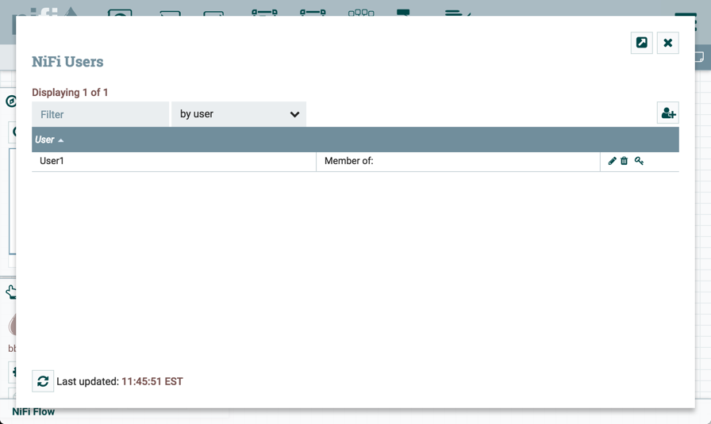
추가 아이콘을 클릭합니다 (). 사용자를 만들려면 NiFi 인스턴스를 확보하기 위해 선택한 인증 방법과 관련된 'Identity' 정보를 입력하십시오. 확인을 클릭합니다.
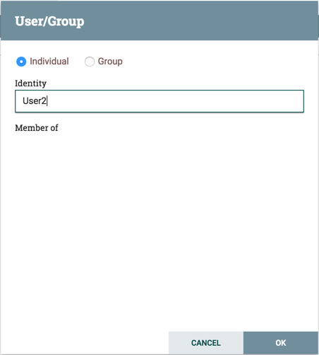
그룹을 만들려면 "그룹" 라디오 버튼을 선택하고 그룹 이름을 입력하고 그룹에 포함 된 사용자를 선택하십시오. 확인을 클릭합니다.
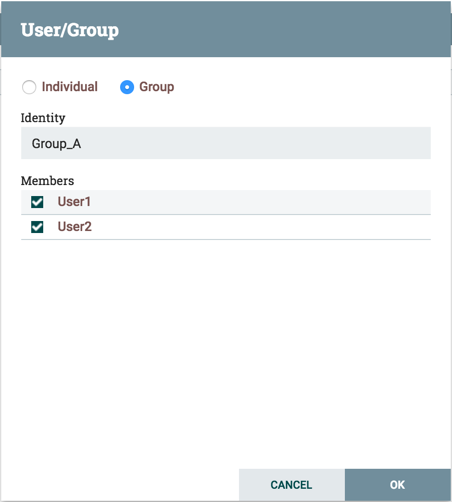
액세스 정책
사용자 및 그룹에 대한 능력을 관리하고 '액세스 정책'을 사용하여 NiFi 리소스를 보거나 수정할 수 있습니다. 리소스에 적용 할 수있는 두 가지 유형의 액세스 정책이 있습니다.
-
보기 — 본 방침은 리소스를 위해 작성된 경우, 해당 정책에 추가된 사용자 또는 그룹만이 해당 리소스의 세부 정보를 볼 수 있습니다.
-
수정 — 리소스가 수정된 경우, 해당 정책에 추가된 사용자 또는 그룹만 해당 리소스의 구성을 변경할 수 있습니다.
글로벌 및 구성 요소 수준에 대한 액세스 정책을 만들 수 있습니다.
글로벌 액세스 정책
글로벌 액세스 정책은 다음과 같은 시스템 수준의 허가를 관리합니다.
| - 연혁 | 특별 혜택 | 글로벌 메뉴 선택 | Resource 기술자 |
|---|---|---|---|
UI 보기 |
사용자가 UI를 볼 수 있습니다. |
N/A |
|
관제사에 접근 |
사용자는 관리 컨트롤러 서비스, 보고 작업, 레지스트리 클라이언트, 매개변수 공급자 및 클러스터의 노드를 포함한 컨트롤러를 볼 수 있습니다. |
관제사 설정 |
|
접근 매개변수 contexts |
사용자가 Parameter Contexts를 조회/변경할 수 있습니다. Parameter Contexts에 접근은 overridden이 없는 "access the controller" 정책에서 상속됩니다. |
모수 Contexts |
|
접근 연결관 |
사용자를 볼 수 있습니다/모듈 커넥터 |
N/A |
|
질문 검증 |
사용자가 Provenance Search 및 Request Event Lineage를 제출할 수 있습니다. |
데이터 검증 |
|
접근 제한 성분 |
사용자가 다른 권한이 충분하기 때문에 제한된 구성 요소를 만들 수 있습니다. 제한 사항 특정 권한이 필요한 것을 나타냅니다. 권한은 특정한 권한을 부여할 수 있습니다. 제한 또는 제한없이 부여됩니다. 제한없이 권한이 부여되면, 사용자는 모든 제한된 구성품을 만들/modify 할 수 있습니다. |
N/A |
|
모든 정책 |
사용자가 모든 구성품에 대한 정책을 볼 수 있습니다. |
회사연혁 |
|
액세스 사용자 / 사용자 그룹 |
사용자 및 사용자 그룹을 볼 수 있도록 허용 |
이름 * |
|
retrieve site-to-site 세부사항 |
다른 NiFi 인스턴스를 허용하여 Site-To-Site 세부 정보 검색 |
N/A |
|
전망 체계 진단 |
사용자가 시스템 진단을 볼 수 있습니다. |
제품정보 |
|
프록시 사용자 요청 |
다른 사람의 대신에 요청을 보낼 수있는 프록시 기계를 허용 |
N/A |
|
액세스 카운터 |
사용자를 조회/변경할 수 있습니다. |
계정 관리 |
|
구성 요소 레벨 액세스 정책
구성 요소 수준 접근 정책은 다음과 같은 구성 요소 수준 승인을 거칩니다.
| - 연혁 | 특별 혜택 | Resource Descriptor 및 활동 |
|---|---|---|
구성 보기 |
컴포넌트 구성 세부 사항을 볼 수 있도록 허용 |
|
구성품 수정 |
컴포넌트 구성을 수정할 수 있습니다. |
|
부품 작동 |
구성 요소 실행 상태 (start/stop/enable/disable), 원격 포트 전송 상태, 또는 종료 프로세서 스레드를 변경하여 구성 요소를 작동하도록 허용 |
|
인증현황 |
이 구성 요소에 의해 생성 된 입증 된 이벤트를 볼 수있는 사용자 |
|
데이터 보기 |
사용자가 메타데이터와 콘텐츠를 아웃바운드 연결의 플로우 파일 큐에 입력하고 검증된 이벤트를 통해 볼 수 있습니다. |
|
데이터 수정 |
외부 연결에서 빈 flowfile queues를 허용하고 검증된 이벤트를 통해 재생 제출 |
|
정책 보기 |
사용자가 구성을 볼 수 있는 사용자 목록을 볼 수 있습니다. |
|
정책 수정 |
사용자가 구성을 볼 수 있는 사용자 목록을 수정할 수 있습니다. |
|
사이트-to-site를 통해 데이터 수신 |
NiFi 인스턴스에서 데이터를 수신하는 포트를 허용 |
|
사이트-to-site를 통해 데이터 전송 |
NiFi 인스턴스에서 데이터를 보낼 포트 허용 |
|
| 연결을 제외한 모든 부품 유형에 액세스 정책을 적용할 수 있습니다. 연결 권한은 연결의 소스 및 대상 구성 요소에 대한 개별 액세스 정책뿐만 아니라 구성 요소를 포함하는 프로세스 그룹의 액세스 정책에 의해 주장됩니다. 이것은 더 자세히 설명되어 있습니다. 연결하기 그리고 연결 편집 아래 예제. |
| 연결에 대한 List Queue 또는 Delete Queue에 액세스하려면, 사용자는 "데이터보기" 및 "데이터 수정"에 대한 권한이 필요합니다. 클러스터화된 환경에서 모든 노드는 이러한 정책에 추가되어야 하며, 사용자가 클러스터의 노드를 통해 복제할 수 있습니다. |
오시는 길
관리자는 수동으로 dataflow의 모든 구성 요소에 대한 정책을 만들 필요가 없습니다. 시간 관리자의 양을 줄이기 위해 권한 관리에 지출, 정책은 부모 자원에서 아이 자원으로 상속됩니다. 예를 들어, 사용자가 프로세스 그룹을 보고 수정할 수 있는 액세스 권한을 부여하는 경우, 사용자가 프로세스 그룹에 컴포넌트를 보고 수정할 수 있습니다. 정책 상속은 관리자가 한 번에 정책을 할당하고 전체 데이터 흐름을 통해 정책이 적용됩니다.
상속된 정책에 대해 설명할 수 있습니다. 모바일 앱 아래 예제). 정책이 상속 된 정책을 제거, 부모에서 아이에게 상속의 사슬을 깨고, 사용자가 원하는대로 추가하는 교체 정책을 만듭니다. 본 정책 및 사용자들은 교체 정책을 삭제하여 복원 할 수 있습니다.
| “정책 보기” 및 “정책 변경” 구성 요소 수준 액세스 정책은 이 상속 행동에 예외입니다. 사용자가 정책에 추가되면 관리자의 현재 목록에 추가됩니다. 그들은 더 높은 수준의 관리자를 무시하지 않습니다. 이 이유를 들어, 특정 관리자 만 "정책 보기" 및 "정책 변경" 접근 정책을 표시하고 있습니다. |
| 당신은 상속 정책에 사용자 / 그룹을 수정할 수 없습니다. 사용자 및 그룹은 부모 정책 또는 과급 정책에서 추가 또는 제거 할 수 있습니다. |
사용자의 정책 보기
UI에서 Global Menu에서 “사용자”를 선택합니다. 이것은 NiFi 사용자 대화 상자를 엽니다.
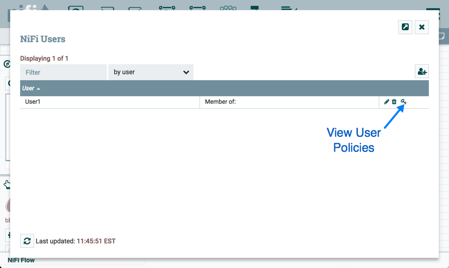
View User Policies 아이콘을 선택하십시오.).
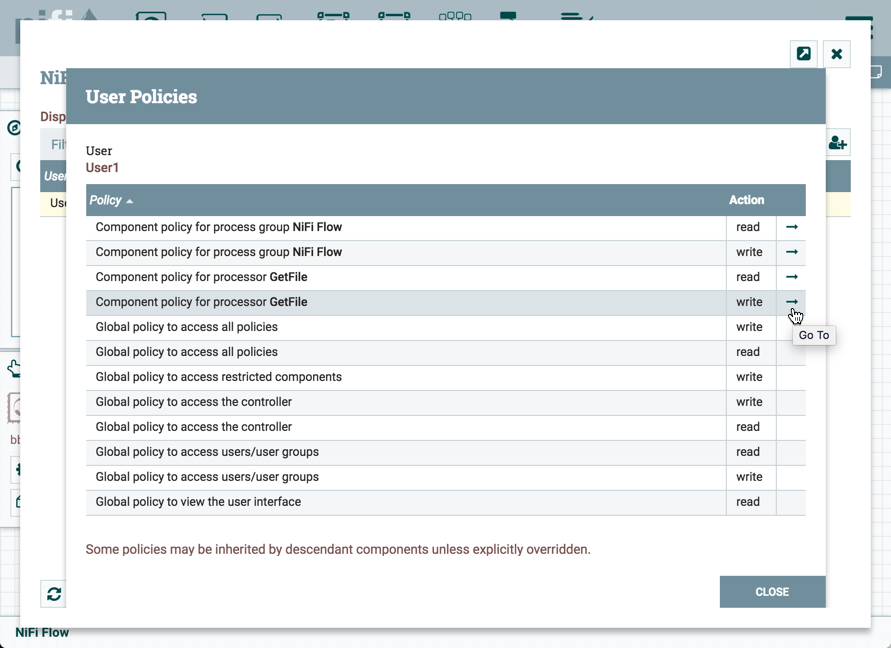
사용자 정책 창은 선택한 사용자를 위해 설정된 글로벌 및 구성 요소 수준 정책을 표시합니다. 아이콘을 선택하세요 ( ) 캔버스에 그 구성 요소를 탐색합니다.
) 캔버스에 그 구성 요소를 탐색합니다.
Access Policy 구성 예제
액세스 정책을 작성하고 적용하는 방법을 이해하는 가장 효과적인 방법은 일반적인 예를 통해 걸어야합니다. 다음 시나리오는 User1이 관리자이며 User2는 UI에 접근할 수 있는 새로 추가된 사용자입니다.
시작점으로 캔버스에 두 개의 프로세서를 시작합시다: GenerateFlowFile과 LogAttribute.
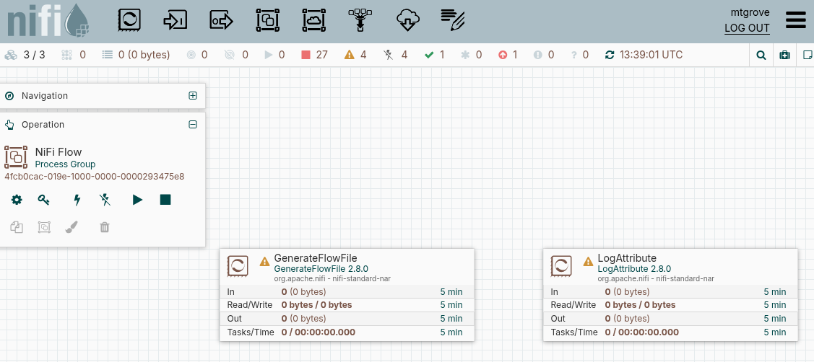
User1은 dataflow에 컴포넌트를 추가하고 이동, 편집 및 모든 프로세서를 연결할 수 있습니다. 루트 프로세스 그룹 및 프로세서의 세부 사항 및 속성은 User1에 표시됩니다.
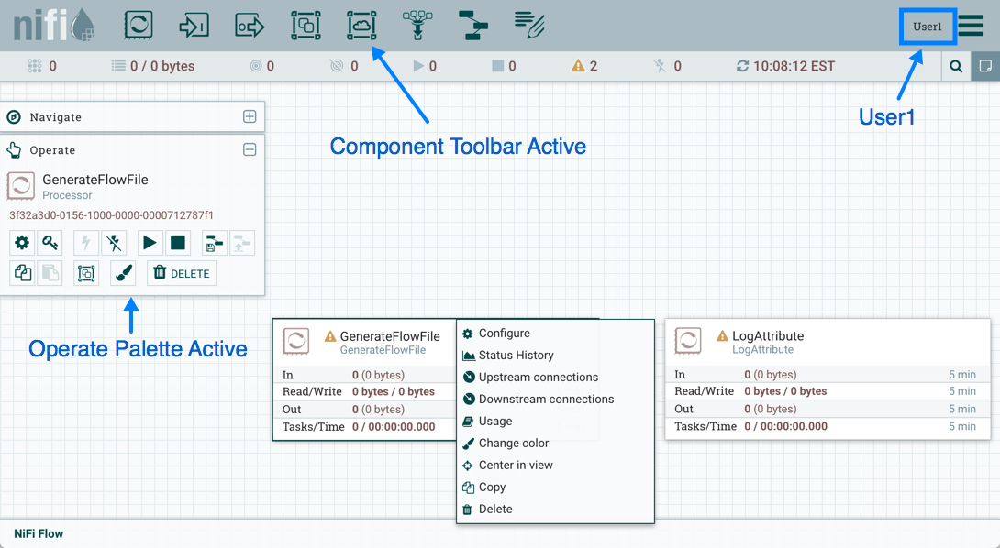
User1은 데이터 흐름과 그 구성 요소에 대한 현재의 특권을 유지하고자 합니다.
User2는 Dataflow 또는 이동, 편집 또는 구성 요소를 추가할 수 없습니다. 루트 프로세스 그룹 및 프로세서의 세부 사항 및 속성은 User2에서 숨겨집니다.
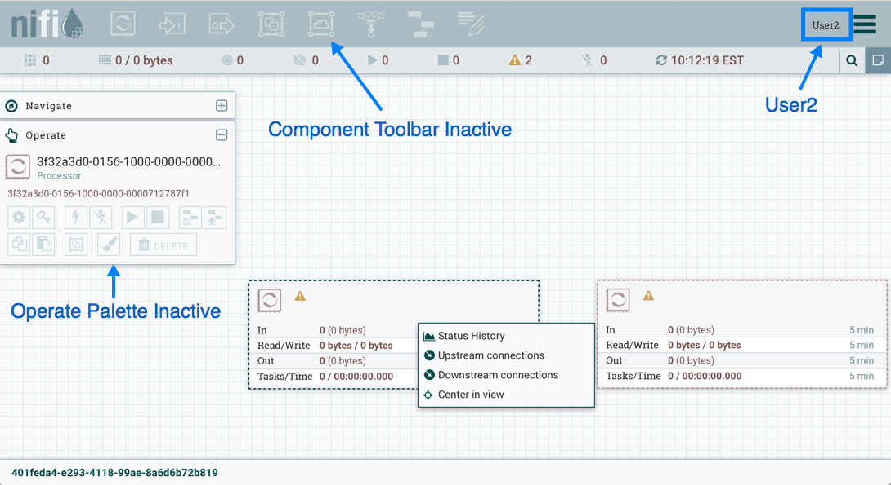
모바일 앱
Dataflow에서 GenerateFlowFile Processor를 이동할 수 있도록 User2는 다음과 같은 단계를 수행합니다.
-
GenerateFlowFile Processor를 선택하여 강조합니다.
-
Access Policies 아이콘을 선택하십시오 (
 ) Operate 팔레트 및 Access Policies 대화 상자에서 열립니다.
) Operate 팔레트 및 Access Policies 대화 상자에서 열립니다. -
정책 드롭다운에서 "Component"를 선택하십시오. “modify the component” policy that currently exists on Processor (child) is the “modify the component” policy awarded from the root process group (parent) on which User1 has 특권.
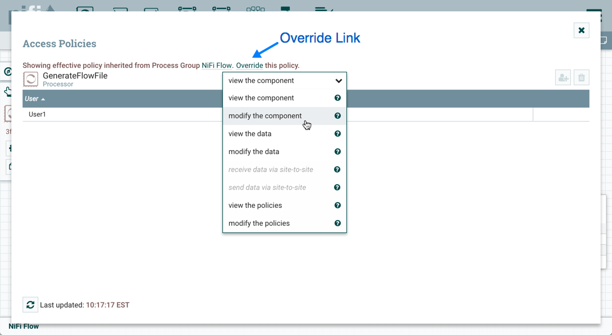
-
정책 상속 메시지에서 Override 링크를 선택하십시오. 교체 정책을 만들 때, 당신은 상속 정책 또는 빈 정책의 사본과 override에 대한 선택을 제공. Override 버튼을 선택하여 복사본을 만듭니다.
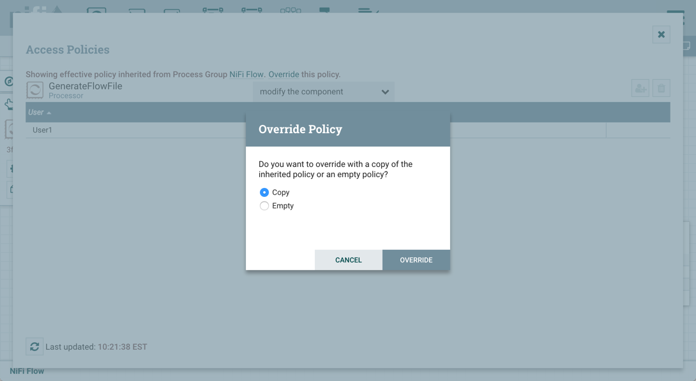
-
생성된 교체 정책에서 Add User 아이콘을 선택하십시오 (). User Identity 필드에서 User2를 찾아서 OK를 선택하십시오. 이러한 변경으로 User1은 캔버스에 프로세서를 모두 이동할 수 있는 능력을 유지합니다. User2는 이제 GenerateFlowFile 프로세서를 이동할 수 있지만 LogAttribute 프로세서를 이동할 수 없습니다.
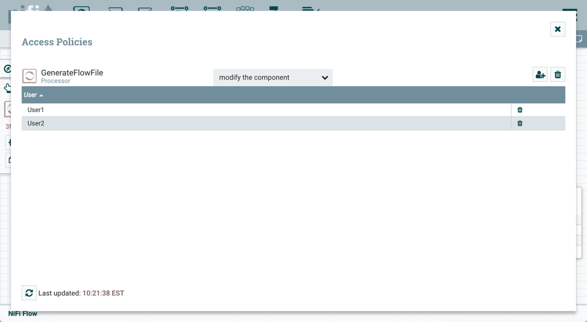
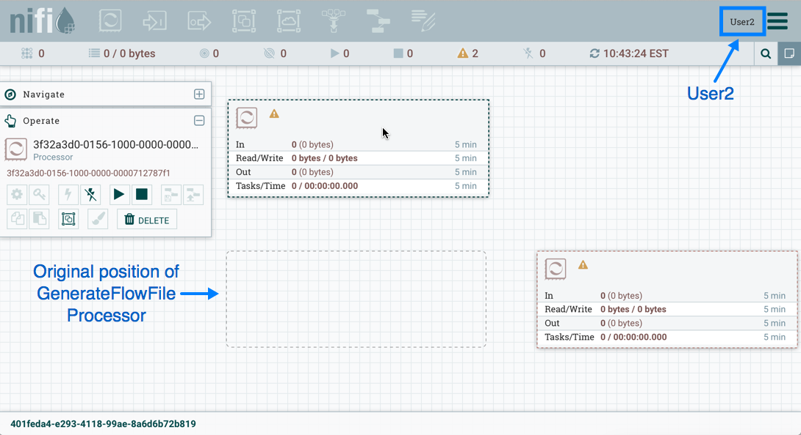
프로세서 편집
위의 "Moving a Processor"예에서 User2는 GenerateFlowFile의 "modify the Components"정책에 추가되었습니다. 프로세서 속성을 볼 수 없는 User2는 프로세서의 구성을 수정할 수 없습니다. 구성품을 편집하기 위해 사용자는 "View the Components"와 "modify the Components" 정책을 모두해야합니다. 이것을 구현하려면 User1은 다음 단계를 수행합니다.
-
GenerateFlowFile 프로세서를 선택하십시오.
-
Access Policies 아이콘을 선택하십시오 (
) Operate 팔레트 및 Access Policies 대화 상자에서 열립니다. -
정책 드롭다운에서 "부품보기"를 선택하십시오. 현재 프로세서에 존재하는 구성 요소” 정책을 볼 수 있습니다 (어린이)는 "보기 구성 요소"정책은 루트 프로세스 그룹에서 상속 (parent) 어떤 User1 권한이.
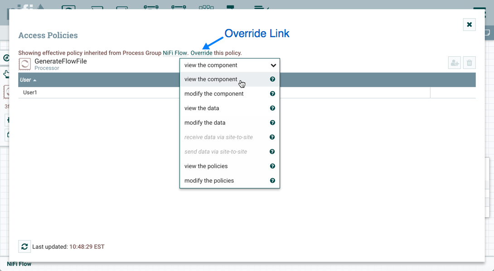
-
정책 상속 메시지의 오버라이드 링크를 선택하면 복사 정책의 기본을 유지하고 오버라이드 버튼을 선택하십시오.
-
생성된 오버라이드 정책에서 Add User 아이콘을 선택하십시오.). User Identity 필드에서 User2를 찾아서 OK를 선택하십시오. 이러한 변경으로 User1은 캔버스에 프로세서를 보고 편집할 수 있는 능력을 유지합니다. User2는 이제 GenerateFlowFile 프로세서를 볼 수 있습니다.
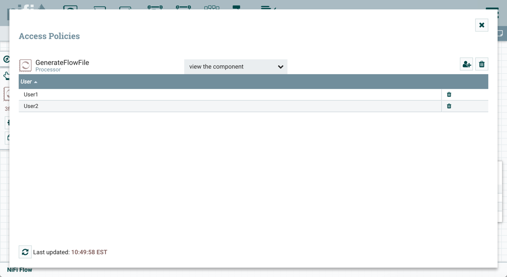
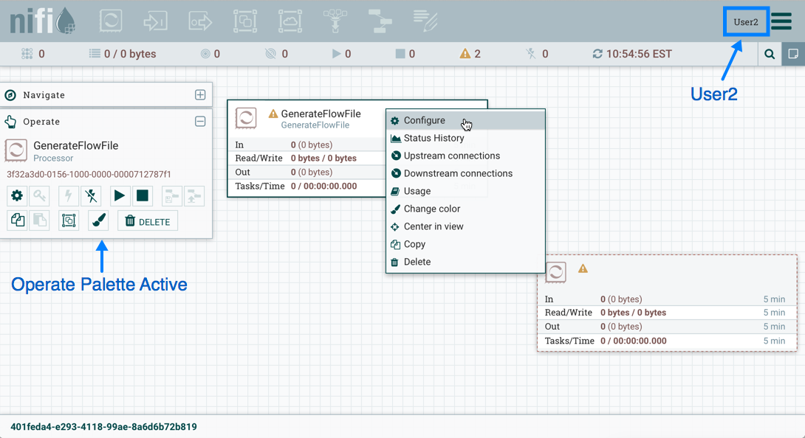
연결하기
이전 두 가지 예에서 논의 된 액세스 정책을 통해 User1은 GenerateFlowFile을 LogAttribute에 연결할 수 있습니다.
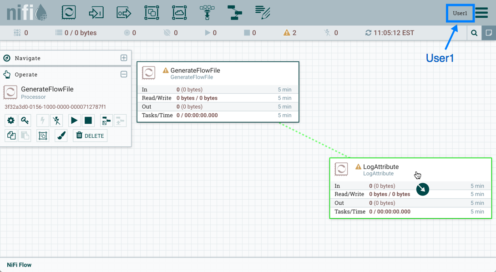
User2는 연결을 만들 수 없습니다:
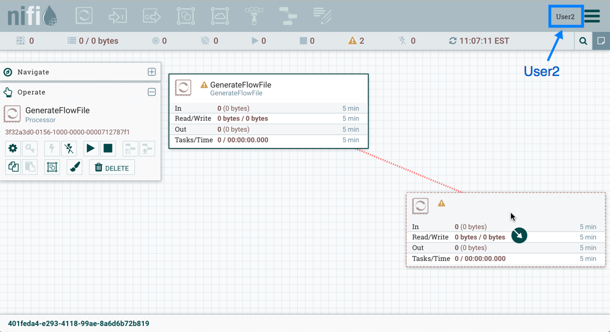
이 때문에:
-
User2는 프로세스 그룹에 대한 액세스를 수정하지 않습니다.
-
User2는 소스 구성 요소 (GenerateFlowFile)에 액세스하고 수정했지만, User2는 대상 구성 요소 (LogAttribute)에 액세스 정책을 가지고 있지 않습니다.
User2를 사용하여 GenerateFlowFile을 LogAttribute에 연결하여 User1:
-
루트 프로세스 그룹을 선택합니다. Operate 팔레트는 루트 프로세스 그룹에 대한 세부 사항으로 업데이트됩니다.
-
Access Policies 아이콘을 선택하십시오 (
) Operate 팔레트 및 Access Policies 대화 상자에서 열립니다. -
정책 드롭다운에서 "Component"를 선택하십시오.
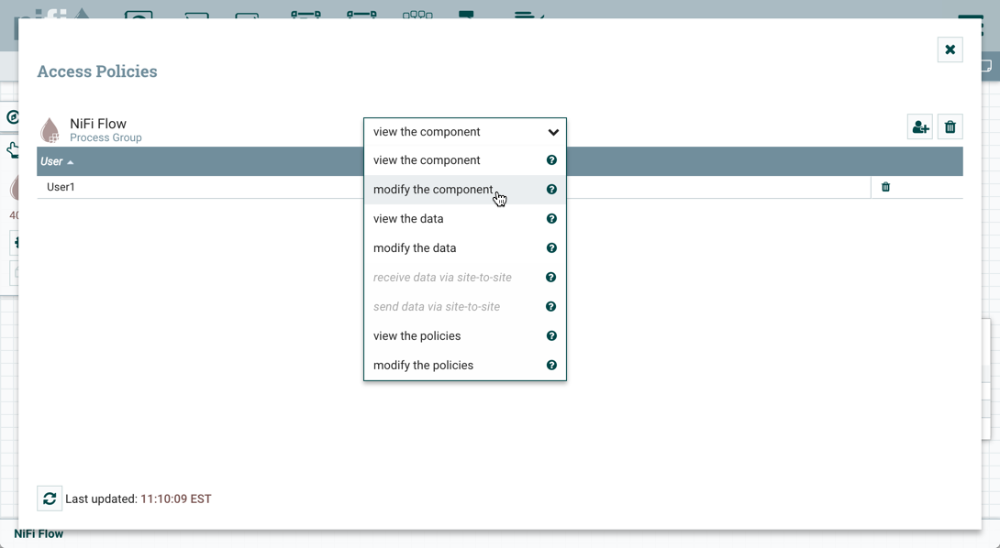
-
추가 사용자 아이콘 선택 (Add User icon)). User2를 찾아서 OK를 선택하십시오.
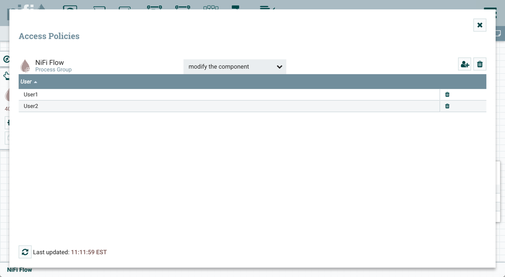
User2를 프로세스 그룹에 “modify 컴포넌트” 정책에 추가함으로써 User2는 정책 상속에 의해 LogAttribute 프로세서에 “modify the Components” 정책에 추가됩니다. 이를 확인하려면 LogAttribute 프로세서를 강조하고 Access Policies 아이콘을 선택하십시오 () Operate 팔레트에서:
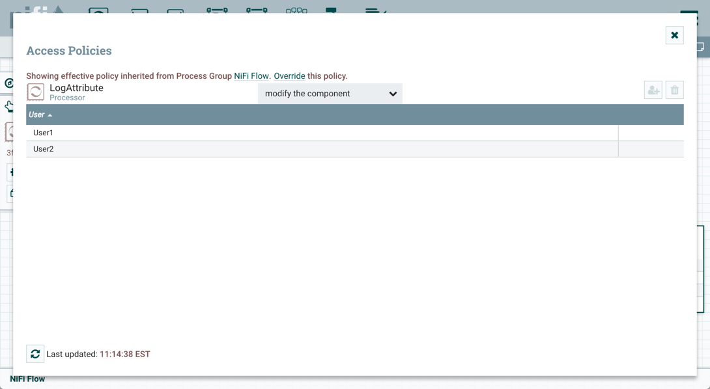
이러한 변경으로 User2는 이제 LogAttribute 프로세서에 GenerateFlowFile 프로세서를 연결할 수 있습니다.
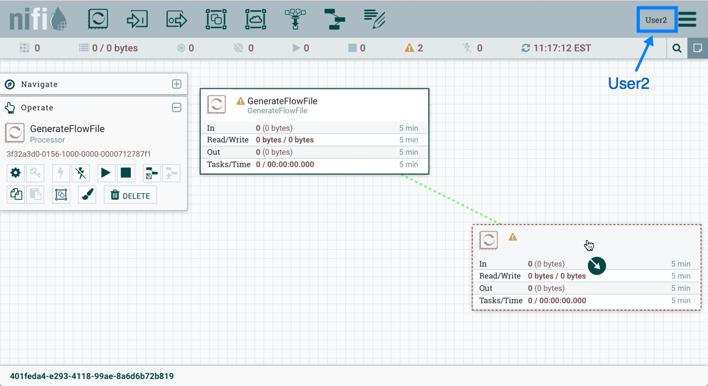
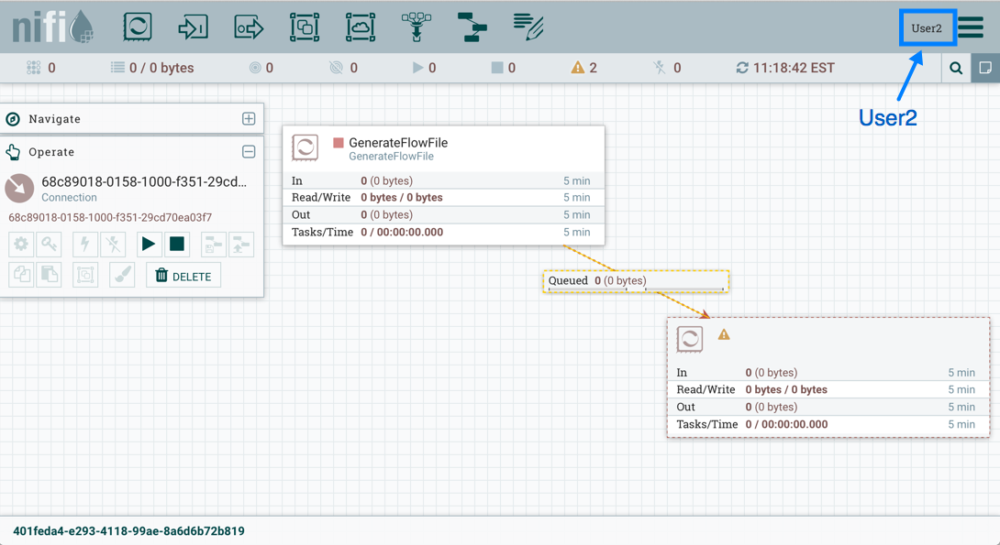
연결 편집
Assume User1 또는 User2는 루트 프로세스 그룹에 replaceText 프로세서를 추가합니다.
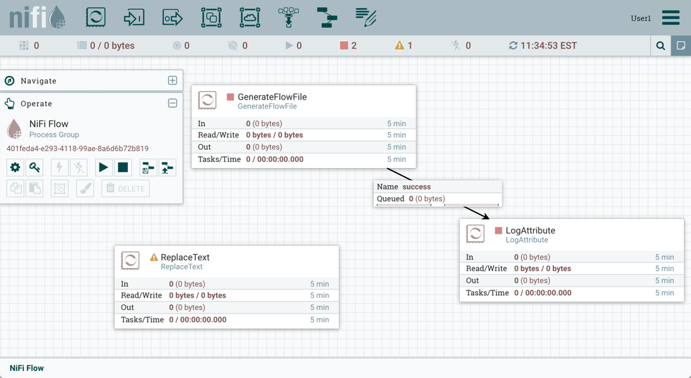
User1은 GenerateFlowFile을 대신하여 GenerateFlowFile을 선택하여 변경할 수 있습니다.
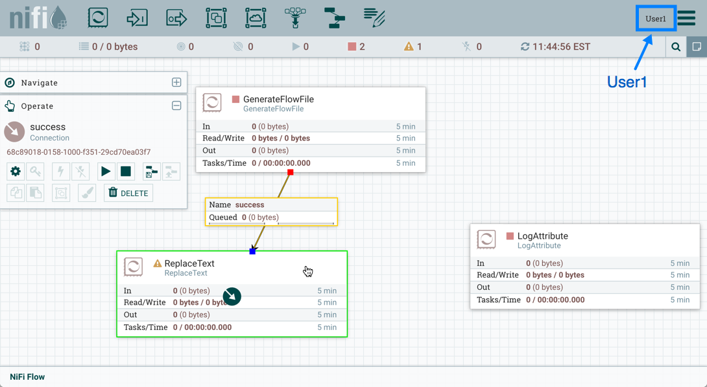
사용자 2는이 작업을 수행 할 수 없습니다.
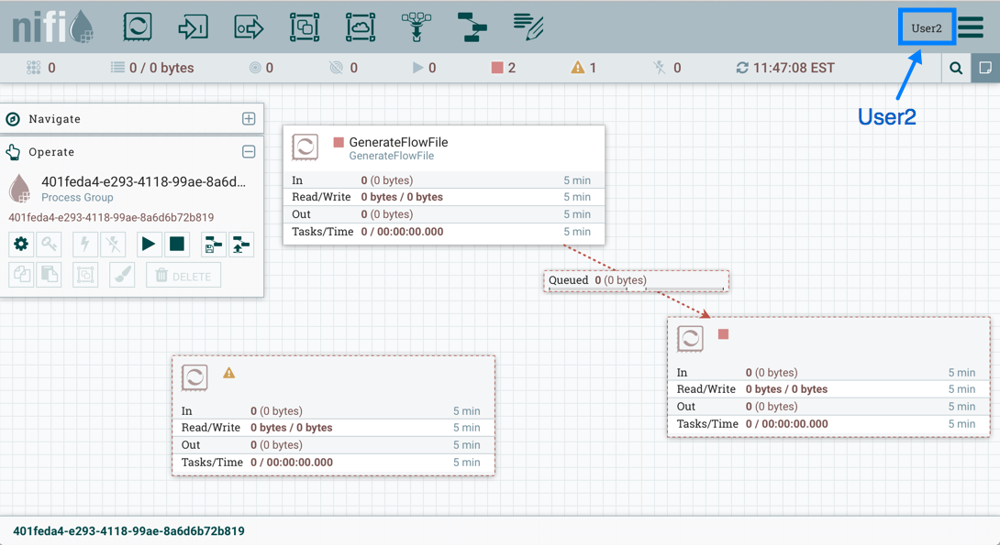
User2를 사용하여 GenerateFlowFile을 ReplaceText에 연결할 수 있습니다. User1:
-
루트 프로세스 그룹을 선택합니다. Operate 팔레트는 루트 프로세스 그룹에 대한 세부 사항으로 업데이트됩니다.
-
Access Policies 아이콘을 선택하십시오 (
). -
정책 드롭다운에서 "부품보기"를 선택하십시오.
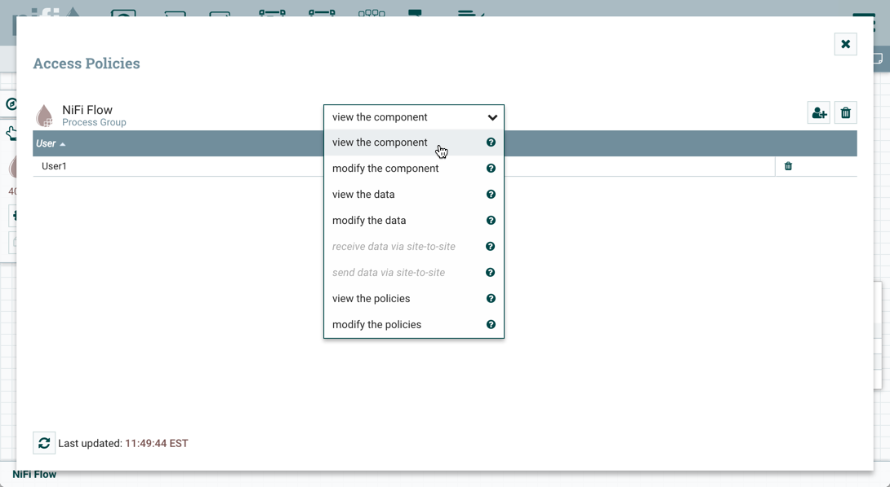
-
추가 사용자 아이콘 선택 (Add User icon)). User2를 찾아서 OK를 선택하십시오.
모두 보기에 추가되고 프로세스 그룹에 대한 정책을 수정, User2는 이제 GenerateFlowFile Processor를 ReplaceText Processor에 연결할 수 있습니다.
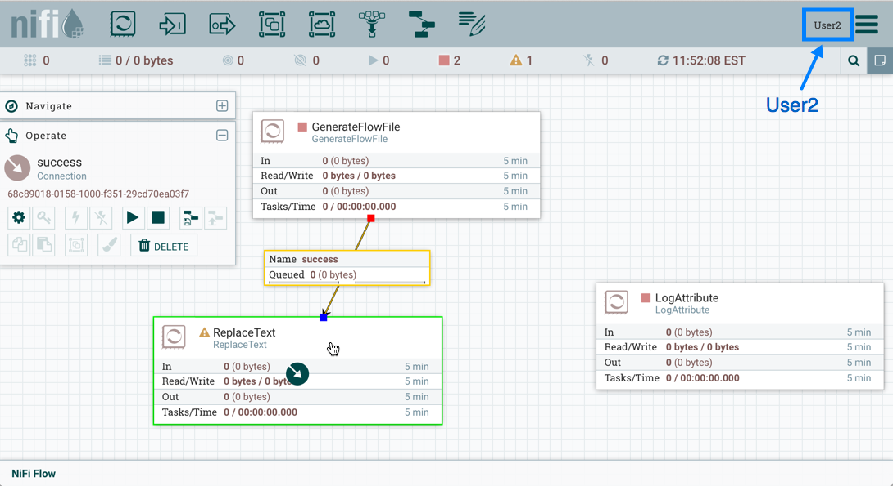
암호화 구성
EncryptContent 프로세서는 데이터의 암호화 및 해독을 허용합니다. 내부는 NiFi와 외부 시스템과 통합되어 외부 시스템과 통합됩니다. openssl 다른 데이터 소스 및 소비자.
핵심 Derivation 기능
Key Derivation Functions (KDF)는 인간 읽기 쉬운 정보, 일반적으로 암호 또는 다른 비밀 정보, 데이터 보호에 적합한 암호화 키로 번역됩니다. 더 많은 정보를 원하시면, read Key Derivation 기능에 대한 Wikipedia 항목.
NiFi 레거시 KDF
-
원래 KDF는 PBE에 대한 내부 키 파생에 대한 NiFi에 의해 사용, 이것은 암호의 concatenation에 MD5의 1000 침식과 8 또는 16 무작위 소금의 바이트 (염 길이는 선택된 cipher 블록 크기에 따라 달라집니다).
-
이 KDF는 NiFi 0.5.0로 분해 이전에 NiFi의 레거시 버전에 의해 암호화 된 데이터를 해독하는 백그라운드 호환성 만 사용해야합니다.
OpenSSL PKCS#5 v1.5 EVP BytesToKey를
-
이 KDF는 v0.4.0에 추가되었습니다.
-
이 KDF는 OpenSSL의 기본 PBE를 사용하여 암호화된 데이터와 호환이 됩니다.
EVP_BytesToKey. 이것은 암호의 concatenation에 MD5의 단일 반복 및 무작위 ASCII 소금의 8 바이트입니다. OpenSSL 사용 권장PBKDF2키 derivation에 대한하지만 명령줄 도구에 필요한 라이브러리 방법을 노출하지 않습니다, 그래서이 KDF는 여전히 명령줄 암호화에 대한 디 facto 기본값입니다.
암호화
-
이 KDF는 v0.5.0에 추가되었습니다.
-
암호화 에 근거를 둔 적응 기능입니다 전체장편 이름 * 이 KDF는 자동으로 임의 16 바이트 소금, 설정 가능한 비용 매개 변수 (또는 "작업 인자")를 통합하여 brute-force 공격에 대해 경화됩니다. 사이트맵 key derivation 동안 메모리의 "큰"블록에 액세스 할 때 (핵심 사이의 메모리를 공유). 그것은에 더 적은 저항합니다 사이트맵 문 배열이 개별 임베디드 RAM 블록에 액세스 할 수 있는 brute-force 공격.
-
Bcrypt-derived 해시의 길이가 항상 184 비트이기 때문에, 해시 출력 ( 알고리즘, 작업 인자 또는 소금 포함)은 다음으로 먹입니다
SHA-512digest 및 원하는 키 길이에 truncated. 입력에 avalanche 효과의 이점을 제공합니다. 이 키 기지개 메커니즘은 Apache NiFi 1.12.0에서 도입되었습니다.이 앞에, 완전한 산출 (algorithm, work Factor, salt, hash output for a total of 480 bits)는 SHA-512 소화 기능에 제공되었습니다. NiFi는 이 레거시 프로세스를 통해 파생 된 키를 사용하여 암호화 된 데이터를 투명하게 처리 할 수 있습니다. -
권장 최소 작업 요소는 12 (212 key derivation rounds ( commodity 하드웨어에서 2/1/2016의 것과 같이)는 합법적인 체계가 detrimental 지연을 직면할 것이라는 문턱에 증가되어야 합니다 (의 밑에 일정을 보십시오 또는 사용
BcryptCipherProviderGroovyTest#testDefaultConstructorShouldProvideStrongWorkFactor()안전한 최소한을 계산합니다. -
소금 형식은
$2a$10$ABCDEFGHIJKLMNOPQRSTUV. 소금은 delimited by$그리고 3개의 단면도는 다음과 같이 입니다:-
2a- 형식의 버전. 광범위한 설명은 찾을 수 있습니다 으로. 현재 NiFi 사용2a모든 소금은 내부적으로 생성됩니다. -
10- 작업 인자. 이것은 실제로 로그2 값, 그래서 총 반복 수 210 (1024) 이 경우. -
ABCDEFGHIJKLMNOPQRSTUV- 22 문자, Radix64 인코딩, unpadded, 원시 소금 값. 키 파생에 사용되는 16 바이트 소금에 이 decodes.Bcrypt Radix64 인코딩은 아니다. 표준 MIME Base64 인코딩과 호환됩니다.
-
암호화
-
이 KDF는 v0.5.0에 추가되었습니다.
-
암호화 응답에서 디자인된 적응 기능 입니다
bcrypt. 이 KDF는 각 파생를 위한 상대적으로 큰 양의 기억이, 그것에게 기계설비 brute 힘 공격에 저항하는 만들기 때문에 추천됩니다. -
추천된 최소 비용
N=214 (16,384),r=8,p=1 (2/1/2016의 필수 하드웨어에).p긍정적 인 정수가 있어야하며 더 적은(2^32 − 1) * (Hlen/MFlen)위치안내Hlendigest 함수 출력의 octets에 있는 길이는 (32를 위해 SHA-256)와MFlen섞는 기능 산출의 octets에 있는 길이는, 정의됩니다r * 128. 이 매개 변수는 적법한 시스템의 임계값으로 증가해야 한다 (아래 또는 사용의 일정 참조)ScryptCipherProviderGroovyTest#testDefaultConstructorShouldProvideStrongParameters()안전한 최소한을 계산합니다. -
소금 형식은
$s0$e0101$ABCDEFGHIJKLMNOPQRSTUV. 소금은 delimited by$그리고 3개의 단면도는 다음과 같이 입니다:-
s0- 형식의 버전. NiFi 현재 사용s0모든 소금은 내부적으로 생성됩니다. -
e0101- 비용 매개변수. 이것은 실제로 16 진수 인코딩의N,r,p사용 교대. 이것은 형성될 수 있습니다/parsed 사용Scrypt#encodeParams()그리고Scrypt#parseParameters().-
몇몇 외부 도서관 encode
N,r·p자주 묻는 질문$4000$1$1$(Nhex 인코딩에 저장0x4000, 이는0d16384, or 214 as0xe=0d14). 유틸리티 방법ScryptCipherProvider#translateSalt()외부 형태를 내부 형태로 변환합니다.
-
-
ABCDEFGHIJKLMNOPQRSTUV- 12-44 문자, Base64 인코딩, unpadded, 원시 소금 값. 키 파생에 사용되는 8-32 바이트 소금에 이 decodes.
-
PBKDF2의 특징
-
이 KDF는 v0.5.0에 추가되었습니다.
-
암호 기반 키 파생 기능 2 내부 pseudorandom 함수 (PRF)를 사용하는 적응성 파생 함수이며 암호와 소금 (최소 16 바이트)에 많은 시간을 가집니다.
-
PRF는 권장
HMAC/SHA-256orHMAC/SHA-512. HMAC 암호화 해시 함수의 사용은 길이 확장 공격을 mitigates. -
반복의 추천된 최소 수는 160,000입니다 (참고 하드웨어에서 2/1/2016의). 이 번호는 2 년마다 두 배로되어야 합니다 (아래 일정을 보십시오 또는 사용
PBKDF2CipherProviderGroovyTest#testDefaultConstructorShouldProvideStrongIterationCount()안전한 최소한을 계산합니다. -
이 KDF는 Memory-hard가 아닙니다. ( commodity 하드웨어로 크게 병렬화 될 수 있음) 하지만 충분히 충분히 권장됩니다. NIST SP 800-132 (PDF) 그리고 많은 암호 화폐 ( 적절한 반복 수와 HMAC 암호화 해시 함수와 함께 사용).
이름 *
-
이 KDF는 v0.5.0에 추가되었습니다.
-
이 KDF는 입력에 아무 가동도 수행하고 원시 키를 나타내는 감적이다. 키는 16 진수 인코딩에 제공되어야하며 관련 cipher/algorithm의 유효 길이입니다.
아르곤2
-
이 KDF는 v1.12.0에 추가되었습니다.
-
아르곤2 2015년 암호 해싱 대회를 수상한 주요 파생 함수입니다. 이 KDF는 GPU 공격의 예방, 측채널 공격의 예방, 또는 둘 다의 조합에 맞게 맞춤화 할 수있는 다양한 모드를 제공합니다. 가변 출력 키 길이를 허용합니다.
-
추천된 최소 비용
memory=216 (65,536) KiB,iterations=5,parallelism=8 (쉼 하드웨어에 4/22/2020의). 더 보기 아르곤2 사양 용지 (PDF) Section 9는 권장 매개 변수를 결정하는 데 사용되는 알고리즘을 설명합니다. 이 매개 변수는 합법적 인 시스템의 임계 값으로 증가해야합니다 (사용Argon2SecureHasherTest#testDefaultCostParamsShouldBeSufficient()안전한 최소한을 계산합니다. -
소금 형식은
$argon2id$v=19$m=65536,t=5,p=8$ABCDEFGHIJKLMNOPQRSTUV. 소금은 delimited by$그리고 4개의 단면도는 다음과 같이 입니다:-
argon2id- 알고리즘의 "type" (2i,2d,2id). NiFi 현재 사용argon2id모든 소금은 내부적으로 생성됩니다. -
v=19- 소수의 알고리즘의 버전 (0d19=0x13). NiFi 현재 사용0d19모든 소금은 내부적으로 생성됩니다. -
m=65536,t=5,p=8- 비용 매개변수. 이것은 기억, iterations 및 순서에 있는 평행선을 포함합니다. -
ABCDEFGHIJKLMNOPQRSTUV- 12-44 문자, Base64 인코딩, unpadded, 원시 소금 값. 키 파생에 사용되는 8-32 바이트 소금에 이 decodes.
-
소금과 IV 기호화
처음, EncryptContent 프로세서는 암호화 키가 사용자 정의된 비밀번호에서 단일 방법을 가지고 있었습니다. 현재는 다음과 같습니다. NiFiLegacy 형태, 효과적으로 MD5 digest, 1000 iterations. v0.4.0에서, 열쇠를 파생하는 다른 방법, OpenSSL PKCS#5 v1.5 EVP_BytesToKey NiFi 이외의 콘텐츠와 호환이 추가되었습니다. openssl 명령줄 도구. 둘 다 핵심 Derivation 기능 (KDF)는 하드 코딩 된 소화 기능 및 반복 수를 가지고 소금 형식도 하드 코딩되었습니다. v0.5.0로, 추가적인 KDF는 가변 침수, 일 요인 및 소금 체재로 소개됩니다. 또한, 핵심 암호화 소개되었습니다. 이 요구된 용량은 arbitrary 소금과 초기화 Vectors (IV)를 NiFi 또는 후속 시스템에 의해 복구 될 수 있도록 cipher 스트림으로 인코딩 할 수 있습니다 이러한 메시지를 해독.
기존 KDF의 경우 소금 형식이 변경되지 않았습니다.
NiFi 레거시
입력의 첫 번째 8 또는 16 바이트는 소금입니다. 소금 길이는 선택한 알고리즘의 cipher 블록 길이에 따라 결정됩니다. cipher 블록 크기가 결정될 수 없는 경우 (같은 스트림 cipher와 같은 RC4), 8 바이트의 기본 값은 사용됩니다. 해독에 소금은 암호화 키와 IV를 파생하기 위해 암호와 결합됩니다.
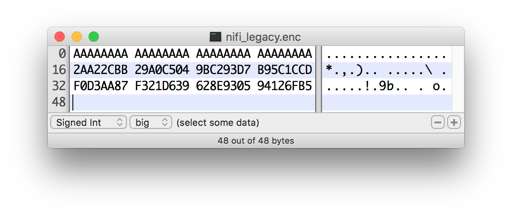
OpenSSL PKCS#5 v1.5 EVP BytesToKey를
OpenSSL은 소금을 꿴 열쇠 derivation를 허용합니다. *Unsalted 키 파생는 보안 위험이며 권장되지 않습니다. * 소금이 존재하는 경우, 입력의 첫 번째 8 바이트는 ASCII 문자열 “Salted ” (0x53 61 6C 74 65 64 5F 5F) 다음 8 바이트는 ASCII 인코딩 소금입니다. 해독에 소금은 암호화 키와 IV를 파생하기 위해 암호와 결합됩니다. 소금 헤더가없는 경우 전체 입력은 cipher 텍스트로 간주됩니다.
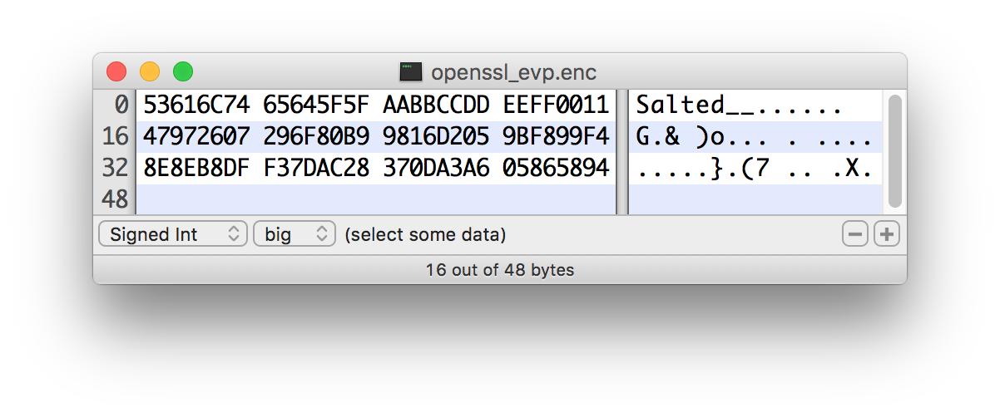
새로운 KDF를 위해, 비 결정적인 IV를 허용하는 각, IV는 cipher 원본과 함께 저장되어야 합니다. 이것은 취약점이 아닙니다. IV는 비밀이 아니며, 암호화 공격의 성공을 줄이기 위해 동일한 키를 사용하여 암호화 된 메시지에 고유해야합니다. 이 KDFs의 경우, 출력은 소금 delimiter, UTF-8 문자열 "NiFiSALT"에 따라 소금으로 구성되어 있습니다 (0x4E 69 46 69 53 41 4C 54) 그리고 그 IV는, IV delimiter에 의해, UTF-8 문자열 “NiFiIV” (0x4E 69 46 69 49 56), cipher 텍스트에 따라.
Flows에서 암호를 암호화
NiFi는 항상 모든 민감한 값 (passwords, 토큰 및 기타 자격 증명)을 디스크에 암호화 된 형식으로 변환합니다.
사용되는 암호화 알고리즘은 다음과 같습니다. nifi.sensitive.props.algorithm 암호화 키가 파생되는 암호는 nifi.sensitive.props.key in nifi.properties의 장점 (보기) 보안 설정 추가 정보).
NiFi는 AES Galois/Counter Mode (AES-GCM)를 사용하여 관련 데이터 (AEAD)와 인증된 암호화를 제공하는 여러 구성 옵션을 지원합니다. 이 알고리즘은 민감한 속성 키 구성을 기반으로 지정된 길이의 비밀 키를 유도하는 강력한 키 파생 기능을 사용합니다. 각 Key Derivation Function은 클러스터 노드의 흐름 구성 비교를 지원하기 위해 정적 소금을 사용합니다. 각 Key Derivation Function은 관련 보안 해싱 구현 클래스에서 정의된 기본 반복 및 비용 매개 변수를 사용합니다.
재산 암호화 알고리즘
뒤에 오는 강한 암호화 방법은 안으로 형성될 수 있습니다 nifi.sensitive.props.algorithm 이름:
-
NIFI_ARGON2_AES_GCM_256 -
NIFI_PBKDF2_AES_GCM_256
각 중요한 Derivation 기능은 뒤에 오는 과태 모수를 이용합니다:
-
아르곤2
-
폭: 5
-
메모리: 65536 KB
-
병렬: 8
-
-
PBKDF2의 특징
-
폭: 160,000
-
Pseudorandom 기능 가족: SHA-512
-
모든 옵션은 암호가 필요합니다 (nifi.sensitive.props.key 값) 적어도 12의 특성.
1.14.0 이상의 새로운 독립 설치에서 NiFi는 임의 값을 생성합니다. nifi.sensitive.props.key ·
한국어 NiFi는 생성 된 값을 nifi.properties 그리고 경고를 기록합니다.
NiFi의 클러스터 된 설치는 모든 노드에 구성되도록 동일한 값을 요구합니다.
재산 암호화 공급자
속성 암호화 제공자는 NiFi Archive에 패키지 된 프레임 워크 확장이며 민감한 값을 보호합니다.
NiFi 부하 및 초기 공급 업체를 시작으로 클래스 이름을 구성
nifi.security.property.encryption.provider.implementation. 재산이 빈 또는 누락될 때, NiFi는 적재합니다
기존 구성을 지원하는 표준 암호 기반 구현.
표준 배급은 포함합니다 org.apache.nifi.security.encryption.password.PasswordBasedPropertyEncryptionProvider·
derives에서 비밀 키 nifi.sensitive.props.key 선택된 Key Derivation Function 사용
nifi.sensitive.props.algorithm. 이 공급자는 읽고 암호화 된 표현을 작성합니다.
재산 암호화 알고리즘.
구성된 공급자는 뒤에 오는 가치를 보호합니다:
-
민감한 구성 요소 속성을 작성하고 persisted flow 구성에서 읽습니다.
-
민감한 매개 변수 값은 persisted flow configuration에서 읽습니다.
-
OpenID는 인증된 사용자를 대신하여 등록된 클라이언트 토큰을 연결합니다.
표준 암호 기반 공급자가 설명 된 표현을 생산하기 때문에 재산 암호화 알고리즘, NiFi의 이전 버전에 의해 기록된 교류 윤곽은 적재하는 것을 계속합니다 추가 마이그레이션 없이.
Sensitive 속성 Context
NiFi는 모든 암호화 및 해독 작업과 Sensitive Property Context를 제공합니다. 컨텍스트는 속성을 설명하는 속성과 함께 보호되는 값의 종류를 설명하는 범주. 구성 요소 속성은 구성 요소 식별자, 구성 요소 유형 및 속성 이름을 공급합니다. 모수 공급 the 매개변수 Context 이름과 모수 이름. 권한 토큰은 속성을 수행하지 않고, 아무것도 설명하지 않기 때문에 인증된 사용자는 저장된 토큰이 해독되기 전에 알려집니다.
구현은 암호화 컨텍스트로 외부 키 관리 서비스에 컨텍스트를 공급할 수 있습니다. 흐름의 위치에 암호화 된 값 및 감사의 위치를 기록합니다. NiFi는 때 동일한 맥락을 공급합니다 값이 암호화되었을 때 공급되는 값으로 해독합니다. 상황에 바인딩하는 구현 암호화된 값은 컴포넌트나 매개변수가 있다면 읽을 수 없는 값을 준비해야 합니다. 다른 식별자로 renamed 또는 recreated입니다.
공급자 구성
공급자는 속성에서 추가 구성을 읽을 수 있습니다.
nifi.security.property.encryption.provider.properties.. NiFi는 속성을 공급하기 전에 접두사를 제거합니다.
공급자, 이렇게 nifi.security.property.encryption.provider.properties.endpoint 공급자에 공급됩니다 endpoint·
외부 키 관리 서비스에 의해 뒷받침된 구현과 같은 원격 서비스를 호출하는 공급자는 또한 할 수 있습니다
초기화 중에 NiFi가 공급되는 TLS 구성을 사용합니다.
구성된 공급자를 변경하거나, 공급자가 사용하는 주요 자료를 변경하고, 기존의 암호화된 가치를 만듭니다. 읽음 민감한 값은 새로운 구성이 동일하게 해결되지 않는 한 변경 후 다시 입력해야합니다. 핵심 물자.
NiFi Toolkit 관리 도구
NiFi Toolkit는 또한 단독 및 클러스터링 환경에서 NiFi 유지 보수를 지원하기 위해 관리자의 명령 줄 유틸리티를 포함합니다.
-
CLI - 더
cli도구는 관리자가 NiFi 및 NiFi Registry 인스턴스와 상호 작용하여 버전의 흐름 및 관리 프로세스 그룹 및 클러스터 노드와 같은 작업을 자동화 할 수 있습니다.
각 유틸리티에 대한 자세한 내용은 NiFi 툴킷 가이드.
Clustering 구성
이 섹션은 기본 클러스터를 설정하는 방법에 대한 NiFi 클러스터링 및 지침의 빠른 개요를 제공합니다. 미래에, 우리는 깊이에 NiFi 클러스터 아키텍처를 포함하는 보충 문서를 제공 희망.
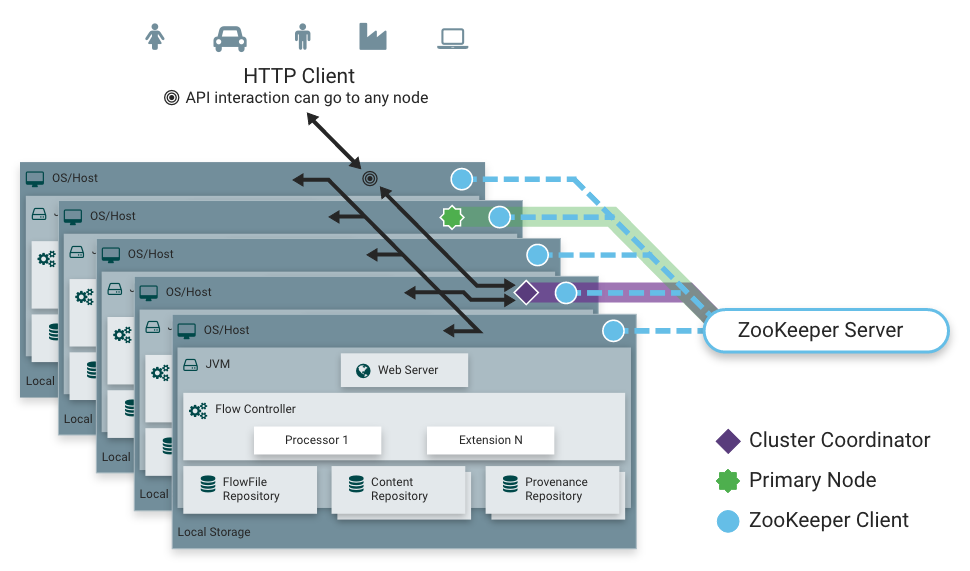
Zero-Leader 클러스터링
NiFi는 Zero-Leader 클러스터링 패러다임을 사용합니다. 클러스터의 각 노드는 동일한 흐름을 가지고 있으며 같은 작업을 수행합니다. 데이터이지만, 각 데이터의 다른 설정에서 작동합니다. 클러스터는 모든 활성 노드를 통해 데이터를 자동으로 배포합니다.
노드 중 하나가 자동으로 선출됩니다 ( Apache를 통해 ZooKeeper는 클러스터 조정자로. 클러스터의 모든 노드는 Heartbeat/status 정보를 보낼 것입니다. 이 노드에, 이 노드는 어떤 heartbeat 상태를 보고하지 않는 노드를 차단하는 책임입니다. 몇 시간 동안. 또한, 새로운 노드가 클러스터에 합류할 때, 새로운 노드는 먼저 해야 합니다. 최신 흐름을 얻기 위해 현재 선택된 클러스터 코디네이터에 연결. 클러스터 Coordinator는 노드가 참여할 수 있음을 결정합니다. 비밀번호 파일), 현재 Flow는 노드에 제공되며 노드는 클러스터에 참여할 수 있으며 노드의 복사본을 추측하는 것 Flow는 클러스터 코디네이터에 의해 제공된 복사본을 일치합니다. Flow 구성의 노드 버전이 다릅니다. 클러스터 코디네이터(Cluster Coordinator)의 노드는 클러스터에 참여하지 않습니다.
왜 클러스터?
NiFi Administrators 또는 DataFlow Managers (DFMs)는 단일 서버의 NiFi 인스턴스를 사용하여 찾을 수 없습니다. 충분히 데이터의 양을 처리하는. 그래서, 하나의 솔루션은 여러 NiFi 서버에 동일한 데이터 흐름을 실행하는 것입니다. 그러나, 이것은 각 시간 DFMs가 변화하거나 dataflow를 업데이트하고 있기 때문에 관리 문제를 만듭니다. 각 서버에서 변경한 다음 각 서버를 개별적으로 모니터링합니다. NiFi 서버 클러스터링으로, 그것은 가능 Dataflow 변경 및 모니터링을 위해 단일 인터페이스와 함께 처리 능력을 증가 시켰습니다. 데이터 흐름. 클러스터링은 DFM이 각 변경을 한 번만 만들 수 있으며, 변경은 모든 노드에 복제됩니다. 클러스터의. 단일 인터페이스를 통해 DFM은 모든 노드의 건강과 상태를 모니터링 할 수 있습니다.
용어 정의
NiFi Clustering은 독특하고 자신의 용어를 가지고 있습니다. 클러스터를 설정하기 전에 다음과 같은 용어를 이해하는 것이 중요합니다.
NiFi 클러스터 조정기: NiFi 클러스터 코디네이터는 NiFi 클러스터의 노드입니다. 클러스터에서 노드가 허용되는 작업을 관리하고 최신의 흐름을 제공하여 노드에 새로 합류합니다. 시간 : DataFlow Manager는 클러스터의 데이터 흐름을 관리하며 클러스터의 노드의 사용자 인터페이스를 통해 수행 할 수 있습니다. 이름 * 변경은 클러스터의 모든 노드에 복제됩니다.
팟캐스트: 각 클러스터는 하나 이상의 노드로 구성됩니다. 노드는 실제 데이터 처리를 합니다.
기본 노드: 각 클러스터에는 1개의 기본 노드가 있습니다. 이 노드에서 "Isolated Processor"를 실행할 수 있습니다 (아래 참조). ZooKeeper는 1차 노드를 자동으로 무시하는 데 사용됩니다. 노드가 어떤 이유로 클러스터에서 분리되는 경우, 새로운 (주) 노드는 자동으로 선출됩니다. 노드가 현재 선출되는 것을 결정할 수 있습니다. User Interface의 클러스터 관리 페이지를 찾고 있습니다.
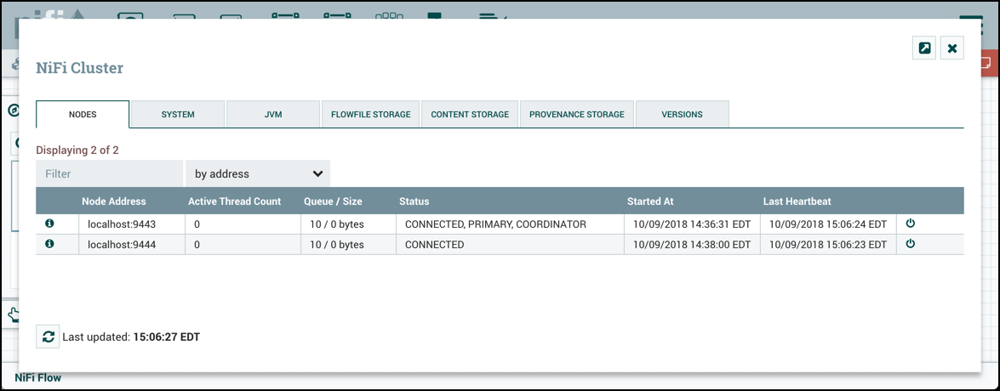
고립된 가공업자: NiFi 클러스터에서 동일한 dataflow는 모든 노드에서 실행됩니다. 결과적으로, 흐름에 있는 각 성분 각 노드에서 실행합니다. 하지만, DFM이 각 노드에서 실행할 때마다 모든 프로세서를 원하지 않을 경우도 있습니다. 가장 많이 공통의 경우를 사용하여 외부 서비스와 잘 스케일하지 않는 프로토콜을 사용하여 통신하는 프로세서를 사용할 수 있습니다. 예를 들어, GetSFTP 프로세서는 원격 디렉토리에서 끌어들입니다. GetSFTP 프로세서가 모든 노드에서 실행되는 경우 클러스터와 같은 원격 디렉토리에서 잡아 동시에 승리 할 수 있습니다. 따라서, DFM는 할 수 있었습니다 isolation에서 실행하려면 기본 노드에서 GetSFTP를 구성하고, 그 노드에서만 실행되는 것을 의미한다. 적절한 Dataflow 구성으로 클러스터의 노드의 나머지 부분에서 데이터 및 로드밸런스를 끌어낼 수 있습니다. 그 동안 기능 존재, 그것은 또한 단순히 데이터를 끌어 당기는 독립 NiFi 인스턴스를 사용 하 여 클러스터에 그것을 피드. 그것은 단지 사용할 수있는 리소스에 의존하고 Administrator가 클러스터를 구성하기로 결정하는 방법.
하트베트: 노드는 현재 선출된 클러스터 코디네이터에 건강과 상태를 "heartbeats"를 통해 전달합니다. 코디네이터가 클러스터에 연결되고 제대로 작동한다는 것을 알고 있습니다. 기본적으로 노드가 방출 각 5 초마다 심박수, 클러스터 코디네이터가 40 초 이내에 노드에서 심박수를받지 않는 경우 (= 5 초 * 8), "lack of heartbeat"로 노드를 분리합니다. 5초 및 8배 설정은 설정 가능 nifi.properties의 장점 파일 (see) 이름 * Cluster 공통 속성 더 많은 정보를 위한 단면도). 클러스터 코디네이터의 이유 노드를 분리하면 Coordinator가 클러스터의 모든 노드가 동기화되어 노드가 노드가 노드가 노드가 노드에 있는지 확인해야 합니다. 정기적으로 듣지 않습니다. 코디네이터는 클러스터의 나머지와 동기화 할 수 없습니다. 후, 40 초, 노드는 새로운 심박수를 보내며, 코디네이터는 노드가 클러스터를 다시 조인하도록 요청합니다. 노드의 흐름의 재효율이 포함되어 있습니다. 심박수의 부족으로 인해 차단과 심장박수가 수신되면 다시 연결이 DFM에보고됩니다. 사용자 인터페이스에서.
클러스터 내의 통신
노드는 심박수를 통해 클러스터 코디네이터와 통신합니다. Cluster Coordinator가 선출되면 업데이트 Apache ZooKeeper의 잘 알려진 ZNode는 연결 정보를 사용하여 노드가 심장부를 보내는 것을 이해합니다. 1 페이지 노드가 내려갑니다. 클러스터의 다른 노드는 누락된 노드의 부하를 자동으로 선택하지 않습니다. 그것은 가능 DFM의 데이터 흐름을 구성하는 것은 실패의 연속성; 그러나, 이것은 데이터 흐름 설계에 의존하고하지 않습니다 자주 묻는 질문
DFM이 Dataflow로 변경할 때, Flow를 변경하는 요청을 수신하는 노드는 변경 사항을 모두 전달합니다. 노드와 각 노드의 응답을 기다립니다. 로컬 플로우의 변경을 나타내는.
Nodes 관리
Disconnect 노드
DFM은 클러스터에서 노드를 수동으로 분리할 수 있습니다. 노드는 심장부의 부족과 같은 다른 이유로 차단될 수 있습니다. 클러스터 코디네이터는 노드가 차단될 때 사용자 인터페이스의 게시판을 표시합니다. 노드의 문제점이 해결될 때까지 DFM은 나머지 클러스터의 데이터 흐름으로 변경할 수 있는 제한적 능력이 있습니다. 구성 요소 상태를 변경하거나 구성 요소를 추가 할 수 있지만 구성 요소를 제거하지 않습니다.
아마도 완전히 일하는 노드. 노드가 네트워크 문제로 인해 클러스터 코디네이터와 통신할 수없는 경우 예를 들어 몇 가지 이유가 발생할 수 있습니다.
분리된 노드의 데이터 흐름이 변경 될 수 있음을 알려드립니다. 노드가 클러스터로 재조정될 때 변경 사항이 발생한다. 변경을 반전하면 데이터의 손실이 발생하면 클러스터를 재조립할 수 없습니다. 새로운 dataflow가 끊긴 노드에 만들어지기 때문에 발생할 수 있습니다.
노드를 수동으로 분리하려면 "Disconnect" 아이콘을 선택하십시오 () 노드의 행에서.
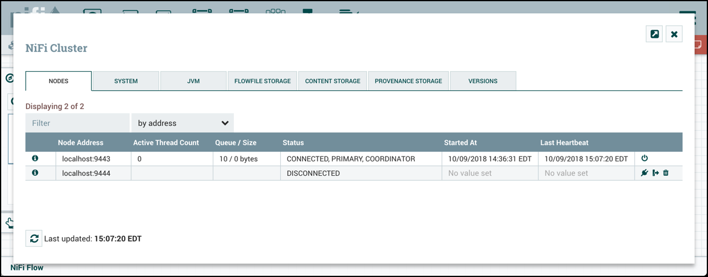
분리된 노드는 연결될 수 있습니다 (), 해제 () 또는 삭제 ( ).
).
| "Disconnected" 상태의 모든 노드가 해제될 수 없습니다. 노드가 끊어지지 않는 경우, 오프로드 요청은 노드가 오프로드를 시작할 수 없습니다. 또한, 오프로드는 방화벽 규칙 때문에 중단되거나 예방 될 수 있습니다. |
Offload 노드
분리된 노드에 남아 있는 Flowfiles는 오프로드를 통해 클러스터의 다른 활성 노드로 재밸런싱할 수 있습니다. 클러스터 관리 대화에서 "Offload" 아이콘을 선택하십시오 () Disconnected 노드의 경우. 이 모든 프로세서를 중지, 모든 프로세서를 종료, 모든 원격 프로세스 그룹에 전송 중지 및 클러스터의 다른 연결된 노드에 리밸런스.
오류로 인해 "Offloading"상태에 남아있는 노드 (메모리, 네트워크 연결 등)는 노드에 NiFi를 재시작하여 클러스터에 다시 연결될 수 있습니다. Offloaded 노드는 클러스터에 연결될 수 있습니다. (Connect or restarting NiFi on the node) 또는 클러스터에서 삭제.
노드 삭제
DFM이 흐름에 변화를 계속할 수 있는 경우, 노드가 클러스터에 연결되지 않는 경우에도 마찬가지입니다. 이 경우 DFM은 클러스터에서 노드를 완전히 삭제할 수 있습니다. 클러스터 관리 대화에서 "Delete" 아이콘을 선택하십시오 () Disconnected 또는 Offloaded 노드의 경우. 삭제되면 노드가 다시 시작될 때까지 클러스터에 다시 열 수 없습니다.
Decommission 노드
노드를 제거하고 클러스터에서 제거하는 단계는 다음과 같습니다.
-
노드를 분리합니다.
-
완료가 완료되면 노드를 해제합니다.
-
오프로드가 완료되면 노드를 삭제합니다.
-
삭제 요청이 완료되면, 호스트에 NiFi 서비스를 중지/제거하십시오.
NiFi CLI 노드 명령
UI에 대한 대안으로, 다음 NiFi CLI 명령은 단일 노드를 검색하는 데 사용될 수 있으며 노드 목록을 검색하고 연결/disconnecting/offloading/deleting 노드를 연결합니다.
-
nifi get-node -
nifi get-nodes -
nifi connect-node -
nifi disconnect-node -
nifi offload-node -
nifi delete-node
더 많은 정보를 원하시면, NiFi 클립 본문 바로가기 NiFi 툴킷 가이드.
교류 선거
클러스터가 처음 시작될 때, NiFi는 노드가 있는 것을 결정해야 합니다.
흐름의 "correct"버전. 노드의 각이 있는 흐름에 투표하여 수행됩니다. 노드의 경우
클러스터에 연결하는 시도, 그것은 그것의 로컬 흐름의 사본을 제공 하 고 (정책 공급자가 NiFi를 통해 구성을 허용 하는 경우)
사용자, 그룹 및 정책, 클러스터 조정자에. 흐름 없음
아직 "correct"흐름을 선출했지만 노드의 흐름은 다른 노드의 흐름에 비해. 다른 경우
노드의 흐름이 일치, 투표는이 흐름에 캐스팅. 다른 노드가 같은 흐름을 아직 보고하지 않은 경우, 이것은
흐름은 아마도 선출 한 흐름의 풀에 추가 될 것입니다. 이름 *
몇 가지 시간을 가지고 탈출 (설정하여 설정 nifi.cluster.flow.election.max.wait.time 재산) 또는
몇 가지 노드가 캐스트 투표 (configured by setting by setting by setting nifi.cluster.flow.election.max.candidates 재산),
흐름은 흐름의 "correct"복사로 선출된다.
데이터 흐름, 사용자, 그룹, 그리고 그 선출과 정책 충돌이 어떤 충돌 리소스를 백업하고 로컬을 교체하는 모든 노드
클러스터의 자원. 백업은 구성된 Access Policy Provider 및 User Group Provider에 따라 수행됩니다.
파일 기반 액세스 정책 제공 업체의 경우, 백업은 기존 파일 (예 : $NIFI HOME / conf)과 동일한 디렉토리에 작성되며 동일한
이름과 ""의 스핑과 함께. 그리고 타임스탬프. 예를 들어, 1 월 1, 2020에서 클러스터의 흐름과 교류가 교차하는 경우,
노드의 flow.json.gz 파일이 복사됩니다 flow.json.gz.2020-01-01-12-05-03 그리고 클러스터의 흐름은 다음과 같이 쓸 것이다. flow.json.gz·
마찬가지로, 이것은 일어날 것이다 users.xml 그리고 authorizations.xml 파일. 이것은 흐름이 수동으로 다시 거릴 수 있도록
백업 파일을 renaming하여 flow.json.gz, 예를 들면.
선출 된 흐름을 상속하기 전에주의하는 것이 중요합니다. NiFi는 FlowFile 저장소와 어떤 스왑 파일을 통해 먼저 읽을 것입니다. dataflow의 큐는 현재 데이터를 보유합니다. FlowFile을 포함하는 데이터 플로우에 어떤 큐가 존재하는 경우, queue는 선출에 존재해야합니다. 데이터 흐름. 선출 된 데이터 흐름에 존재하지 않는 경우 노드는 데이터 흐름, 사용자, 그룹 및 정책을 상속하지 않습니다. 대신, NiFi는 그 효과에 오류를 기록하고 시작 실패합니다. 노드가 연결에 저장된 데이터가 있는 경우에도 클러스터의 데이터 흐름이 다릅니다. 노드를 다시 시작하면 데이터 손실이 발생하지 않습니다.
Election은 모든 흐름이 빈지 않는 한 "empty flow"가없는 동굴이있는 "popular vote"에 따라 수행됩니다. 으로 관리자가 노드를 제거 할 수 있도록 프로젝트 파일 및 노드를 다시 시작, 노드의 흐름이 다른 흐름이 발견되지 않는 한 "correct"흐름이 될 수 없습니다. 같은 투표 수를받은 두 개의 비 빈 흐름이 있다면, 그 중 하나 유량은 선택됩니다. 이러한 흐름이 정의되지 않고 언제든지 변경 될 수 있음을 결정하는 방법론.
기본 클러스터 설정
이 섹션은 NiFi의 세 가지 인스턴스로 구성된 간단한 3 노드, 비보안 클러스터의 설정을 설명합니다.
각 인스턴스의 경우, 특정 속성 nifi.properties의 장점 파일은 업데이트해야합니다. 특히 웹 및 클러스터링 특성 당신의 상황을 평가하고 그러므로 조정되어야 합니다. 모든 재산은 묘사됩니다 시스템 특성 이들의 가이드; 그러나,이 섹션에서, 우리는 간단한 클러스터를 설정해야 최소한의 속성에 초점을 맞출 것이다.
모든 3개의 경우, Cluster 공통 속성 기본 설정으로 왼쪽 할 수 있습니다. 참고, 그러나, 당신이 이러한 설정을 변경하는 경우, 클러스터의 모든 인스턴스에 동일하게 설정해야 합니다.
각 노드의 경우 최소 속성은 다음과 같습니다.
-
이름 * 웹 속성 섹션에서는 Node를 실행하려면 HTTP 또는 HTTPS 포트를 설정합니다. 또한 HTTP 또는 HTTPS 호스트 속성을 설정해야 할지 고려하십시오. 클러스터의 모든 노드는 동일한 프로토콜 설정을 사용한다.
-
이름 * 국가 관리 섹션, 설정
nifi.state.management.provider.cluster뚱 베어 클러스터 주 제공자의 식별자에. Cluster State Provider가 되었습니다. 설정하기 상태 관리.xml 파일. 이름 * 국가 공급자 구성 더 많은 정보. -
이름 * 클러스터 노드 속성, 뒤에 놓으십시오:
-
nifi.cluster.is.node- 설정 지원하다. -
nifi.cluster.node.address- 노드의 완전히 자격이 된 hostname에 이것을 설정합니다. 왼쪽 공백이면 기본적으로localhost. -
nifi.cluster.node.protocol.port- 1024보다 높은 개방 포트로 설정 (낮은 루트가 필요). -
nifi.cluster.node.protocol.max.threads- 클러스터의 다른 노드와 통신하는 데 사용되는 스레드의 최대 수. 이 재산 기본값으로50. 스레드 풀은 모든 노드에 요청을 복제하는 데 사용됩니다. 스레드 풀은 한계에 활성 스레드의 수를 증가 이 숙박 시설 이 속성이 클러스터의 노드 수를 4-8배로 설정되도록 일반적으로 권장됩니다. 까지 일 수 있었습니다n+2주어진 요청에 대한 스레드, 어디n클러스터의 노드 수를 =. 예를 들어, 4개의 요청이 이루어진 경우, 5개의 노드 클러스터가 사용됩니다.4 * 7 = 28스레드. -
nifi.cluster.flow.election.max.wait.time- "correct" Flow로 흐름을 충전하기 전에 대기 시간을 지정합니다. 투표한 노드 수가 지정된 숫자와 동일하다면nifi.cluster.flow.election.max.candidates속성, 클러스터는 오래 기다리지 않습니다. 기본값은5 mins. 첫 번째 투표로 시간이 곧 시작됩니다. 이다. -
nifi.cluster.flow.election.max.candidates- 클러스터에 필요한 노드 수를 지정하여 초기 선거를 유발합니다. 흐름의. 이 클러스터의 노드를 허용하여 처리하기 전에 장시간 기다려야 합니다. 클러스터의 최소 노드 수.
-
ZooKeeper 클러스터링
아파치 ZooKeeper와 클러스터링을 지원하는 다음 애플리케이션 속성:
-
nifi.cluster.leader.election.implementation
Leader Election 구현은 설정해야 합니다. CuratorLeaderElectionManager 아파치 ZooKeeper로 클러스터링하기
이 속성이 지정되지 않을 때 ZooKeeper 기반 클러스터링에 대한 구현 기본값.
-
nifi.zookeeper.connect.string
아파치 ZooKeeper에 연결해야 하는 연결 문자열. 이것은 comma-separated 명부입니다
hostname:port 쌍의. 예를 들어, localhost:2181,localhost:2182,localhost:2183. 모든 ZooKeeper의 목록을 포함해야 합니다.
ZooKeeper quorum의 인스턴스.
-
nifi.zookeeper.root.node
ZooKeeper에서 사용해야하는 루트 ZNode. ZooKeeper는 디렉토리 같은 구조를 제공합니다.
데이터 저장 이 구조의 각 'directory'는 ZNode라고합니다. 이것은 루트 ZNode 또는 'directory'를 나타냅니다.
데이터 저장에 사용되어야 합니다. 기본값은 /root. 이것은 제대로 설정하는 것이 중요합니다, 어느 클러스터로
NiFi 인스턴스는 ZooKeeper 인스턴스가 연결하고 ZooKeeper 루트 노드에 연결되는 것으로 결정됩니다.
그것은 지정됩니다.
Kubernetes 클러스터링
Kubernetes Clustering은 Kubernetes Lease와 상호 작용하는 권한이 필요합니다. 다음 것 API 요청 동사:
-
create -
get -
update
다음 애플리케이션 속성은 쿠버네티스와 클러스터링을 지원합니다:
-
nifi.cluster.leader.election.implementation
Leader Election 구현은 설정해야 합니다. KubernetesLeaderElectionManager 쿠버네티스 클러스터링
구현은 만들고 관리합니다. 쿠버네티스
클러스터 조정 및 기본 노드 추적.
NiFi가 실행되는 서비스 계정은 성공적인 클러스터 운영에 필요한 권한을 부여해야합니다.
-
nifi.cluster.leader.election.kubernetes.lease.prefix
쿠버네티스 Leases 기본적으로 빈 문자열에 적용된 접두사 문자열. 별도의 Apache NiFi 클러스터 실행 Kubernetes namespaces는 기본 애플리케이션 속성을 가진 표준 기대입니다. 독특한 임대 접두사 구성 클러스터는 동일한 쿠버네티스 네임스페이스에서 여러 NiFi 클러스터를 실행할 때 필수이며, 임대물에 충돌을 방지할 수 있습니다.
클러스터 방화벽 구성
NiFi 클러스터링은 사용자 정의 방화벽 구성을 사용하여 네트워크 액세스 제한을 지원합니다.
더 보기 nifi.cluster.firewall.file 속성은 호스트 이름, IP 주소, 또는 포함 된 파일 경로로 구성 할 수 있습니다
허용된 노드의 하위넷. Cluster Coordinator는 허용하거나 거부 여부를 결정하기 위해 구성을 사용합니다.
잠재적 클러스터 회원의 heartbeats 및 연결 요청.
구성 파일 형식은 라인당 하나의 항목을 기대하고 라인 시작을 무시 # 문자. NiFi 사용
표준 Java 호스트 이름 해상도는 IP 주소로 이름을 변환합니다. Java 호스트 이름 해결은 조합을 활용합니다.
DNS와 같은 로컬 머신 구성 및 네트워크 서비스. 구성 파일은 IPv4 주소 또는 하위넷을 지원합니다.
CIDR 표기를 이용한 범위. 다음 예제 클러스터 방화벽 구성에는 지원된 항목의 조합이 포함되어 있습니다.
# Cluster Node Hostnames nifi0.example.com nifi1.example.com nifi3.example.com # Cluster Node Addresses 192.168.0.1 192.168.0.2 192.168.0.3 # Cluster Subnet Address 192.168.0.0/29 # Address Range from 192.168.0.1 to 192.168.0.6
국가 관리
NiFi는 Processors, Reporting Tasks, Controller Services, Framework 자체에 대한 메커니즘을 제공합니다. 으로 프로세서를 허용, 예를 들어, NiFi가 재시작 한 후 왼쪽 장소에서 이력서. 또한, 그것은 허용합니다 몇 가지 정보를 저장하기 위해 프로세서가 다른 노드의 모든 정보를 액세스 할 수 있도록 클러스터에서. 이 노드는 다른 노드가 꺼져 있거나 클러스터에서 노드의 모든 부분을 좌표할 수 있는 하나의 노드를 허용합니다.
국가 공급자 구성
구성 요소가 저장하거나 검색 상태를 결정할 때, 이렇게 제공함으로써 Scope· Local 노드 또는
전체에 적용 Cluster. 구성 요소 구현 코드 및 구성 속성은 요청을 결정
Framework가 State Management 구성에 따라 제공하는 범위. 더 보기 nifi.properties 제품 설명
이러한 국가 공급자를 관리하기위한 몇 가지 속성을 포함합니다.
제품정보 |
제품 설명 |
|
구성 파일은 외부 XML 파일로 경로를 지정합니다. Framework는 State Provider를 구성합니다. 이 XML 파일은 여러 공급자에 대한 구성을 포함 할 수 있습니다. |
|
지역 공급자는 현재 Local State 정보를 저장합니다. 재산 가치 상태 관리 구성의 Local Provider를 식별하여 프레임 워크가 저장 및 검색에 사용됩니다. 요청 구성 요소에 대한 Local State. |
|
클러스터 공급자는 현재 클러스터 상태 정보를 저장합니다. 호텔 위치 값은 프레임 워크가 저장하고 사용할 수 있는 State Management 구성의 클러스터 공급자를 식별합니다. 요청 구성 요소에 대한 클러스터 상태를 검색합니다. |
|
이전 클러스터 상태 공급자는 현재의 인구를 가능하게 Cluster 상태는 기존의 공급자입니다. 속성 값은 State Management의 클러스터 공급자를 식별합니다. 프레임 워크가 현재 클러스터 상태 제공자가 될 때 클러스터 상태의 초기 소스로 사용할 수 있도록 구성 저장되지 않습니다. 프레임 워크는 노드가 차선될 때 현재 클러스터 공급자를 enumerates하고 이전을 확인하기 위해 진행합니다. 현재 클러스터 공급자가 어떤 구성 요소 정보를 포함하지 않는 경우 클러스터 공급자. 이전 클러스터 Provider 속성 값은 클러스터 시작 후 빈으로 설정할 수 있습니다 성공적인 클러스터 상태 복원 백업. 기본값은 공백입니다. |
이 XML 파일은 최고 수준의 구성 state-management 1개 이상의 요소 local-provider 그리고 0 이상 cluster-provider
이름 * 이 요소의 각각은 다음을 포함합니다 id 참조 할 수있는 식별자를 지정하는 데 사용되는 요소
nifi.properties의 장점 파일, 뿐 아니라 class state를 즉석하기 위해 완전히 자격을 갖춘 클래스 이름을 지정하는 요소
회사 정보 마지막으로, 이러한 요소의 각각은 0 이상이있을 수 있습니다. property 이름 * 각 각 property 요소는 속성을 가지고, name 즉,
다음 것 property 상태 공급자가 지원한다. 속성 요소의 본문 내용은 속성의 값입니다.
이 상태 제공자가 설정되면 상태 관리.xml 파일 (또는 모든 파일이 구성됨), 그 제공자는 일 수 있습니다 식별자에 의해 참조.
이러한 공급자를 위해 구성해야 할 많은 속성이 없지만, 그들은 별도로 외부화되었습니다. 상태 관리.xml 파일을 통해 구성하는 것보다 nifi.properties의 장점 다른 구현이 다른 속성을 요구할 수 있기 때문에 파일, 단순히, XML 기반 파일의 구성을 유지하고 이해하는 것이 더 쉽습니다. 다른 NiFi 프레임 워크 별 속성과 함께.
그것은 프로세서 및 기타 구성 요소가 클러스터 된 범위를 사용하여 상태를 저장하는 경우, 로컬 상태 공급자는 사용될 수 인스턴스가 독립 인스턴스인 경우 ( 클러스터에 있지 않음) 또는 클러스터에서 분리됩니다. 또한 독립 인스턴스가 있다면 클러스터가 되기 때문에 상태가 더 이상 사용할 수 없습니다. 구성 요소가 클러스터를 사용하여 시작합니다. 국가 공급자 대신.
NiFi가 독립 모드에서 실행되도록 구성되면, cluster-provider 원소는 안으로 채워지지 않습니다 상태 관리.xml
파일이 실제로 전파되는 경우 무시됩니다. 그러나, local-provider 성분은 항상 존재하고 대중화되어야 합니다.
또한, NiFi가 클러스터에서 실행되는 경우, 각 노드는 cluster-provider 요소 현재 및 제대로 구성.
그렇지 않으면, NiFi는 시작에 실패합니다.
지역 기관
기본적으로, Local State Provider는 WriteAheadLocalStateProvider 그 결과 데이터가
$NIFI_HOME/state/local 디렉토리. 그것은 저널에 각 국가 업데이트를 작성하고 정기적 인 검문소, 이는 스냅 샷을 작성
모든 상태의 스냅 샷이 이제 커버하는 저널을 제거합니다. 더 보기 Checkpoint Interval 재산 통제 얼마나 많은 시간 통행
체크포인트 사이에.
저널은 모든 상태 업데이트로 성장하기 때문에, 빈번한 상태 업데이트와 결합 된 긴 체크 포인트 간격은 소비 할 수 있습니다.
디스크 공간의 상당한 양. 선택 사항 Maximum Journal Size 재산은 곧 체크 포인트를 트리거하여이 성장을 경계
저널은 형성된 크기와 같은 100 MB. 값은 엄격한 것보다 체크포인트를 트리거하는 임계값입니다.
저널의 크기 제한, 문턱에 도달하는 업데이트가 체크 포인트가 수행되기 전에 전체로 작성되었습니다.
속성이 지정되지 않은 경우, 체크포인트는 만 발생합니다. Checkpoint Interval.
ZooKeeper 클러스터
기본 클러스터 상태 공급자는 구성 ZooKeeperStateProvider. 기본값
ZooKeeper 기반 공급자는 Connect String 이용하기 전에 대중화 된 재산. 그것은 또한 advisable, 여러 NiFi 인스턴스 경우
같은 ZooKeeper 인스턴스를 사용할 수 있습니다. Root Node 관련 상품 예를 들어, 하나는 값을 설정할 수 있습니다.
/nifi/<team name>/production. A Connect String <host>:<port> tuples와 같은 comma 분리된 <host>의 형태가 걸립니다.
my-zk-server1:2181,my-zk-server2:2181,my-zk-server3:2181. 이벤트에서 포트는 호스트의 경우 지정되지 않습니다, ZooKeeper 기본값
2181 뚱 베어
ZooKeeper에 데이터를 추가하면 Access Control에 대한 두 가지 옵션이 있습니다. Open 그리고 CreatorOnly. 만약 Access Control 호텔 위치
설정하기 Open, 다음 사람이 ZooKeeper로 로그인 할 수 있으며, 전체 권한을 볼 수 있습니다, 변경, 삭제, 또는 데이터를 관리.
이름 * CreatorOnly 지정된 경우, 데이터를 작성한 사용자만 읽거나 변경, 삭제 또는 데이터를 관리할 수 있습니다.
사용하려면 CreatorOnly 옵션, NiFi는 인증의 일부 양식을 제공해야합니다. 이름 * ZooKeeper 액세스 제어
인증을 구성하는 방법에 대한 자세한 내용은 아래 섹션.
Kubernetes ConfigMap 클러스터 상태 공급자
Kubernetes ConfigMap State Provider는 쿠버네티스에서 실행할 때 공유 클러스터 상태를 지원합니다.
공급자는 성분 국가를 저장합니다 Kubernetes 구성 ConfigMaps와 상호 작용하는 권한이 필요합니다. 다음 것 API 요청 동사:
-
create -
delete -
get -
list -
patch -
update
쿠버네티스 문서에 설명된 것처럼, ConfigMap에 저장된 데이터는 1MB로 제한됩니다. 클러스터 상태를 사용하는 구성 요소는 제한해야 합니다. 저장된 정보의 양.
Kubernetes ConfigMap State Provider는 다음과 같은 구성 속성을 지원합니다.
-
ConfigMap Name Prefix
쿠버네티스 ConfigMap 이름 기본적으로 빈 문자열에 적용된 접두사 문자열. 별도의 Apache NiFi 클러스터 실행 Kubernetes namespaces는 기본 애플리케이션 속성을 가진 표준 기대입니다. 독특한 ConfigMap 접두사 구성 클러스터는 ConfigMap 개체의 충돌을 방지하기 위해 동일한 쿠버네티스 네임스페이스에서 여러 NiFi 클러스터를 실행할 때 필요합니다.
내장된 ZooKeeper 서버
위에서 언급했듯이, cluster-wide state의 기본값은 ZooKeeperStateProvider. 이 글의 시간에, 이것은
클러스터 전체 상태를 처리하는 데 존재하는 유일한 주 공급자. 이것이 NiFi가 ZooKeeper에 의존한다는 것을 의미합니다.
클러스터로 동작한다. 그러나 NiFi가 기존 ZooKeeper ensemble이 유지되지 않은 곳에 배치되는 많은 환경이 있습니다.
관리자의 부담을 피하기 위해 별도의 ZooKeeper 인스턴스를 유지합니다. NiFi는 시작의 옵션을 제공합니다.
내장된 ZooKeeper 서버.
제품정보 |
제품 설명 |
|
NiFi의 이 인스턴스가 임베디드 ZooKeeper 서버를 실행하는지 여부를 지정합니다. |
|
ZooKeeper 속성을 제공하는 속성 파일 |
이 작업을 수행 할 수 있습니다 nifi.state.management.embedded.zookeeper.start 뚱 베어 nifi.properties의 장점 to true 그 노드에
내장된 ZooKeeper 서버를 실행해야 합니다. 일반적으로, ZooKeeper를 3개 또는 5개의 노드에 실행하는 것이 좋습니다. 3개 이상의 노드에서 실행
실패의 얼굴에 더 적은 내구성을 제공합니다. 5개 이상의 노드에서 실행하는 것은 일반적으로 더 많은 네트워크 트래픽을 필요로 합니다. 또한,
ZooKeeper를 4 노드에서 실행하는 것은 3 노드에서 실행하는 것보다 더 많은 혜택을 제공하지 않습니다. ZooKeeper는 대부분의 노드가 기능하기 위해 활성화되어야합니다.
그러나, 그것은 관리자가 NiFi의 특정 배포에 가장 적합한 노드 수를 결정하는 것입니다.
만약에 nifi.state.management.embedded.zookeeper.start 숙박 시설 true· nifi.state.management.embedded.zookeeper.properties 뚱 베어
내 계정 nifi.properties의 장점 또한 관련이 있습니다. 이 ZooKeeper 속성 파일을 사용하도록 지정합니다. 최소에, 이 속성 파일이 Populated되어야한다
ZooKeeper 서버 목록으로. 서버는 속성으로 지정됩니다. server.1, server.2, to server.n. NiFi 1.10.x로, ZooKeeper
3.5.5 및 서버로 업그레이드되었습니다. 이제 클라이언트 포트가 끝으로 부과됩니다. ZooKeeper 문서·
이와 같이, 각 서버는 <hostname>:<quorum port>[:<leader election port>][:role];[<client port address>:]<client port>로 구성되어 있습니다.
간단한 예로 이것은 server.1 = myhost:2888:3888;2181. 노드의 이 목록은 NiFi 클러스터에 동일한 노드가 있어야 합니다. nifi.state.management.embedded.zookeeper.start 호텔 위치 true·
또한 ZooKeeper는 이러한 포트를 듣는 것이기 때문에 방화벽은 클러스터의 노드들 사이에서 들어오는 트래픽을 위해 이러한 포트를 열려면 구성해야 할 수도 있습니다.
내장된 ZooKeeper를 사용할 때, ./conf/zookeeper.properties의 특성 파일에는 이름이 있습니다. dataDir. 기본적으로, 이 값은 설정 ./state/zookeeper·
NiFi 노드가 임베디드 ZooKeeper를 실행하는 경우 서버가 1개가 되는 것이 중요합니다. 이것은 지정된 파일 만들기에 의해 수행된다
이름 * ZooKeeper의 데이터 디렉토리에 배치합니다. 이 파일의 내용은 서버의 인덱스가 특정해야 합니다. server.<number>. 그래서
ZooKeeper 서버 중 하나, 다음과 같은 명령을 수행함으로써이 수행됩니다.
cd $NIFI_HOME
mkdir state
mkdir state/zookeeper
echo 1 > state/zookeeper/myidZooKeeper를 실행하는 다음 NiFi Node의 경우 다음 명령을 수행하여 수행 할 수 있습니다.
cd $NIFI_HOME
mkdir state
mkdir state/zookeeper
echo 2 > state/zookeeper/myid그리고 이렇게.
ZooKeeper에 사용되는 속성에 대한 자세한 내용은 여기를 참조하십시오. ZooKeeper 관리자.
임베디드 ZooKeeper Server의 보안에 대한 정보는 Kerberos의 Securing ZooKeeper 아래에 단면도.
ZooKeeper 액세스 제어
ZooKeeper는 Access Control List(ACL) 메커니즘을 통해 데이터에 액세스 제어를 제공합니다. 데이터가 ZooKeeper에 기록될 때, NiFi는 ACL을 제공할 것입니다
사용자가 데이터를 생성한 사용자만을 나타내는 ACL 또는 데이터에 대한 전체 권한을 가질 수 있음을 나타냅니다.
데이터에 접근할 수 있습니다. 어떤 ACL이 사용되는 값에 따라 달라집니다. Access Control 호텔 위치 ZooKeeperStateProvider (보기)
국가 공급자 구성 더 많은 정보를 위한 단면도).
창조자가 데이터에 접근할 수 있음을 나타내는 ACL을 사용하려면, 우리는 Creator가 누구인지 ZooKeeper에게 말할 필요가 있습니다. 있다 3 이 작업을 수행하기위한 메커니즘. 첫 번째 메커니즘은 Kerberos를 사용하여 인증을 제공합니다. 이름 * Kerberizing NiFi의 ZooKeeper 클라이언트 더 많은 정보.
네트워크 통신이 암호화되는 두 번째 옵션은 TLS-enabled ZooKeeper의 X.509 인증서를 사용하여 인증됩니다. 서버. 이름 * TLS를 가진 Securing ZooKeeper 더 많은 정보.
세 번째 옵션은 사용자 이름과 암호를 사용하는 것입니다. 값을 지정하여 설정한다. Username 그리고 값 Password 제품 정보
제품정보 ZooKeeperStateProvider (보기) 국가 공급자 구성 더 많은 정보를 위한 단면도). 여기에 마음을 유지하는 중요한 것은 ZooKeeper입니다.
일반 텍스트의 암호를 전달합니다. ZooKeeper가 Localhost를 실행하지 않는 한, 사용자 이름과 암호를 사용하는 것은 사용되지 않습니다.
1-instance 클러스터 또는 ZooKeeper와의 통신이 VPN 또는 SSL 연결과 같은 암호화 통신에서만 발생합니다.
Kerberos의 Securing ZooKeeper
NiFi가 ZooKeeper와 통신 할 때, 모든 통신은 기본적으로 비보안이며, ZooKeeper에 로그인하는 사람은 모두보기 및 조작 할 수 있습니다. ZooKeeper에 저장되는 NiFi 상태의. 이를 방지하기 위해 Kerberos를 사용하여 인증을 관리합니다.
Kerberos와의 통신을 확보하기 위해서는 클라이언트와 서버가 동일한 구성을 지원해야 합니다. configuring에 대한 지침 NiFi ZooKeeper 클라이언트 및 임베디드 ZooKeeper 서버를 사용하여 Kerberos를 사용할 수 있습니다.
Kerberos가 이미 환경을 설정하지 않으면 Kerberos Server 설치 및 설정에 대한 정보를 찾을 수 있습니다. Red Hat 고객 포털: Kerberos 5 Server 구성. 이 가이드는 Kerberos가 이미 NiFi가 실행중인 환경에서 설치되었는지 가정합니다.
참고, NiFi Node의 임베디드 ZooKeeper 서버를 kerberizing 위한 다음 절차 및 ZooKeeper NiFi 클라이언트를 kerberizing 것은 필요한 것입니다 Kerberos 클라이언트 라이브러리가 설치됩니다. 이것은 Fedora 기반 Linux 배포에서 수행됩니다.
yum install krb5-workstation일단 완료되면, /등/krb5.conf 조직의 Kerberos 환경에 적합한 구성이 필요합니다.
Kerberizing Embedded ZooKeeper 서버
더 보기 다운로드 임베디드 zookeeper 서버의 시스템에 파일은 krb5kdc 서비스가 실행되는 시스템에 동일해야합니다. 임베디드 ZooKeeper 서버를 사용할 때, Kerberos를 사용하여 서버를 보안할 수 있습니다. 내장된 ZooKeeper를 출시하기 위한 모든 노드 Kerberos를 사용하여이 단계를 따르십시오. 임베디드 ZooKeeper 서버를 사용할 때, Kerberos를 사용하여 서버를 보안할 수 있습니다. 모든 노드 임베디드 ZooKeeper를 시작하고 Kerberos를 사용하여이 단계를 따르십시오.
Kerberos를 사용하기 위해서는 ZooKeeper 서버에 대한 Kerberos Principal을 생성해야 합니다. 다음 명령은 서버에서 실행됩니다. krb5kdc 서비스는 실행됩니다. 이것은 kadmin 도구를 통해 수행된다 :
kadmin: addprinc "zookeeper/myHost.example.com@EXAMPLE.COM"여기에, 우리는 1 차와 함께 Principal을 만듭니다. zookeeper/myHost.example.com, realm 사용 EXAMPLE.COM. 우리는 Principal을 사용해야합니다.
이름 <service name>/<instance name>. 이 경우에, 서비스는 입니다 zookeeper 그리고 인스턴스 이름은 myHost.example.com (우리의 주인의 완전히 자격이 된 이름).
다음, 우리는이 Principal에 대한 KeyTab을 생성해야합니다, 이 명령은 임베디드 zookeeper 서버와 NiFi 인스턴스와 서버에서 실행됩니다 :
kadmin: xst -k zookeeper-server.keytab zookeeper/myHost.example.com@EXAMPLE.COM현재 디렉토리의 파일을 만들 것입니다. zookeeper-server.keytab. 우리는 지금 그 파일을 복사해서 좋습니다 $NIFI_HOME/conf/ 디렉토리. 견적 요청
NiFi를 실행하는 사용자 만이 파일을 읽을 수 있습니다.
임베디드 ZooKeeper 서버를 실행하는 NiFi의 인스턴스 각각에 대한 위의 단계를 반복해야합니다. myHost.example.com 이름 *
myHost2.example.com, 또는 완전히 자격을 갖춘 ZooKeeper 서버는 실행됩니다.
이제는 NiFi를 실행할 서버의 각 KeyTab이 있습니다. NiFi의 Embedded ZooKeeper 서버를 구성해야 합니다.
ZooKeeper는 Java 인증 및 인증 서비스 (JAAS)를 사용하므로 JAAS 호환 파일을 만들 필요가 있습니다. 내 계정 $NIFI_HOME/conf/ 디렉토리, 파일 생성
이름 * 다운로드 (이 파일은 이미 클라이언트가 Kerberos를 통해 인증 된 경우 존재합니다. 그게 괜찮아, 그냥 파일에 추가).
우리는이 파일에 추가됩니다, 다음 스니펫 :
Server {
com.sun.security.auth.module.Krb5LoginModule required
useKeyTab=true
keyTab="./conf/zookeeper-server.keytab"
storeKey=true
useTicketCache=false
principal="zookeeper/myHost.example.com@EXAMPLE.COM";
};의 값을 바꾸려면 principal 서버의 완전히 자격이 된 도메인 이름을 포함하여 적절한 Principal 위.
다음, 우리는 우리의 JAAS 구성으로 이것을 사용하기 위해 NiFi를 말할 필요가 있습니다. 이것은 JVM 시스템 속성을 설정하여 수행됩니다. 파일 형식 파일. 클라이언트가 이미 Kerberos를 사용하도록 구성 된 경우, 이것은 위에서 수행 된대로 필요하지 않습니다. 그렇지 않으면, 우리는 우리의 뒤에 오는 선을 추가할 것입니다 부츠스트랩.conf 파일 :
java.arg.15=-Djava.security.auth.login.config=./conf/zookeeper-jaas.conf| 이 추가 라인은 15 개가 될 필요가 없습니다. 부츠스트랩.conf 파일. 어떤 번호든지 당신의 윤곽을 위해 적합하. |
다음 명령을 실행하여 Kerberos 티켓을 초기화하고 싶습니다.
kinit –kt zookeeper-server.keytab "zookeeper/myHost.example.com@EXAMPLE.COM"다시, 당신의 realm 및 당신의 완전히 자격이 된 hostname을 포함하여 적절한 값으로 Principal을 대체해야합니다.
마지막으로, 우리는 SASL 인증 제공자를 사용하는 Kerberos 서버를 알려야합니다. 이렇게하려면, 우리는 편집합니다 $NIFI HOME/conf/zookeeper.properties의 경우 파일 및 다음을 추가 선:
authProvider.1=org.apache.zookeeper.server.auth.SASLAuthenticationProvider
kerberos.removeHostFromPrincipal=true
kerberos.removeRealmFromPrincipal=true
jaasLoginRenew=3600000
requireClientAuthScheme=sasl더 보기 kerberos.removeHostFromPrincipal 그리고 kerberos.removeRealmFromPrincipal 속성은 ID를 acls에 비교하기 전에 사용자의 주요한 이름을 정상화하기 위하여 이용됩니다
Znode에 적용. 기본적으로 전체 주가 사용되지만 설정 kerberos.removeHostFromPrincipal 그리고 kerberos.removeRealmFromPrincipal true의 속성은
ZooKeeper는 호스트를 제거하고 비교를 위해 사용자의 정체성에 로그인한 상태에서 실제합니다. NiFi 노드가 있는 경우 (같은 클러스터 안에)는 주체를 사용합니다.
다른 호스트(s)/realm(s) 값이 있습니다. 이 kerberos 속성은 노드의 정체성이 정상화되고 노드가 있을 수 있도록 구성될 수 있습니다.
ZooKeeper에서 공유된 Znodes에 적합한 액세스.
마지막 선은 선택적이지만 클라이언트가 ZooKeeper 인스턴스와 통신하기 위해 Kerberos를 사용합니다.
이제 NiFi를 시작할 수 있으며, 내장된 ZooKeeper 서버는 인증 메커니즘으로 Kerberos를 사용할 수 있습니다.
Kerberizing NiFi의 ZooKeeper 클라이언트
| 임베디드 zookeeper 서버를 실행하는 NiFi 노드는 다음과 같은 절차를 따라야 합니다. 같은 시간. |
ZooKeeper와 사용자를 인증하는 선호 메커니즘은 Kerberos를 사용합니다. Kerberos를 사용하려면 몇 가지를 구성해야 합니다.
시스템 속성, 그래서 ZooKeeper 클라이언트는 사용자가 누구인지 알고 KeyTab 파일은 어디에. 클러스터 전체 상태를 저장하기 위해 구성된 모든 노드
제품정보 ZooKeeperStateProvider Kerberos를 사용하여이 단계를 따르십시오.
첫째, 우리는 ZooKeeper와 통신 할 때 사용할 Principal을 작성해야합니다. 이것은 일반적으로 수행 kadmin 도구:
kadmin: addprinc "nifi@EXAMPLE.COM"Kerberos Principal은 세 부분으로 구성됩니다. 1 차, 인스턴스 및 영역. 여기에, 우리는 1 차와 함께 Principal을 만듭니다. nifi·
아니 인스턴스, 그리고 realm EXAMPLE.COM. 1 차 (nifi, 이 경우)는 인증할 때 사용자를 식별하는 데 사용되는 식별자입니다.
Kerberos를 통해.
우리는 우리의 Principal을 창조한 후에, 우리는 Principal를 위한 KeyTab를 창조해야 할 것입니다:
kadmin: xst -k nifi.keytab nifi@EXAMPLE.COM이 keytab 파일은 내장 된 zookeeper 서버와 다른 NiFi 노드에 복사 할 수 있습니다.
현재 디렉토리의 파일을 만들 것입니다. 카테고리. 우리는 지금 그 파일을 복사해서 좋습니다 $NIFI_HOME/conf/ 디렉토리. 견적 요청
NiFi를 실행하는 사용자 만이 파일을 읽을 수 있습니다.
Next, 인증을 위해이 KeyTab을 사용하려면 NiFi를 구성해야합니다. ZooKeeper는 Java 인증 및 인증 서비스(JAAS)를 사용하므로,
JAAS 호환 파일을 만듭니다. 내 계정 $NIFI_HOME/conf/ 디렉토리, 이름을 지정한 파일을 만듭니다. 다운로드 그리고 다음 스니펫에 추가:
Client {
com.sun.security.auth.module.Krb5LoginModule required
useKeyTab=true
keyTab="./conf/nifi.keytab"
storeKey=true
useTicketCache=false
principal="nifi@EXAMPLE.COM";
};우리는 다음 우리의 JAAS 구성으로 NiFi를 사용해야합니다. 이것은 JVM 시스템 속성을 설정하여 수행됩니다. 파일 형식 파일. 우리는이 구성을 사용하기 위해 NiFi JVM을 알리기 위해이 파일에서 다음 줄을 추가합니다.
java.arg.15=-Djava.security.auth.login.config=./conf/zookeeper-jaas.conf마지막으로 업데이트해야합니다. nifi.properties의 장점 NiFi는 Znodes의 SASL 특정 ACL을 적용하기 위해 클러스터 관리를위한 ZooKeeper에서 생성됩니다. 이 작업을 수행하려면 $NIFI HOME/conf/nifi.properties의 경우 아래 그림과 같이 다음 속성을 편집합니다.
nifi.zookeeper.auth.type=sasl
nifi.zookeeper.kerberos.removeHostFromPrincipal=true
nifi.zookeeper.kerberos.removeRealmFromPrincipal=true
더 보기 kerberos.removeHostFromPrincipal 그리고 kerberos.removeRealmFromPrincipal ZooKeeper 구성에서 설정된 것과 일관성이 있어야 합니다.
|
다음 명령을 실행하여 Kerberos 티켓을 초기화 할 수 있습니다.
kinit -kt nifi.keytab nifi@EXAMPLE.COM이제 NiFi를 시작할 때 Kerberos를 인증하는 데 사용할 것입니다. nifi ZooKeeper와 통신할 때 사용자.
Kerberos 구성 문제 해결
Kerberos를 사용할 때, 그것은 완전히 자격이 된 도메인 이름을 사용 하 여 사용 되지 않습니다. 로컬호스트. 각 서버의 완전히 자격이 된 hostname이 사용됩니다. 다음 위치에서:
-
conf/zookeeper.properties의 특성 파일은 FQDN을 사용한다.
server.1,server.2, …,server.N가치. -
더 보기
Connect StringZooKeeperStateProvider의 재산 -
더 보기 /etc/hosts의 파일은 FQDN을 IP 주소로 해결해야 합니다. 아니다.
127.0.0.1.
이렇게 할 실패, 다음과 같은 오류에서 발생할 수 있습니다:
2016-01-08 16:08:57,888 ERROR [pool-26-thread-1-SendThread(localhost:2181)] o.a.zookeeper.client.ZooKeeperSaslClient An error: (java.security.PrivilegedActionException: javax.security.sasl.SaslException: GSS initiate failed [Caused by GSSException: No valid credentials provided (Mechanism level: Server not found in Kerberos database (7) - LOOKING_UP_SERVER)]) occurred when evaluating ZooKeeper Quorum Member's received SASL token. ZooKeeper Client will go to AUTH_FAILED state.Kerberos에 문제가 있거나 인증이 있는 경우, 문제 해결 가이드 값이 있을 수 있습니다.
위의 문제 해결 가이드의 가장 중요한 노트 중 하나는 Kerberos에 대한 디버그 출력에 대한 메커니즘입니다.
이 작업을 수행 sun.security.krb5.debug 환경 변수.
NiFi에서 다음 줄을 추가하여 수행됩니다. $NIFI HOME/conf/bootstrap.conf의 경우 파일 :
java.arg.16=-Dsun.security.krb5.debug=true이것은 NiFi 부트 스트랩 로그 파일에 기록 될 디버그 출력을 일으킬 것입니다. 기본적으로, 이것은 $NIFI HOME/로그/nifi-bootstrap.log· 이 출력은 오히려 동사일 수 있지만 Kerberos 실패를 해결하기위한 매우 귀중한 정보를 제공합니다.
TLS를 가진 Securing ZooKeeper
위에서 논의 된 것처럼, ZooKeeper와의 통신은 기본적으로 insecure입니다. ZooKeeper와 함께 안전하게 정통하고 기념하는 두 번째 옵션 TLS-enabled ZooKeeper 서버 인증 ( ZooKeeper의 3.5.x 릴리스 이후 사용 가능). 외부에서 TLS를 활성화하기위한 지침 ZooKeeper ensemble에서 찾을 수 있습니다 ZooKeeper 관리자의 가이드.
ZooKeeper의 TLS-enabled 인스턴스가 있는 경우, TLS는 설정하여 NiFi 클라이언트를 활성화할 수 있습니다. nifi.zookeeper.client.secure=true. 기본적으로 ZooKeeper 클라이언트는 기존을 사용한다. nifi.security.* keystore 및 truststore의 속성. ZooKeeper를 위한 별도의 TLS 구성이 필요한 경우, 별도의 Keystore 및 truststore를 만들 수 있으며 다음과 같은 속성을 구성할 수 있습니다.
내 계정 $NIFI HOME/conf/nifi.properties의 경우 파일 :
| 재산 이름 | 제품 설명 | 기본 정보 |
|---|---|---|
|
ZooKeeper 클라이언트 Ensemble 추적을 활성화 할 수 있는지 여부. |
지원하다 |
|
클라이언트 TLS를 사용하여 ZooKeeper에 액세스 할 수 있습니다. |
이름 * |
|
ZooKeeper와 통신할 때 사용하는 개인 키를 포함하는 Keystore의 파일명. |
이름 * |
|
옵션. Keystore의 유형. 뚱 베어 |
이름 * |
|
Keystore의 암호. |
이름 * |
|
ZooKeeper 서버(s)를 확인하기 위해 사용되는 Truststore의 파일명. |
이름 * |
|
옵션. Truststore의 유형. 뚱 베어 |
이름 * |
|
Truststore의 암호. |
이름 * |
기본 보안 속성 또는 ZooKeeper 특정 속성을 사용하든, keystore 및 truststores는 ZooKeeper (i.e., 키 및 인증서가 ZooKeeper 구성으로 정렬해야 함)를 사용하여 적절한 키와 인증서를 포함해야 합니다.
위의 속성을 업데이트하고 NiFi를 시작 한 후, ZooKeeper와 네트워크 통신은 보안되고 ZooKeeper는 이제 NiFi 노드의 인증서를 사용합니다. 접속할 때. ZooKeeper 서버에서 다음과 같은 로그 메시지에 반영됩니다.
2020-02-24 23:37:52,671 [myid:2] - INFO [nioEventLoopGroup-4-1:X509AuthenticationProvider@172] - Authenticated Id 'CN=nifi-node1,OU=NIFI' for Scheme 'x509'ZooKeeper는 네트워크 암호화 및 인증서 기반 인증을 지원하는 Netty를 사용합니다. TLS가 활성화되면 ZooKeeper 서버와 클라이언트 모두 Netty 기반을 사용하도록 구성해야 합니다.
기본 NIO 구현 대신 연결. 이것은 NiFi를 위해 자동적으로 형성됩니다 nifi.zookeeper.client.secure 설정
지원하다. Netty가 활성화되면 다음처럼 로그 메시지를 볼 수 있습니다. $NIFI HOME/로그/nifi-app.log:
2020-02-24 23:37:54,082 INFO [nioEventLoopGroup-3-1] o.apache.zookeeper.ClientCnxnSocketNetty SSL handler added for channel: [id: 0xa831f9c3]
2020-02-24 23:37:54,104 INFO [nioEventLoopGroup-3-1] o.apache.zookeeper.ClientCnxnSocketNetty channel is connected: [id: 0xa831f9c3, L:/172.17.0.4:56510 - R:8e38869cd1d1/172.17.0.3:2281]TLS를 가진 끼워넣어진 ZooKeeper
NiFi 클러스터는 NiFi 자체에 내장된 ZooKeeper 인스턴스(s)를 사용하여 배포할 수 있습니다. NiFi 1.13.0의 경우 노드와 이 임베디드 ZooKeeper의 통신은 이제 TLS로 보호될 수 있습니다. 1.13 이전에 NiFi 버전은 내장된 ZooKeeper(s)로 안전한 클라이언트 액세스를 사용하지 않았습니다. 연결의 클라이언트 측면의 구성은 외부 ZooKeeper와 같은 방식으로 작동됩니다. 즉, 그것은 사용할 것이다 nifi.security.* 기본적으로 nifi.properties 파일에서 속성을 지정하지 않으면 ZooKeeper keystore/truststore 속성을 지정합니다. nifi.zookeeper.security.* 위에서 설명한 대로.
서버 구성은 insecure 임베디드 서버와 같은 방식으로 작동하지만, secureClientPort 세트 (일반적인 항구 2281).
이름 * $NIFI HOME/conf/zookeeper.properties의 경우 파일 :
secureClientPort=2281
initLimit=10
autopurge.purgeInterval=24
syncLimit=5
tickTime=2000
dataDir=./state/zookeeper
autopurge.snapRetainCount=30
server.1=nifi1.example.com:2888:3888
server.2=nifi2.example.com:2888:3888
server.3=nifi3.example.com:2888:3888위의 구성 파일인 3개의 노드 NiFi 클러스터와 함께 사용할 때, 각 노드가 NiFi, 2888 쿼럼 통신 및 3888 쿼럼 통신과 함께 클라이언트 연결을 위해 보안 포트 2281을 듣는 3개의 노드 ZooKeeper quorum을 설정할 것입니다.
| 안전한 서버를 사용할 때, 안전한 임베디드 ZooKeeper 서버가 지정된 clientPort 또는 clientPortAddress를 무시합니다. $NIFI HOME/conf/zookeeper.properties의 경우. I.e., NiFi-embeddedded ZooKeeper가 설정에 관계없이 insecure clientPort를 노출하지 않을 경우. 임베디드 서버와 외부 ZooKeeper 서버의 동작 차이이며, 임베디드 ZooKeeper는 안전하게 실행되며, insecurely는 아니지만 혼합물이 아닙니다. |
다음은 관련 속성의 예입니다. $NIFI HOME/conf/nifi.properties의 경우 실행하고이 quorum에 연결 :
nifi.security.keystore=./conf/keystore.jks
nifi.security.keystoreType=jks
nifi.security.keystorePasswd=password
nifi.security.keyPasswd=password
nifi.security.truststore=./conf/truststore.jks
nifi.security.truststoreType=jks
nifi.security.truststorePasswd=password
nifi.security.user.authorizer=managed-authorizer
nifi.zookeeper.connect.string=nifi1.example.com:2281,nifi2.example.com:2281,nifi3.example.com:2281
nifi.zookeeper.connect.timeout=10 secs
nifi.zookeeper.session.timeout=10 secs
nifi.zookeeper.root.node=/nifi
nifi.zookeeper.client.secure=true
nifi.state.management.embedded.zookeeper.start=true
nifi.state.management.embedded.zookeeper.properties=./conf/zookeeper.properties
nifi.state.management.configuration.file=./conf/state-management.xml
nifi.state.management.provider.cluster=zk-provider부트 스트랩 속성
더 보기 부츠스트랩.conf 파일에 conf 디렉토리는 사용자가 NiFi가 시작되는 방법에 대한 설정을 구성 할 수 있습니다.
Java Heap의 크기와 같은 매개 변수가 포함되어 있으며 Java 명령이 실행되고 Java 시스템 속성이 있습니다.
여기에, 우리는 파일에서 사용할 수있는 다른 속성을 주소합니다. 이 파일에 대한 모든 변경은 NiFi가 멈추고 재시작한 후에만 효력을 가지고 가십시오.
제품정보 |
제품 설명 |
|
완전히 자격이 된 자바 명령을 실행합니다. 기본적으로, 그것은 단순히 |
|
NiFi를 실행하는 사용자 이름. 예를 들어, NiFi가 실행되면 |
|
쉘 환경을 보존하지 않고 사용 |
|
더 보기 지원하다 NiFi를 사용하는 디렉토리. 기본적으로, 이것은 설정된다 |
|
더 보기 뚱 베어 NiFi를 사용하는 디렉토리. 기본적으로, 이것은 설정된다 |
|
NiFi가 차단될 때, 부트 스트랩은 이 수 초의 프로세스가 깨끗하게 종료됩니다. 이 금액에서,
서비스가 여전히 실행되면, 부트 스트랩 |
|
JVM 인수의 모든 수는 프로세스가 시작될 때 NiFi JVM에 전달될 수 있습니다. 이 인수는 속성을 추가하여 정의됩니다. 부츠스트랩.conf 이름 *
시작하기 |
|
NiFi가 관리 요청을 듣는 HTTP URL. 기본값으로 |
프록시 설정
프록시 뒤에 Apache NiFi를 실행할 때 키 항목의 몇 개가 배포 중에 인식될 수 있습니다.
-
NiFi는 웹 애플리케이션 (웹 UI, 웹 API, 문서, 사용자 정의 UI, 데이터 뷰어 등)의 수를 구성하므로 매핑이 구성되어야합니다. 루트 경로. 그 방법 모든 context 경로는 따라 통과됩니다. 예를 들어, 단지
/nificontext path was mapped, custom UI for UpdateAttribute will not work, because it is available at/update-attribute-ui-<version>. -
NiFi의 REST API는 그래프의 각 구성 요소에 대한 URI를 생성합니다. 요청은 프록시를 통해 제공되므로 URI의 특정 요소는 overridden이 필요합니다. 없음 overriding, 사용자는 캔버스에 데이터 흐름을 볼 수 있지만 기존 구성 요소를 수정할 수 없습니다. 요청은 NiFi에 직접 전화하려고 할 것입니다. 프록시. URI의 요소는 프록시가 NiFi 인스턴스에 HTTP 요청을 생성 할 때 다음 HTTP 헤더를 추가하여 overridden 할 수 있습니다.
X-ProxyScheme - the scheme to use to connect to the proxy X-ProxyHost - the host of the proxy X-ProxyPort - the port the proxy is listening on X-ProxyContextPath - the path configured to map to the NiFi instance
-
NiFi는 단일 호스트 또는 호스트 및 포트 조합을 기대합니다.
X-ProxyHostorX-Forwarded-Host헤더 값. 여러 서버를 통해 요청을 라우팅 할 때, 일부 프록시 서버는 기존에 추가됩니다. 값, 여러 호스트로 구성된 comma-separated 문자열 생성. NiFi는 comma-separated 값을 다음과 같이 거부합니다.HTTP 421이름 * 역 프록시 서버가 앱을 비활성화하도록 설정해야 합니다. 기존의 값, 또는 전달 요청하기 전에 입력 값 설정. Apache HTTP와 같은 서버 아파치 모듈 mod proxy 설정하기ProxyAddHeaderstoOff잘못된 comma-separated 값을 피하기 위해. -
HTTPS로 실행할 때 모든 프록시 서버는 프록시 사용자 요청을 승인해야 합니다. 글로벌 메뉴를 통해 NiFi UI에서 설정할 수 있습니다. 이 권한이 있는 경우, 프록시 사용자 요청 프록시를 시작할 수 있습니다. 최종 사용자 ID는 HTTP 헤더에 릴레이되어야 합니다. 예를 들어, 최종 사용자는 프록시에 요청을 보내면 프록시는 사용자를 인증해야 합니다. 이름 * 이 프록시는 NiFi에 요청을 보낼 수 있습니다. 이 요청에서 HTTP 헤더는 다음과 같이 추가해야합니다.
X-ProxiedEntitiesChain: <end-user-identity>
프록시가 다른 프록시로 전송하도록 구성되면, 두 번째 프록시의 NiFi 요청은 다음과 같이 헤더를 포함해야합니다.
X-ProxiedEntitiesChain: <end-user-identity><proxy-1-identity>
필요한 속성을 설정한 Apache 프록시 구성은 다음과 같습니다. 완전한 프록시 구성은 이 문서의 범위 밖에있다. 자주 묻는 질문 배포 환경에 대한 지침에 대한 프록시 문서 및 사용 사례.
...
<Location "/my-nifi">
...
SSLEngine On
SSLCertificateFile /path/to/proxy/certificate.crt
SSLCertificateKeyFile /path/to/proxy/key.key
SSLCACertificateFile /path/to/ca/certificate.crt
SSLVerifyClient require
RequestHeader add X-ProxyScheme "https"
RequestHeader add X-ProxyHost "proxy-host"
RequestHeader add X-ProxyPort "443"
RequestHeader add X-ProxyContextPath "/my-nifi"
RequestHeader add X-ProxiedEntitiesChain "<%{SSL_CLIENT_S_DN}>"
ProxyPass https://nifi-host:8443
ProxyPassReverse https://nifi-host:8443
...
</Location>
...
-
추가 NiFi 프록시 구성은 예상 호스트 및 컨텍스트 경로 HTTP 헤더를 허용하도록 업데이트해야합니다.
-
HTTPS로 설정할 때, 이름
Host헤더는 DNS 주제 대체 이름 중 하나를 일치해야합니다. 구성된 서버 X.509 인증서에 포함되어 있습니다. Framework 서버는 Server에서 제공된 이름을 검증합니다. TLS에서 이름 표시 확장을 구성 서버 인증서에 대해 Handhake. 서버는 HTTP를 반환 요청 시 400 Bad Request 상태Host헤더는 이러한 요구 사항을 충족하지 않습니다. -
Application은 다른 호스트 주소를 통해 지원
X-ProxyHostorX-Forwarded-Host머리. 이 헤더 중 하나에 제공된 호스트 주소는nifi.web.proxy.host뚱 베어 이 응용 프로그램은 제공 된 대안 호스트 주소를 사용하여 공개 주소와 일치하는 URL을 구성 역 프록시. 서버는 요청된 프록시 헤더 값이 아닌 HTTP 421 Misdirected Request status를 반환합니다. 프록시 호스트 주소 속성에 나열된. -
NiFi는 X-ProxyContextPath, X-Forwarded-Context 또는 X-Forwarded-Prefix 헤더를 사용하여 HTTP 요청만 허용됩니다.
nifi.web.proxy.context.path뚱 베어 nifi.properties의 장점. 이 속성은 예상 값의 comma 분리 된 목록을 허용합니다. 수신 요청에서 X-ProxyContextPath, X-Forwarded-Context 또는 X-Forwarded-Prefix 헤더 값이 없습니다. 허용 목록에서 현재, "예외 오류가 발생했습니다" 페이지가 표시되고 오류가 기록됩니다. 니파이 앱.
-
-
프록시 서버와 NiFi 클러스터 모두에 추가 구성은 역 프록시 뒤에 NiFi Site-to-Site 작업을 만들 필요가 있습니다. 이름 * 역률에 대한 사이트 Routing Properties 상세 정보
-
역 프록시를 통해 Site-to-Site 프로토콜을 통해 데이터를 전송하기 위해, 프록시 및 Site-to-Site 클라이언트 NiFi 사용자는 다음과 같은 정책, 'retrieve site-to-site details', 'receive data via site-to-site' 입력 포트 및 출력 포트에 대한 'send data via site-to-site'.
-
세션 Affinity
단일 클라이언트의 모든 HTTP 요청은 정해진 기간 동안 동일한 Apache NiFi 노드로 변환되어야 합니다. 세션. REST API에 접근하는 브라우저 기반 사용자 및 프로그래밍 클라이언트 모두에 적용됩니다. 이것은 관심사가 아닙니다. 독립 배포 또는 Apache NiFi에 직접 네트워크 액세스를 위해, 하지만 프록시 서버를 통해 클러스터 노드에 액세스 또는 로드밸런서는 세션 친화성을 활성화해야하며, 또한 Sticky 세션으로 알려져 있습니다. 세션 친화는 필수입니다. 전통적인 클러스터 배포에 대한 접근뿐만 아니라 플랫폼과 같은 컨테이너화된 배포 쿠버네티스.
게이트웨이를 통해 클러스터링된 배포에 대한 접근은 다음과 같은 이유로 세션 친화성을 요구합니다.
-
각 노드는 JSON Web Token을 서명하고 검증하는 로컬키를 사용합니다.
-
각 노드는 구성 변경 트랜잭션을 추적하는 로컬 캐시를 사용합니다.
Session affinity 없이 게이트웨이를 통해 클러스터화된 노드에 접근하기 위해, 각종 유형. Apache NiFi와 사용자 이름과 비밀번호 자격 증명을 인증할 때 세션 친화의 부족 종종 HTTP 401 Unauthorized 응답에서 결과, 노드가 JSON Web Token을 허용하지 않았다는 것을 나타냅니다. 이 름 실패는 로드 밸런싱 전략을 기반으로 다른 시간에 발생할 수 있습니다. X.509을 사용하여 Apache NiFi 액세스 인증서는 JSON Web Token과 관련된 검증 문제를 피합니다. 그러나 여전히 관련 문제의 대상입니다. 클러스터 노드의 구성 변경 트랜잭션 처리.
세션 Affinity 구성
Enabling Session affinity는 제품 또는 서비스에 따라 다른 설정을 요구합니다. 그것은 세션 친화성 구성에는 세션 만료보다 더 큰 타임아웃이 있습니다. 사용자 이름 및 비밀번호 자격 증명과 인증.
Apache HTTP Server 설정
아파치 HTTP Server 세션 친화 지원 아파치 모듈 mod proxy 모듈 사용 프록시Pass 지시어 관련 기사 매개 변수 routing 요청의 쿠키 이름을 구성합니다.
Kubernetes Nginx Ingress 컨트롤러
더 보기 Kubernetes Nginx Ingress 컨트롤러 설정할 배치 annotations를 사용하여 Session affinity 지원 Sticky 세션 관련 기사 관련 기사 annotations는 만료를 포함하여 쿠키 속성을 구성하는 기능을 제공합니다.
Analytics 프레임
NiFi는 내부 분석 프레임 워크를 가지고 있으며, 압력 발생을 예측할 수 있으며, 큐에 임계값에 대한 구성 설정을 부여합니다. 예측에 대한 기본으로 사용되는 모델은 일반 사각형 (OLS) 선형 회귀입니다. queue의 최근 관측을 사용합니다 (물자 수 또는 콘텐츠 크기 시간 이상) 그 데이터에 대한 회귀 선을 계산합니다. 라인의 방정식은 주어진 시간 간격 (예를들면 다음 5 분 안에 큐에 있는 물체의 수) 안에 도달될 다음 값을 결정하기 위하여 이용됩니다. 아래는 예시를 위해 사용되는 Queue/Object Count에 대한 선형 회귀 모델의 예 그래프입니다.
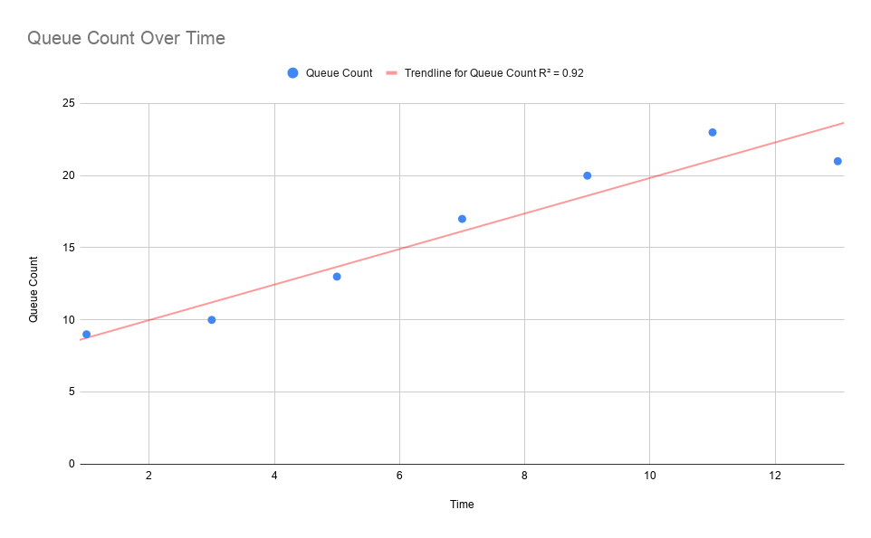
예측을 생성하기 위해 로컬 상태 스냅 샷 역사는 모델을 생성하기 위해 충분한 데이터를 얻기 위해 queried. 기본적으로 컴포넌트 상태 스냅샷은 매 분마다 캡처됩니다. 내부 모델은 예측을 생성하기 위해 적어도 2 개 이상의 관측이 필요합니다. 따라서 기본으로 사용할 수있는 예측을위한 최대 2 개 이상의 분이 걸릴 수 있습니다. 예측이 기본적으로 제공되는 것보다 더 빨리 필요하다면 스냅 샷의 타이밍이 조정 될 수 있습니다. nifi.components.status.snapshot.frequency 계정 정보 nifi.properties의 장점.
NiFi는 모델의 R-Squared 점수를 기본으로 사용하여 예측 정보를 전송하기 전에 모델의 효과를 평가합니다. 1개의 중요한 주: R-Square는 회귀 선이 관측 자료 대에 맞는 방법의 측정입니다. 예측이 얼마나 정확한지; 그러므로 몇몇 과실이 있을지도 모릅니다. 계산 된 모델의 R-Squared 점수가 구성 된 임계값을 충족하면 (에 의해 정의됨) nifi.analytics.connection.model.score.threshold) 다음 모델은 예측에 사용됩니다. 다른 모델은 사용되지 않으며 예측은 모델이 임계값을 초과하는 점수로 생성 될 때까지 사용할 수 없습니다. 기본 R-Squared 임계 값은 .90 그러나 예측 요구 사항에 따라 조정 될 수 있습니다.
예측 간격 nifi.analytics.predict.interval 다시 압력이 발생할 때 더 많은 프로젝트를 구성할 수 있습니다. 예측 쿼리 간격 nifi.analytics.query.interval 또한 모델을 생성하기 위해 시간 과거 관측에서 얼마나 멀리 뒤로 결정할 수 있습니다. 이 설정에 대한 조정은 모델의 득점 임계 값을 조정하여 합리적인 예측을 제공 할 수있는 점수를 선택할 수 있습니다.
이름 * Analytics 속성 분석 속성 구성에 대한 완벽한 정보.
시스템 특성
더 보기 nifi.properties의 장점 파일에 conf 디렉토리는 NiFi가 실행하는 방법을 제어하기위한 주요 구성 파일입니다. 이 섹션은이 파일 및 설정 옵션의 속성의 개요를 제공합니다.
| 시간 및 데이터 크기의 기간에 대한 가치는 단순히 "10"또는 "10 MB"의 예를 들어 측정 단위를 포함해야합니다. |
| 변경 후 nifi.properties의 장점, 효력을 가지고 가기 위하여 변화를 위한 순서에 있는 NiFi를 재시작하십시오. |
업그레이드 권고
의 내용 nifi.properties의 장점 파일은 상대적으로 안정적이지만 버전에서 버전으로 변경할 수 있습니다. 그것은 항상 좋은 생각이 파일을 검토 할 때 업그레이드하고 어떤 변경에주의를 지불.
asterisk로 표시된 항목 구성을 고려하십시오 (*) 격상시키는 그런 방법에는 더 쉽습니다. 예를 들어, 기본 디렉토리 구성을 기본 루트 설치 밖에 위치 변경합니다. 이 방식으로 이러한 항목은 업그레이드를 통해 구성 된 위치에 남아있을 수 있으며, NiFi가 모든 저장소 및 구성 파일을 찾을 수 있으며 이전 버전이 중지되고 새로운 버전이 시작될 때 그대로 남아있는 곳을 선택합니다. 또한 관리자는 이것을 재사용할 수 있습니다. nifi.properties의 장점 file and any other configuration files without having to re-configure them each time an upgrade takes place. 이름 * 업그레이드 NiFi 더 많은 정보.
핵심 특성
첫번째 단면도의 nifi.properties의 장점 파일은 핵심 속성입니다. 이 속성은 전체로 핵심 프레임 워크에 적용됩니다.
제품정보 |
제품 설명 |
|
JSON 기반 유량 설정 파일의 위치. 기본값은 |
|
NiFi가 흐름이 업데이트되면 자동으로 흐름의 백업 복사본을 생성합니다. 기본값은 |
|
아카이브 디렉토리의 위치 백업 사본의 흐름.json 저장됩니다. 기본값은 |
|
아카이브의 수명 흐름.json 파일. NiFi는 업데이트 할 때 만료 된 아카이브 파일을 삭제합니다. 흐름.json 이 속성이 지정되면. 만료는 현재 시스템 시간과 아카이브의 마지막 수정 타임스탬프에 따라 결정됩니다. 흐름.json. 아카이브 제한이 없는 경우 nifi.properties의 장점, NiFi는 이전 아카이브를 제거합니다. |
|
아카이브에 허용된 전체 데이터 크기 흐름.json 파일. NiFi는 전체 아카이브 파일 크기가이 구성 값보다 작을 때까지 가장 오래된 아카이브 파일을 삭제합니다. 이 속성이 지정되면. 아카이브 제한이 없는 경우 nifi.properties의 장점, NiFi 사용 |
|
허용되는 아카이브 파일 수. NiFi는 가장 오래된 아카이브 파일을 삭제합니다. N 최신 아카이브 만 유지 될 수 있으므로이 속성이 지정 된 경우. |
|
-upon restart- 프로세서, 컨트롤러 서비스 및 기타 schedulable 구성품을 포함한 NiFi 그래프의 구성품이 마지막 상태로 반환되어야 합니다. 클러스터에서 실행할 때, 모든 노드는 동일한 값이 있어야 합니다. 기본값은 |
|
폐쇄 기간을 나타냅니다. 기본값은 |
|
NiFi가 Flow Registry Clients와 Flow 구성을 동기화하는 기본 반복 간격을 지정합니다. 기본값은 |
|
많은 변화가 이루어질 때 흐름.json, 이 속성은 변경 사항을 작성하기 전에 기다리는 방법을 지정, 그래서 단일 쓰기로 변경을 배치하기 위해. 기본값은 |
|
구성 요소가 예기치 않은 예외가 발생하면 버그로 간주됩니다. 그 결과, 프레임 워크는 일시의 이 금액에 대한 구성 요소를 일시 중지합니다. 이것은 구성 요소가 기존 상태에 문제가 있기 때문에 시스템 리소스의 다량을 사용하지 않도록 수행됩니다. 기본값은 |
|
구성 요소가 작동하지 않을 때 (즉, "bored"), 이것은 새로운 데이터가 작동하는 경우 확인하기 전에 대기 시간의 양입니다. 이 방법, 그것은 새로운 일을 위해 검사하여 CPU 리소스를 사용하지 않습니다. 이 속성을 설정할 때, 지속적으로 작업을 수행하지 않는 구성 요소에 대한 여분의 대기 시간을 추가 할 수 있다는 것을 알고, 그들이이 "진짜"상태로 이동 한 후, 그들은 더 많은 작업을 검사하기 전에이 금액을 기다립니다. 기본값은 |
|
두 가지 구성 요소 사이의 새로운 연결을 그릴 때 연결의 뒤 압력 객체 임계 값에 대한 기본 값입니다. 기본값은 |
|
두 가지 구성 요소 사이의 새로운 연결을 그릴 때 연결의 뒤 압력 데이터 크기 임계 값에 대한 기본 값입니다. 기본값은 |
|
이 파일은 작성자가 정의된 방법을 지정합니다. 기본값은 |
|
이것은 사용자 이름 / 비밀번호 인증이 수행되는 방법을 지정하는 파일의 위치입니다. 이 파일은
만 고려하면 |
|
특정 공급자 (예를들면 UserGroupProviders)가 이전 구성을 검색하여 복원합니다. 기본값은 없습니다. |
|
nar 라이브러리의 위치. 기본값은 |
|
nar 작업 디렉토리의 위치. 기본값은 |
|
설정하기 |
|
프로세서의 수명주기 가동을 기다리는 시간 ( |
국가 관리
속성 파일의 상태 관리 섹션은 로컬 및 클러스터 전체 메커니즘 구성 메커니즘을 제공합니다. persist 국가에 성분을 위해. 이름 * 국가 관리 이 사용 방법에 대한 자세한 내용은 섹션.
제품정보 |
제품 설명 |
|
로컬 및 클러스터 전체 상태 공급자에 대한 구성을 포함하는 XML 파일. 기본값은 |
|
국가 공급자의 ID를 사용하여. 이 값은 값과 일치해야 합니다. |
|
클러스터 상태 공급자의 ID. 이 값은 값과 일치해야 합니다. |
|
NiFi의 이 인스턴스가 임베디드 ZooKeeper Server를 시작할지 여부를 지정합니다. ZooKeeperStateProvider와 함께 사용됩니다. 기본값은 |
|
임베디드 ZooKeeper Server의 구성을 포함하는 속성 파일을 지정합니다. |
Database 설정
데이터베이스 설정 섹션은 내부 데이터베이스에 대한 설정을 정의하여 유량 구성 기록을 추적합니다.
제품정보 |
제품 설명 |
|
Flow Configuration History 데이터베이스 디렉토리의 위치. 기본값은 |
교류 활동 Reporter
Flow Action Reporter는 사용자 정의 구현 클래스를 사용하여 흐름 구성 변경을 지원하는 프레임 워크 인터페이스입니다.
제품정보 |
제품 설명 |
|
클래스 구현 |
성분 미터 Reporter
Component Metric Reporter는 사용자 정의 구현 클래스를 사용하여 카운터 및 게이지를 포함한 공정 메트릭을 지원하는 프레임 워크 인터페이스입니다.
제품정보 |
제품 설명 |
|
클래스 구현 |
FlowFile 저장소
FlowFile 저장소는 시스템의 각 FlowFile의 속성과 현재 상태를 추적합니다. 기본적으로, 이 저장소는 다른 모든 저장소와 같은 루트 설치 디렉토리에 설치됩니다; 그러나, 그것은 advisable입니다 별도의 드라이브에 설정할 수 있습니다.
현재 FlowFile Repository의 세 가지 구현이 있습니다.
제품정보 |
제품 설명 |
|
FlowFile 저장소 구현. 기본값은 |
| 저장소 구현을 전환하는 것은 0개의 누적된 FlowFiles를 가진 인스턴스에서만 수행되어야 하고, caution로만 수행되어야 합니다. |
Ahead FlowFile 저장소 쓰기
WriteAheadFlowFileRepository 기본 구현입니다. FlowFiles를 디스크에 침투하고, 선택적으로 디스크에 모든 변경을 동기화 할 수 있습니다. 이것은 매우 비싸고 크게 NiFi 성능을 줄일 수 있습니다. 그러나 그것이라면 false, 급격한 전력 손실 또는 운영 체제 충돌이있는 경우 데이터 손실에 대한 잠재적일 수 있습니다. 기본값은 false.
제품정보 |
제품 설명 |
|
FlowFile 저장소의 위치. 기본값은 |
|
FlowFile 저장소 체크 포인트 간격. 기본값은 |
|
저장소의 저널이 체크포인트가 수행되기 전에 소모할 수 있는 저장량 |
|
설정하기 |
휘발성 FlowFile 저장소
이 구현은 디스크 대신 메모리에 FlowFiles를 저장합니다. · (주) Power/machine 고장 또는 NiFi 재시작 시 데이터 손실 발생 이 구현을 사용하려면, set nifi.flowfile.repository.implementation to org.apache.nifi.controller.repository.VolatileFlowFileRepository.
Swap 관리
NiFi는 메모리에 FlowFile 정보를 유지합니다 (JVM) 그러나 들어오는 자료의 큰 파도 중, FlowFile 정보는 시스템 성능이 JVM의 너무 많은 것을 취할 수 있습니다. 뚱 베어 이 효과에 대응하려면, NiFi "swaps" FlowFile 정보를 디스크에 일시적으로 JVM 공간이 될 때까지 다시 사용 이 속성은 그 프로세스가 어떻게 발생합니다.
제품정보 |
제품 설명 |
|
Swap Manager 구현. 기본값은 |
|
NiFi가 FlowFile 정보를 디스크에 교환하기 시작합니다. 기본값은 |
| 큐가 디스크에 스왑을 시작할 때, NiFi는 큐에 있는 모든 FlowFiles가 분류되지 않다는 것을 보증하지 않습니다 지정된 순서 이전 기사 큐에 구성. 새로운 FlowFiles arriving 에 queue are written 에 우선순위기를 고려하지 않고 스왑 파일. 스왑 파일이 메모리로 다시 읽을 때 우선 순위입니다. |
콘텐츠 저장소
Content Repository는 시스템의 모든 FlowFiles에 대한 내용을 보유하고 있습니다. 기본적으로 동일한 루트에 설치됩니다. 다른 모든 저장소로 설치 디렉토리; 그러나, 관리자는 별도의 구성 할 가능성이 사용 가능한 경우 그렇지 않으면 Content Repository가 FlowFile Repository와 같은 드라이브에 있지 않다면 가장 좋습니다. 대용량의 데이터를 처리하는 데이터 플로우에서 Content Repository는 디스크를 채울 수 있습니다. FlowFile 저장소, 그 디스크에, 손상 될 수 있습니다. 이 상황을 피하기 위해, 다른 드라이브에 이러한 저장소를 구성합니다.
제품정보 |
제품 설명 |
|
콘텐츠 저장소 구현. 기본값은 |
파일 시스템 내용 저장소 속성
제품정보 |
제품 설명 |
|
콘텐츠 저장소 구현. 기본값은 |
|
NiFi는 많은 작은 FlowFiles를 처리할 때, 그 FlowFiles의 내용은 내용 저장소에 저장됩니다, 그러나 우리는 각의 내용을 저장하지 않습니다
content repository에 별도의 파일로 개별 FlowFile. 이렇게하면 성능에 매우 만족할 것입니다. 각 120 바이트 FlowFile이면, 예를 들어, 자체 파일에 기록되었습니다. 대신,
우리는 어떤 문턱에 도달 할 때까지 동일한 파일에 쓰기 계속. 이 속성은 임계값을 구성합니다. 값을 너무 작게 설정하면 빈번한 성능에서 읽기 및
너무 많은 파일에 쓰기. 그러나, 파일은 더 이상 어떤 FlowFiles가 지적하지 않은 경우에 한 번 내용 저장소에서 삭제 될 수 있습니다. 따라서, 값을 너무 크게 설정할 수 있습니다.
콘텐츠 저장소에 남아있는 데이터에서 훨씬 더 긴, 잠재적으로 디스크 공간에서 실행 콘텐츠 저장소에 선도. 기본값은 |
|
콘텐츠 저장소의 위치. 기본값은 |
|
아카이브가 활성화되면 (see) |
|
아카이브가 활성화되면 (see) |
|
이 속성은 콘텐츠 저장소 디스크 사용 비율을 제어하는 데 사용됩니다. 즉, 백압은 프로세스 쓰기에 적용된다. 이 비율이 도달되면 콘텐츠 저장소는 추가 쓰기를 거부합니다. 글쓰기는 아카이브 삭제 프로세스가 아래의 콘텐츠 저장소 디스크 사용 비율을 가져온 때까지 거부됩니다. |
|
콘텐츠 아카이브를 활성화하려면, 이것을 설정 |
|
설정하기 |
|
콘텐츠 아카이브를 정리하는 빈도. 기본값은 |
|
Content Repository 파일이 많은 FlowFiles에 의해 공유될 때 (see |
Provenance 저장소
Provenance Repository는 Data Provenance와 관련된 정보를 포함합니다. 다음 4 개의 섹션은 Provenance Repository 속성입니다.
제품정보 |
제품 설명 |
|
Provenance 저장소 구현. 기본값은
|
|
파일 이전의 단일 이벤트 파일로 작성해야 하는 최대 이벤트 수. 기본값은 |
Ahead Provenance 저장소 속성 쓰기
제품정보 |
제품 설명 |
|
Provenance 저장소의 위치. 기본값은 |
|
데이터 검증 정보를 유지하는 시간의 최대량. 기본값은 |
|
한 번에 저장하는 데이터 입증 정보의 최대 금액.
기본값은 |
|
단일 "event file"로 작성하는 데이터의 양. 기본값은 |
|
Provenance Repository 쿼리에 사용할 스레드의 수. 기본값은 |
|
검색할 수 있도록 Provenance 이벤트를 인덱스하기 위해 쓰이는 스레드 수. 기본값은 |
|
"event file"가 초과될 때 입증된 정보를 압축하는지 나타냅니다. 기본값은 |
|
설정하기 |
|
이것은 색인되고 검색 할 수있는 필드의 comma-separated 목록입니다.
색인되지 않은 필드는 검색 할 수 없습니다. 유효한 분야는: |
|
이것은 색인되고 검색할 수 있는 FlowFile Attributes의 comma-separated 목록입니다. 기본적으로 공백입니다.
그러나 고려해야 할 좋은 예는 |
|
저장소는 Apache Lucene을 사용하여 색인 및 검색 기능을 수행합니다. 이 값은 Lucene Index가 얼마나 큰지 나타냅니다.
Repository가 새로운 인덱스에 쓰기 시작되기 전에. shard 크기의 큰 값은 Provenance Repository를 검색 할 때 Java heap 사용법에 더 많은 결과가되지만
더 나은 성능을 제공합니다. 기본값은 참고 : 이 값은 (더 이상 절반)보다 작아야한다. |
|
FlowFile 속성이 저장소에서 Provenance 이벤트를 검색할 때 최대 길이를 나타냅니다.
어떤 속성의 길이가이 값을 초과하면 이벤트가 재평가 될 때 truncated 것입니다. 기본값은 |
|
Apache Lucene은 인덱스에서 여러 "segments"를 만듭니다. 이 세그먼트는 주기적으로 더 빠른 제공하기 위하여 함께 합병됩니다
견적 요청 이 속성은 사용할 수있는 최대 스레드 수를 지정합니다. 각 각 저장 감독의. 기본값은 |
|
Provenance 쿼리가 실행되는 때마다 쿼리는 Apache Lucene indices를 먼저 검색해야 합니다. (최소, 대부분의 경우 - 거기에 있습니다. 종종 실행되는 일부 쿼리와 결과는 Lucene 지수를 검색하는 데 캐시됩니다. Lucene 인덱스가 처음 열릴 때, 매우 비싸지 않고 몇 초. 이것은 많은 다른 주사위가 있고, 훨씬 더 길게 가지고 가는 Provenance 질질에서 결과 할 수 있습니다. 인덱스가 열리면 운영 체제의 디스크 캐시는 일반적으로 디스크 캐시가이 데이터를 evicts 때까지 인덱스를 훨씬 빨리 다시 열 수 있도록 충분한 데이터를 보유합니다. 이 값이 설정된 경우, NiFi는 주기적으로 각 Lucene 색인을 열고 그 후에 닫습니다, "warm"에 순서. 이것은 Provenance Repository가 큰 때 훨씬 빠른 쿼리에서 발생합니다. 으로 모든 좋은 것, 비록, 그것은 비용으로 온다. 캐시를 데우는 것은 CPU 리소스를 가지고 있지만, 더 중요한 것은 운영 체제 디스크 캐시에서 다른 데이터를 완화하고 디스크의 읽기 (전적으로 큰 거래) 데이터에 결과. NiFi 성능을 낮출 수 있습니다. 그러나, NiFi가 CPU 및 디스크의 환경에서 실행되는 경우 완전히 활용되지 않습니다, 이 기능은 훨씬 빠른 Provenance 쿼리에 결과 할 수 있습니다. 이 속성의 기본 값은 공백 (i.e. 비활성화)입니다. |
Persistent Provenance 저장소 속성
제품정보 |
제품 설명 |
|
Provenance 저장소의 위치. 기본값은 |
|
데이터 검증 정보를 유지하는 시간의 최대량. 기본값은 |
|
한 번에 저장하는 데이터 입증 정보의 최대 금액. 기본값은 |
|
사용자 인터페이스에서 사용할 수 있도록 최신 데이터 검증 정보를 압연하기 전에 기다리는 시간의 양. 기본값은 |
|
한 번에 롤하는 정보의 양. 기본값은 |
|
Provenance Repository 쿼리에 사용할 스레드의 수. 기본값은 |
|
검색할 수 있도록 Provenance 이벤트를 인덱스하기 위해 쓰이는 스레드 수. 기본값은 |
|
입증 된 정보를 압축하는지 여부를 나타냅니다. 기본값은 |
|
설정하기 |
|
Provenance 이벤트 데이터를 직렬화하기 위해 사용해야하는 저널 파일 수. 이 값을 증가하는 것은 더 많은 작업을 동시에 저장소를 업데이트 할 수 있지만, 나중에 저널 파일의 더 비싼 merging에서 발생합니다. 이 값은 저장소를 동시에 업데이트 할 것으로 예상되는 스레드 수와 동일하지만 16은 반드시 환경에서 잘 작동하는 경향이있다. 기본값은 |
|
이것은 색인되고 검색 할 수있는 필드의 comma-separated 목록입니다. 색인되지 않은 필드는 검색 할 수 없습니다. 유효한 분야는: |
|
이것은 색인되고 검색할 수 있는 FlowFile Attributes의 comma-separated 목록입니다. 기본적으로 공백입니다. 그러나 고려해야 할 좋은 예는 |
|
shard 크기의 큰 값은 Provenance Repository를 검색 할 때 더 많은 Java heap 사용법에 결과되지만 더 나은 성능을 제공해야합니다. 기본값은 |
|
FlowFile 속성이 저장소에서 Provenance 이벤트를 검색할 때 최대 길이를 나타냅니다. 어떤 속성의 길이가이 값을 초과하면 이벤트가 재평가 될 때 truncated 것입니다. 기본값은 |
휘발성 Provenance 저장소 속성
제품정보 |
제품 설명 |
|
Provenance 저장소 버퍼 크기. 기본값은 |
상태 기록 저장소
Status History Repository는 Component Status History 및 Node Status History 도구에 대한 정보를 포함합니다. 사용자 인터페이스. 다음 속성은이 도구가 작동하는 방법을 관리합니다.
제품정보 |
제품 설명 |
|
상태 기록 저장소 구현. 기본값은 |
|
이 값은 컴포넌트의 상태 기록의 스냅샷을 캡처하는 방법을 나타냅니다. 기본값은 |
메모리 저장소
재산의 가치 nifi.components.status.repository.implementation is VolatileComponentStatusRepository·
상태 기록 자료는 기억에서 저장될 것입니다. 신청이 중지되면 모든 수집 된 정보는 손실됩니다.
더 보기 buffer.size 그리고 snapshot.frequency 역사 자료의 양을 유지하기 위해 함께 일합니다. 예를 들어,
데이터 포인트 스냅 샷 발생을 가진 역사적인 데이터의 2 일의 가치를 구성 5 분마다 구성
snapshot.frequency "5 분"과 "576"일 버퍼 크기입니다. 이 예제에 대해 60 분마다
12 (60 / 5) 그 시간 동안 스냅 샷 창. 48 시간 (12 * 48)에 대한 데이터를 유지하려면 버퍼 크기로 종료하십시오.
576.
제품정보 |
제품 설명 |
|
Status History Repository의 버퍼 크기를 지정합니다. 기본값은 |
Persistent 저장소
재산의 가치 nifi.components.status.repository.implementation is org.apache.nifi.controller.status.history.questdb.EmbeddedQuestDbStatusHistoryRepository·
상태 기록 자료는 영구적인 방법에 있는 디스크에 저장될 것입니다. 데이터는 재시작 사이에 보관됩니다. Persistent 저장소를 사용하는 경우, QuestDB NAR는 다시 제작해야 합니다. include-questdb 사용 가능한 프로필.
제품정보 |
제품 설명 |
|
노드 상태 데이터 (Repository disk space free, 쓰레기 수집 정보 등)의 수를 보관합니다. 기본 값
· |
|
일의 수는 구성 요소 상태 데이터 (즉, 각 프로세서에 대한 통계, 연결 등) 유지됩니다. 기본값은 |
|
지속적인 상태 역사 저장소의 위치. 기본값은 |
|
데이터베이스에 데이터베이스 백업의 위치는 손상되고 재구성됩니다. 기본값은 |
|
QuestDb 기반 상태 역사 저장소는 배치에 수집 된 상태 정보를 주장합니다. 일괄 크기는 주어진 시간에 persisted 상태 기록의 최대 수를 결정합니다. 기본값은 |
|
수집된 상태 기록의 빈도. 기본값은 |
사이트 속성
이 속성은 이 인스턴스의 NiFi가 Remote Process Groups가 dataflow에 구성될 때 NiFi의 원격 인스턴스와 어떻게 통신하는지 판단합니다.
Remote Process Group은 RAW 및 HTTP의 운송 프로토콜을 선택할 수 있습니다. 이름의 속성 nifi.remote.input.socket.* RAW 수송 의정서는 특정합니다. 마찬가지로, nifi.remote.input.http.* HTTP 전송 프로토콜 특정 속성입니다.
제품정보 |
제품 설명 |
|
클라이언트가 Site-to-Site 통신에 대한이 NiFi 인스턴스에 연결할 호스트 이름. 기본적으로 값은 값입니다. |
|
이것은 NiFi와 원격 NiFi 인스턴스의이 인스턴스 간의 통신이 보안되어야한다는 것을 나타냅니다 (즉, 보안 사이트 - 사이트). 기본적으로, 설정 |
|
Site-to-Site 통신을 위한 원격 입력 소켓 포트. 기본적으로, 공백이지만, RAW 소켓을 사용하려면 Site-to-Site에 대한 전송 프로토콜로 값이 있어야 합니다. |
|
HTTP Site-to-Site가 이 호스트에서 활성화해야하는지 지정합니다. 기본적으로, 설정 |
|
긴 거래가 서버에서 살아남을 수 있는 방법을 지정합니다. 기본적으로, 설정 |
|
Site-to-Site를 통해 통신 할 때 원격 NiFi 인스턴스에 대한 정보를 캐시하는 방법을 지정합니다. 기본적으로 NiFi는 캐시합니다. |
역률에 대한 사이트 Routing Properties
Site-to-Site는 클라이언트와 원격 NiFi 노드 사이의 피어 투 피어 통신을 요구합니다. E.g. 리모트 NiFi 클러스터가 3개의 노드가 있는 경우 (nifi0, nifi1 그리고 nifi2) 다음 클라이언트 요청은 각 노드에 도달 할 수 있습니다.
NiFi 클러스터가 인터넷 또는 회사 방화벽을 통해 Site-to-Site 클라이언트에서 수신 / 전송 데이터를 수신 할 계획이라면, 역 프록시 서버는 NiFi 클러스터 노드의 앞에 배치 될 수 있습니다. 클라이언트 경로 요청을 업스트림 NiFi 노드로 클라이언트 경로 요청으로, 서버 및 포트의 수를 줄이기 위해 노출해야 합니다.
같은 환경에서는 동일한 NiFi 클러스터도 같은 네트워크 내에서 Site-to-Site 클라이언트에 액세스 할 것으로 예상됩니다. FlowFiles를 NiFi 클러스터 노드 중의 로드 배포에 전송하는 것은 일반적인 예일 수 있습니다. 이 경우 클라이언트 요청은 역 프록시를 통해 이동하지 않고 노드에 직접 경로를 지정해야 합니다.
이러한 배포를 지원하기 위해, 원격 NiFi 클러스터는 클라이언트 요청 상황에 따라 사이트 현장 엔드포인트를 동적으로 노출해야합니다. 속성에 따라 동료가 고객에게 어떻게 노출되어야 하는지 구성합니다. routing 정의는 4개의 재산으로 이루어져 있습니다, when, hostname, port· secure, 그룹 protocol 그리고 name. 다수 여정 정의는 형성될 수 있습니다. protocol Site-to-Site 수송 프로토콜을 대표합니다. 즉, RAW or HTTP.
제품정보 |
제품 설명 |
|
Boolean 가치, |
|
더 많은 커뮤니케이션을 위해 Site-to-Site 클라이언트에 소개될 hostname를 지정하십시오. |
|
더 많은 커뮤니케이션을 위해 Site-to-Site 클라이언트에 소개될 항구 수를 지정하십시오. |
|
Boolean 가치, |
위의 모든 라우팅 속성은 NiFi Expression Language를 사용하여 요청 컨텍스트에서 대상 피어 설명을 컴파일할 수 있습니다. 가능한 변수는:
변수 이름 |
제품 설명 |
|
요청이 온 소스의 호스트 이름, 그리고 원래 대상. |
|
위와 같, 항구를 위해. 소스 포트는 클라이언트 측 TCP 포트로 유용 할 수 없습니다. |
|
위와 같고, 안전한 또는 아닙니다. |
|
Site-to-Site 프로토콜의 이름은 사용됩니다. |
|
현재 요청 유형의 이름, |
|
HTTP 요청 헤더 값은 그 이름에 의해 참조 될 수 있습니다. |
사이트 프로토콜 시퀀스
이 속성을 올바르게 구성하면 Site-to-Site Protocol sequence에 대한 이해가 필요합니다.
-
클라이언트는 원격 클러스터 Site-to-Site 정보를 얻기 위해 지정된 원격 URL에 HTTP(S) 요청을 전송하여 Site-to-Site 프로토콜을 개시합니다. 구체적으로, '/nifi-api/사이트-사이트이름 * 이 요청은 호출
SiteToSiteDetail. -
원격 NiFi 노드는 RAW 및 TCP 전송 프로토콜에 대한 입력 및 출력 포트 및 TCP 포트 번호로 응답합니다.
-
클라이언트는 TCP 포트 번호를 사용하여 원격 피어를 얻을 다른 요청을 #2에 반환합니다. 이 요청에서, 원시 소켓 통신은 RAW 수송 프로토콜에 사용되며, HTTP는 HTTP (S)를 사용합니다. 이 요청은 호출
Peers. -
원격 NiFi 노드는 호스트 이름, 포트, 보안 및 작업 부하를 포함하는 사용 가능한 원격 동료 목록으로 응답합니다. 이 시점에서 더 많은 통신은 클라이언트와 원격 NiFi 노드 사이에 수행됩니다.
-
클라이언트는 워크로드 정보를 기반으로 데이터를 전송하는 것을 결정합니다.
-
클라이언트는 트랜잭션을 원격 NiFi 노드로 만들 수 있도록 요청을 보냅니다.
-
원격 NiFi 노드는 트랜잭션을 허용합니다.
-
Data는 대상 피어로 전송됩니다. 다중 데이터 패킷은 일괄 방식으로 전송될 수 있습니다.
-
전송할 데이터가 없거나 일괄 처리 제한에 도달하면 전송된 데이터의 CRC32 해시를 계산하여 트랜잭션이 종료됩니다.
-
거래는 두 끝 모두에 투입됩니다.
역 프록시 구성
대부분의 역 프록시 소프트웨어는 HTTP 및 TCP 프록시 모드를 구현합니다. NiFi RAW Site-to-Site 프로토콜의 경우 HTTP 및 TCP 프록시 구성 모두 요구되며, 최소 2 포트가 열릴 필요가 있습니다. NiFi HTTP Site-to-Site 프로토콜은 역 프록시에서 1까지의 필요한 수를 최소화 할 수 있습니다.
역 프록시에서 올바른 HTTP 헤더를 설정하는 것은 NiFi가 제대로 작동하지 않고 클라이언트 요청을 routing하는 것이 중요합니다. 더 보기 프록시 설정 상세 정보
두 가지 유형의 요청-to-NiFi-node 매핑 기술이 있습니다. 하나는 'Server name to Node'이며 다른 이름은 'Port number to Node'입니다.
'Server name to Node'와 같은 포트는 요청된 서버 이름 (예를들면 다른 업스트림 NiFi 노드로 요청할 수 있습니다. nifi0.example.com, nifi1.example.com). 호스트 이름 해상도는 /etc/hosts 파일 또는 DNS 서버 항목을 추가하여 수행 할 수있는 동일한 역 프록시 주소로 다른 호스트 이름을 맵으로 구성해야합니다. 또한, 클라이언트가 프록시 사용 HTTPS를 반전하는 경우, 역 프록시 서버 인증서는 와일드 카드 일반적인 이름 또는 SAN 다른 호스트 이름에 의해 액세스해야합니다.
일부 역 프록시 기술은 서버 이름 라우팅 규칙을 지원하지 않습니다. 그런 경우 'Port number to Node' 기술을 사용하십시오. 'Port number to Node' mapping은 N 노드로 구성된 NiFi 클러스터의 역 프록시에서 N 오픈 포트를 요구합니다.
실제 구성에 대한 다음 예제를 참조하십시오.
사이트 및 역 프록시 예제
다음은 설정 파일이 어떻게 보이는지 설명하기 위해 proxy와 NiFi 설정의 일부 예입니다.
다음 다이어그램의 Client1는 NiFi 노드에 직접 액세스하지 않는 클라이언트를 나타냅니다. 클라이언트2는 직접 액세스가 있는 반면, 역 프록시를 통해 액세스합니다.
이 예에서, Nginx는 역 프록시로 사용됩니다.
예 1: RAW - Node mapping에 서버 이름
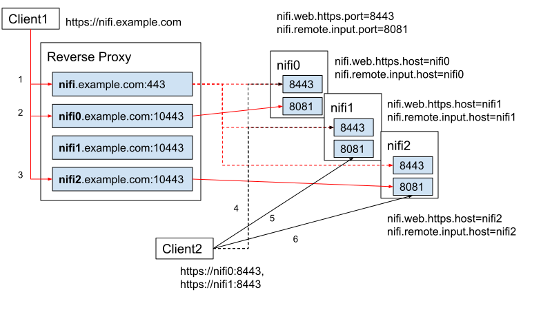
-
Client1는 Site-to-Site 프로토콜을 시작으로, 요청은 upstream NiFi 노드 중 하나에 경로를 지정합니다. NiFi 노드는 RAW의 Site-to-Site 포트를 준수합니다. 라우팅 규칙 예제1 in nifi.properties의 장점 아래에서 표시된 포트 10443은 반환됩니다.
-
Client1는 동료에게 묻습니다.
nifi.example.com:10443, 요청은 경로nifi0:8081. NiFi 노드는 유효한 동료를 보상합니다. 예제1 routing 규칙,nifi0:8081으로 변환nifi0.example.com:10443, 그래서nifi1그리고nifi2. 결과적으로,nifi0.example.com:10443,nifi1.example.com:10443그리고nifi2.example.com:10443반환합니다. -
Client1는 사용 결정
nifi2.example.com:10443더 많은 커뮤니케이션을 위해. -
반면에 Client2는 Site-to-Site bootstrap URI에 대한 두 개의 URI를 가지고 있으며, 그 중 하나를 사용하여 프로토콜을 시작합니다. 더 보기 예제1 라우팅은이 요청에 대해이 일치하지 않으며, 8081 포트가 반환됩니다.
-
Client2에서 피어를 묻습니다.
nifi1:8081· 예제1 일치하지 않습니다, 그래서 원래nifi0:8081,nifi1:8081그리고nifi2:8081그들은 반환한다. -
Client2는 사용 결정
nifi2:8081더 많은 커뮤니케이션을 위해.
여정 규칙 예제1 정의 된 nifi.properties의 장점 (모든 노드는 동일한 라우팅 구성이 있습니다):
# S2S Routing for RAW, using server name to node
nifi.remote.route.raw.example1.when=\
${X-ProxyHost:equals('nifi.example.com'):or(\
${s2s.source.hostname:equals('nifi.example.com'):or(\
${s2s.source.hostname:equals('192.168.99.100')})})}
nifi.remote.route.raw.example1.hostname=${s2s.target.hostname}.example.com
nifi.remote.route.raw.example1.port=10443
nifi.remote.route.raw.example1.secure=true
프로젝트 :
http {
upstream nifi {
server nifi0:8443;
server nifi1:8443;
server nifi2:8443;
}
# Use dnsmasq so that hostnames such as 'nifi0' can be resolved by /etc/hosts
resolver 127.0.0.1;
server {
listen 443 ssl;
server_name nifi.example.com;
ssl_certificate /etc/nginx/nginx.crt;
ssl_certificate_key /etc/nginx/nginx.key;
proxy_ssl_certificate /etc/nginx/nginx.crt;
proxy_ssl_certificate_key /etc/nginx/nginx.key;
proxy_ssl_trusted_certificate /etc/nginx/nifi-cert.pem;
location / {
proxy_pass https://nifi;
proxy_set_header X-ProxyScheme https;
proxy_set_header X-ProxyHost nginx.example.com;
proxy_set_header X-ProxyPort 17590;
proxy_set_header X-ProxyContextPath /;
proxy_set_header X-ProxiedEntitiesChain <$ssl_client_s_dn>;
}
}
}
stream {
map $ssl_preread_server_name $nifi {
nifi0.example.com nifi0;
nifi1.example.com nifi1;
nifi2.example.com nifi2;
default nifi0;
}
resolver 127.0.0.1;
server {
listen 10443;
proxy_pass $nifi:8081;
}
}
예 2: RAW - 포트 번호 노드 매핑
더 보기 예제2 routing maps 원본 호스트 이름 (nifi0, nifi1 그리고 nifi2) 다른 프록시 포트에 (10443, 10444 그리고 10445) 사용 equals 그리고 ifElse 이름 *
여정 규칙 예제2 정의 된 nifi.properties의 장점 (모든 노드는 동일한 라우팅 구성이 있습니다):
# S2S Routing for RAW, using port number to node
nifi.remote.route.raw.example2.when=\
${X-ProxyHost:equals('nifi.example.com'):or(\
${s2s.source.hostname:equals('nifi.example.com'):or(\
${s2s.source.hostname:equals('192.168.99.100')})})}
nifi.remote.route.raw.example2.hostname=nifi.example.com
nifi.remote.route.raw.example2.port=\
${s2s.target.hostname:equals('nifi0'):ifElse('10443',\
${s2s.target.hostname:equals('nifi1'):ifElse('10444',\
${s2s.target.hostname:equals('nifi2'):ifElse('10445',\
'undefined')})})}
nifi.remote.route.raw.example2.secure=true
프로젝트 :
http {
# Same as example 1.
}
stream {
map $ssl_preread_server_name $nifi {
nifi0.example.com nifi0;
nifi1.example.com nifi1;
nifi2.example.com nifi2;
default nifi0;
}
resolver 127.0.0.1;
server {
listen 10443;
proxy_pass nifi0:8081;
}
server {
listen 10444;
proxy_pass nifi1:8081;
}
server {
listen 10445;
proxy_pass nifi2:8081;
}
}
예 3: HTTP - Node mapping에 서버 이름
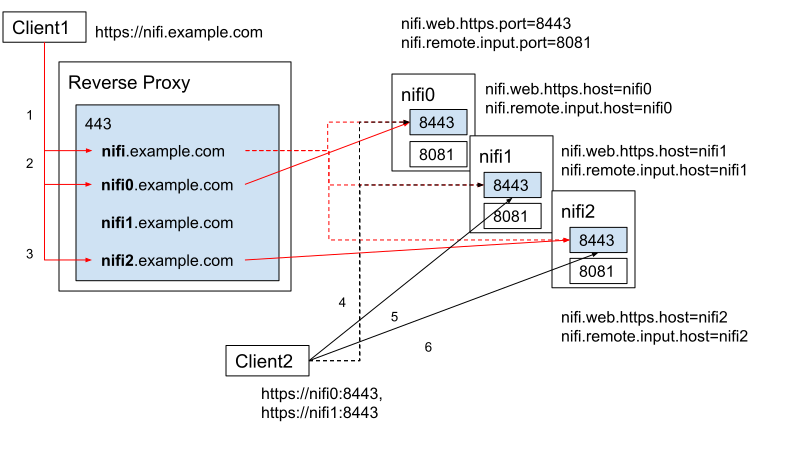
여정 규칙 예제3 정의 된 nifi.properties의 장점 (모든 노드는 동일한 라우팅 구성이 있습니다):
# S2S Routing for HTTP
nifi.remote.route.http.example3.when=${X-ProxyHost:contains('.example.com')}
nifi.remote.route.http.example3.hostname=${s2s.target.hostname}.example.com
nifi.remote.route.http.example3.port=443
nifi.remote.route.http.example3.secure=true
프로젝트 :
http {
upstream nifi_cluster {
server nifi0:8443;
server nifi1:8443;
server nifi2:8443;
}
# If target node is not specified, use one from cluster.
map $http_host $nifi {
nifi0.example.com:443 "nifi0:8443";
nifi1.example.com:443 "nifi1:8443";
nifi2.example.com:443 "nifi2:8443";
default "nifi_cluster";
}
resolver 127.0.0.1;
server {
listen 443 ssl;
server_name ~^(.+\.example\.com)$;
ssl_certificate /etc/nginx/nginx.crt;
ssl_certificate_key /etc/nginx/nginx.key;
proxy_ssl_certificate /etc/nginx/nginx.crt;
proxy_ssl_certificate_key /etc/nginx/nginx.key;
proxy_ssl_trusted_certificate /etc/nginx/nifi-cert.pem;
location / {
proxy_pass https://$nifi;
proxy_set_header X-ProxyScheme https;
proxy_set_header X-ProxyHost $1;
proxy_set_header X-ProxyPort 443;
proxy_set_header X-ProxyContextPath /;
proxy_set_header X-ProxiedEntitiesChain <$ssl_client_s_dn>;
}
}
}
웹 속성
웹 기반 사용자 인터페이스에 관한 이러한 속성.
제품정보 |
제품 설명 |
|
HTTP 호스트. 기본값은 공백입니다. |
|
HTTP 포트. 기본값은 공백입니다. |
|
HTTP 요청을 수신하는 포트 |
|
네트워크 인터페이스의 이름은 NiFi가 HTTP 요청을 바인딩해야합니다. 기본적으로 공백입니다. |
|
HTTPS 호스트. 기본값은 |
|
HTTPS 포트. 기본값은 |
|
같은 것과 |
|
Jetty HTTPS 포트의 SSLContext를 초기화하는 데 사용되는 Cipher 스위트. 지정되지 않은 경우, runtime SSLContext 기본값은 사용됩니다. |
|
SSL 클라이언트가 Jetty에 연결하기 위해 사용할 수없는 Cipher 스위트. 지정되지 않은 경우, runtime SSLContext 기본값은 사용됩니다. |
|
Server 헤더는 HTTP 응답에 포함되어야 합니다. 기본값은 Chrome에서 Jetty와 SSL cipher 협상은 'Developer Tools' 플러그인에서 'Security' 탭에서 확인할 수 있습니다. Firefox에서 Jetty와 협상 된 SSL cipher는 브라우저 주소 표시줄의 URL 왼쪽에있는 'Secure Connection' 위젯에서 확인할 수 있습니다. |
|
네트워크 인터페이스의 이름은 NiFi가 HTTPS 요청을 바인딩해야합니다. 기본적으로 공백입니다. |
|
HTTPS를 사용할 때 지원되는 애플리케이션 프로토콜의 공간 통합 목록. 기본값은 값은 설정할 수 있습니다. 값은 설정할 수 있습니다. |
|
Jetty 작업 디렉토리의 위치. 기본값은 |
|
Jetty 스레드의 수. 기본값은 |
|
요청 및 응답 헤더에 허용된 최대 크기. 기본값은 |
|
애플리케이션이 실행될 때 고려할 수 있는 헤더 값의 comma-separated list
HTTPS를 활성화하고 역 프록시를 통해 요청을받습니다. 각 값은 다음과 같은 도메인 이름을 포함 할 수 있습니다.
잘못된 포트를 포함하는 요청 역 프록시 서버는 입력 요청 헤더를 필터링하고 허용된 프록시 호스트 값을 제공합니다. 신청. 프록시 호스트 헤더 값은 포트 번호 없이 도메인 이름을 포함해야 합니다. |
|
허용되는 HTTP X-ProxyContextPath, X-Forwarded-Context 또는 X-Forwarded-Prefix 헤더 값의 comma 분리된 목록. 기본적으로 이 값은 프록시 컨텍스트 경로를 포함하는 모든 요청을 의미한다. 이 속성을 구성하면 프록시 경로가 이 목록에 포함되는 요청을 허용할 수 있습니다. |
|
최대 크기 (HTTPS) |
|
초당 연결에서 최대 요청 수. 이 과잉 요청은 첫 번째 지연, 다음 throttled. 기본값은 |
|
로그인 액세스 토큰의 최대 수는 초당 연결에서. 이 초과 요청은 HTTP 429로 거부됩니다. 기본값은 |
|
IP 주소의 통일된 목록. 초당 최대 요청을 초과 할 수있는 클라이언트의 IP 주소를 지정하는 데 사용됩니다 ( |
|
웹 요청에 대한 요청 타임 아웃. 이 시간보다 더 긴 실행 요청은 HTTP 503 서비스 사용 가능한 응답으로 끝나는 것입니다. 기본값은 |
|
HTTP 요청 로그 메시지의 매개 변수 형식. 형식 속성은 Jetty에 설명 된 modifiers 및 코드를 지원합니다. 사용자 정의. 기본값은 결합된 로그 형식을 사용한다.
일반 로그 형식 또한
CustomRequestLog는 다음과 같은 SLF4J 로거를 사용하여 포맷 된 메시지를 작성합니다.
|
|
정규 표현식은 REST API의 JMX MBean 이름을 제어합니다.
반환 할 수 있습니다. 기본 값은 빈이며 모든 MBeans를 차단합니다. 설정하기 |
보안 속성
NiFi의 다양한 보안 기능에 대한 이러한 특성. 이 재산의 많은 것은 더 상세하게 덮습니다 보안 설정 이 관리자의 가이드의 섹션.
제품정보 |
제품 설명 |
|
이것은 프로세서에서 구성되는 민감한 속성 값을 암호화하는 데 사용되는 암호입니다. 기본적으로 공백이지만 시스템 관리자는 값을 제공해야합니다. 최소 길이가 10자이지만 길이의 문자열이 될 수 있습니다. 이 암호를 한 번 설정하고 하나 이상의 민감한 프로세서 속성이 구성 된 것을 알고, 이 암호는 변경되지 않아야합니다. |
|
민감한 속성을 암호화하는 데 사용되는 알고리즘. 기본값은 |
|
Property Encryption Provider의 클래스 이름은 애플리케이션 시작 중에 로드되고 초기화됩니다. 공급자는 민감한 구성 요소 속성, 민감한 매개 변수 값 및 OpenID Connect authorized client token을 보호합니다. 기본값은 |
|
구성 속성에 대한 접두사 속성 암호화 제공자. NiFi는 공급자에게 재산을 공급하기 전에 재산 이름에서 접두사를 제거합니다. 속성이 기본적으로 구성되지 않습니다. |
|
SSL 컨텍스트 공장이 keystore 및 truststore에 업데이트하면 자동으로 다시로드되어야합니다. NiFi는 구성 된 상점 경로와 컨텐츠 다이제스트를 비교하고, 읽기 시간에 기호 링크를 다시 해결하기 때문에 Kubernetes Secret 및 Projected-volume 마운트가 감지됩니다. 기본적으로, 설정 |
|
구성된 keystore 및 truststore 경로가 업데이트와 비교된 간격을 지정합니다. 만 적용 |
|
keystore의 전체 경로와 이름. 기본값은 |
|
keystore 유형. 기본값은 |
|
keystore 암호. 기본적으로 공백입니다. |
|
키 암호. 기본적으로 공백입니다. |
|
신뢰의 전체 경로와 이름. 기본값은 |
|
신뢰의 유형. 기본값은 |
|
비밀번호 기본적으로 공백입니다. |
|
구성 된 작성자의 지정 파일 형식 파일 사용. 기본적으로, 설정 |
|
익명 인증은 HTTPS를 실행할 때 허용됩니다. true로 설정하면 클라이언트 인증서는 TLS를 통해 연결할 필요가 없습니다. 기본값은 |
|
로그인 ID 공급자의 유형이 무엇인지 나타냅니다. 지정된 파일의 공급자로부터 식별자에게 설정할 수 있습니다. |
ID Mapping 속성
이 속성은 사용자 식별을 정상화하기 위해 사용될 수 있습니다. 구현할 때, identities는 다른 정체성 공급자(certificates, LDAP, Kerberos)가 내부적으로 NiFi로 처리됩니다. 결과적으로, 중복 사용자는 사용자가 사용자가 한 번 설정해야 할 권한과 같은 사용자 별 구성을 피하고 사용자 별 구성입니다.
다음 예제는 Kerberos의 인증서 및 주체로부터 정상적인 DN를 보여줍니다.
nifi.security.identity.mapping.pattern.dn=^CN=(.*?), OU=(.*?), O=(.*?), L=(.*?), ST=(.*?), C=(.*?)$ nifi.security.identity.mapping.value.dn=$1@$2 nifi.security.identity.mapping.transform.dn=NONE nifi.security.identity.mapping.pattern.kerb=^(.*?)/instance@(.*?)$ nifi.security.identity.mapping.value.kerb=$1@$2 nifi.security.identity.mapping.transform.kerb=NONE
각 속성의 마지막 세그먼트는 교체 값으로 패턴을 연관시키는 데 사용되는 식별자입니다. 사용자는 NiFi에 요청을 할 때, 그들의 정체성은 lexicographical 순서에 있는 그 본의 각각 일치하면 볼 수 있습니다. 가장 먼저 일치하면, 교체가 지정됩니다. nifi.security.identity.mapping.value.xxxx 이용안내 자주 묻는 질문 CN=localhost, OU=Apache NiFi, O=Apache, L=Santa Monica, ST=CA, C=US 위의 DN 매핑 패턴과 DN 매핑 값을 일치 $1@$2 적용분야 사용자는 정상화됩니다 localhost@Apache NiFi.
맵핑 외에도 변환이 적용될 수 있습니다. 지원된 버전은 NONE (변환 없음), LOWER (필수), UPPER (필수). 지정되지 않은 경우, 기본값은 NONE.
| 이 매핑은 "Initial Admin Identity", "Cluster Node Identity", 그리고 어떤 레거시 사용자에게도 적용됩니다. 파일 형식 파일 및 LDAP (See)에서 가져온 사용자 Authorizers.xml 설치). |
그룹 이름은도 맵핑 할 수 있습니다. 다음 예제는 기존 그룹 이름을 수락하지만 더 낮을 것입니다. 외부 작성자와 함께 사용될 때 도움이 될 수 있습니다.
nifi.security.group.mapping.pattern.anygroup=^(.*)$ nifi.security.group.mapping.value.anygroup=$1 nifi.security.group.mapping.transform.anygroup=LOWER
| 이 매핑은 모든 레거시 그룹에 따라 적용됩니다. 파일 형식 또한 그룹은 LDAP에서 수입했습니다. |
Cluster 공통 속성
NiFi 클러스터를 설정할 때, 이 속성은 모든 노드에 동일한 방법을 구성해야 합니다.
제품정보 |
제품 설명 |
|
노드가 클러스터 코디네이터에 심베트를 방출해야 하는 간격. 기본값은 |
|
클러스터 코디네이터의 최대 수는 클러스터 코디네이터의 노드를 놓을 수 있습니다 클러스터 코디네이터의 노드 상태를 업데이트합니다. 기본값은 |
클러스터 노드 속성
클러스터 노드의 이러한 속성을 구성합니다.
제품정보 |
제품 설명 |
|
설정하기 |
|
클러스터 리더 선거 구현 클래스 이름 또는 간단한 클래스 이름. 기본값은 구현은 설정할 수 있습니다. |
|
Kubernetes Leases에 적용된 접두사 문자열 클러스터 리더 선거를 추적합니다. 접두사 구성은 1개 이상 실행시 필요합니다. 동일한 Kubernetes Namespace에서 Apache NiFi 클러스터. 기본값은 공백입니다. |
|
노드의 완전히 자격이 된 주소. 기본적으로 공백입니다. |
|
노드의 프로토콜 포트. 기본적으로 공백입니다. |
|
클러스터의 다른 노드와 통신하는 데 사용되어야하는 스레드의 최대 수. 이 속성은 기본적으로 |
|
클러스터의 노드의 상태가 변경되면 이벤트가 생성됩니다.
클러스터 페이지에서 볼 수 있습니다. 이 값은 각 노드의 메모리에 보관하는 많은 이벤트를 나타냅니다. 기본값은 |
|
클러스터의 또 다른 노드에 연결하면, 이 노드가 고려하기 전에 얼마나 오래 기다리는지 지정합니다.
연결 실패. 기본값은 |
|
클러스터의 또 다른 노드와 대화할 때, 이 노드가 정보를 수신하기를 기다리는 방법을 지정합니다.
노드와의 통신을 고려하기 전에 원격 노드에서 실패합니다. 기본값은 |
|
클러스터의 노드에 복제할 수 있는 뛰어난 웹 요청의 최대 수. 이 요청이 초과되면 임베디드 Jetty 서버는 "409: Conflict" 응답을 반환합니다. 이 속성은 기본적으로 |
|
노드 방화벽 파일의 위치. 연결할 수 있는 모든 노드를 나열하는 파일입니다. 클러스터에. 그것은 보안의 추가 층을 제공합니다. 이 값은 기본적으로 공백이며 방화벽 파일은 사용되지 않습니다. 이름 * 클러스터 방화벽 구성 파일 형식 세부 사항. |
|
유량을 "correct" Flow로 충전하기 전에 대기 시간을 지정합니다. 투표한 노드 수가 지정된 숫자와 동일하다면
에 의해 |
|
클러스터에 필요한 노드 수를 지정하여 흐름의 초기 선거를 유발합니다. 이것은 클러스터의 노드가 대기를 피할 수 있도록 허용합니다. 처리하기 전에 긴 시간 우리가 클러스터에 노드의 최소 이 숫자에 도달하면. |
|
클러스터를 통해 로드 밸런싱 데이터에 대한 들어오는 연결을 듣는 포트를 지정합니다. 기본값은 |
|
load balancing data를 위한 들어오는 연결을 듣기 위한 hostname을 지정합니다.
클러스터를 통해. 지정되지 않은 경우, 기본적으로 값에 의해 사용됩니다. TLS 암호화가 클러스터 통신을 활성화할 때, 이 값은 DNS와 일치하는 호스트 이름에 설정되어야 합니다. Application Key store에서 설정된 서버 인증서에 포함된 항목 이름. |
|
이 노드와 클러스터의 각 노드 사이에 생성하는 최대 연결 수. 예를 들어, 클러스터에 5 노드가 있고 이 값은 4로 설정되면 로드밸런싱 목적 (5 x 4 = 20)에 설치된 20 개의 소켓 연결이 될 것입니다. 기본값은 |
|
이 노드에서 클러스터의 다른 노드에 데이터를 전송하는 데 사용할 수 있는 최대 스레드 수입니다. 주어진 실만 한 번에 단일 소켓에 쓸 수 있지만, 단일 스레드는 주어진 연결이 주어진 시간에 읽기 / 쓰기를 위해 사용할 수 없기 때문에 동시에 여러 연결 서비스를 제공 할 수 있습니다. 기본값은 참고 : 이 값의 증가는 클러스터의 다른 노드와 통신하기 위해 추가 스레드를 허용하고 내용과 FlowFile 저장소에 데이터를 작성합니다. 그러나 이 속성이 노드의 수보다 더 큰 값을 설정하면 클러스터의 노드의 수에 의해 곱합니다. 노드당 연결의 수 () |
|
다른 노드와 대화할 때, 이 금액이 소켓에 읽거나 쓰기 할 때 어떤 진행도하지 않고, TimeoutException이 던질 것입니다. 그런 다음 데이터에서 생성되거나 클러스터의 다른 노드로 전송되는 결과, 구성된 Load Balancing Strategy에 따라. 기본값은 |
ZooKeeper 속성
NiFi는 클러스터의 노드가 1차 노드의 역할을 수행해야 하는 determining을 위한 Apache ZooKeeper에 의존합니다. 노드가 클러스터 코디네이터의 역할을 수행해야 한다. 이 속성은 NiFi의 주문에서 구성되어야 합니다. 클러스터에 가입하십시오.
제품정보 |
제품 설명 |
|
아파치 ZooKeeper에 연결해야 하는 연결 문자열. 이것은 comma-separated 명부입니다
hostname:port 쌍의. 예를 들어, |
|
연결 실패를 고려하기 전에 ZooKeeper에 연결 할 때 얼마나 기다리는. 기본값은 |
|
세션이 만료되기 전에 ZooKeeper에 연결을 잃어버린 후 기다리는 방법. 기본값은 |
|
ZooKeeper에서 사용해야하는 루트 ZNode. ZooKeeper는 디렉토리 같은 구조를 제공합니다.
데이터 저장 이 구조의 각 'directory'는 ZNode라고합니다. 이것은 루트 ZNode 또는 'directory'를 나타냅니다.
데이터 저장에 사용되어야 합니다. 기본값은 |
|
클라이언트 TLS를 사용하여 ZooKeeper를 acccess 여부. 기본값은 |
|
ZooKeeper와 통신할 때 사용하는 개인 키를 포함하는 Keystore의 파일명. |
|
옵션. Keystore의 유형. 뚱 베어 |
|
Keystore의 암호. |
|
ZooKeeper 서버(s)를 확인하기 위해 사용되는 Truststore의 파일명. |
|
옵션. Truststore의 유형. 뚱 베어 |
|
Truststore의 암호. |
|
최대 버퍼 크기는 ZooKeeper에서 보내진 패킷에 대한 바이트입니다.
기본값으로 더 보기 ZooKeeper 관리자의 가이드 이 재산을 분류 안전 옵션·
이 속성을 변경 견적 요청 설치하기 |
Kerberos 속성
제품정보 |
제품 설명 |
|
사용중인 경우 krb5 파일의 위치. 기본적으로 공백입니다. 이번에는 단일 krb5 파일만 허용됩니다.
NiFi 인스턴스 당 지정되어 있으므로, 이 속성은 개별 프로세서보다는 서비스 주체를 지원하기 위해 여기에 구성됩니다.
필요한 경우 krb5 파일은 여러 realms를 지원할 수 있습니다.
예: |
|
NiFi Kerberos 서비스 주의 이름, 사용 하는 경우. 기본적으로 공백입니다. 이 속성은 NiFi를 위해 클라이언트 다른 시스템으로 인증됩니다.
예: |
|
NiFi Kerberos keytab의 파일 경로, 사용 하는 경우. 기본적으로 공백입니다. 이 속성은 NiFi를 위해 클라이언트 다른 시스템으로 인증됩니다.
예: |
Analytics 속성
이 속성은 내부 NiFi 예측 분석 기능의 동작을 백압 예측과 같은 결정하고 모든 노드에 동일한 방식으로 구성해야합니다.
제품정보 |
제품 설명 |
|
이것은 예측이 클러스터에 사용할 수 있는지 나타냅니다. 기본값은 |
|
분석 예측 (예 : queue saturation)의 시간 간격은해야합니다. 기본값은 |
|
과거 관측에 대한 쿼리 시간 간격 (예 : 스냅 샷의 마지막 3 분). 기본값은 |
|
연결 예측을 만들기 위해 사용되는 상태 분석 모델의 구현 클래스. 기본값은 |
|
모델을 평가하기 위해 사용되어야하는 득점 유형의 이름. 기본값은 |
|
득점 값에 대한 임계 값 (모델 점수가 주어진 임계값 이상이어야 함). 기본값은 |
Runtime 모니터링 속성
Long-Running Task Monitor 주기적으로 NiFi Processor executor thread를 검사하고 더 긴 시간 동안 실행 된 사람들을 위해 경고 로그와 게시판 메시지를 생성합니다.
아마도 붙어 / 거는 프로세서 작업을 감지하는 데 사용할 수 있습니다.
작업 모니터의 성능 영향에 주의하십시오 : 정상적인 흐름 실행에 영향을 미칠 수있는 모든 실행에 대한 스레드 덤프를 만듭니다.
Long-Running Task Monitor는 속성에 대한 값을 정의하여 비활성화 할 수 있으며 기본적으로 비활성화됩니다.
그것을 가능하게 하기 위하여, 둘 다 nifi.monitor.long.running.task.schedule 그리고 nifi.monitor.long.running.task.threshold 속성은 유효 기간으로 구성해야합니다.
제품정보 |
제품 설명 |
|
Long-Running Task Monitor의 성공 실행 사이의 시간 기간 (예를 들어. |
|
작업이 긴 실행으로 간주되는 시간 기간, 즉 고정 / 거는 (예를 들어. |
성능 추적 속성
NiFi는 사용자 인터페이스를 통해 기본적으로 미터의 매우 중요한 수를 노출합니다. 그러나, 때때로 추가 메트릭 병목에 추가 할 수 있습니다. NiFi Dataflow의 성능 향상
더 보기 nifi.performance.tracking.percentage 속성은 추가 미터의 추적을 가능하게하기 위해 사용될 수 있습니다. 이 메트릭스를 가하면 시스템 통화가 필요합니다.
몇몇 체계에 비싼. 결과적으로, 이 속성은 기본값의 값 0미터가 시간의 0%를 붙잡아야한다는 것을 나타내는. I.e., 기능은 비활성화되어 있습니다.
기본값. 이 기능을 활성화하려면 이 속성의 값을 0 ~ 100 범위의 정수 값으로 설정하십시오. 이것은 시간 NiFi의 비율이 무엇인지 나타냅니다.
이 미터를 수집합니다.
예를 들어 값이 20로 설정되면 NiFi는 프로세서가 실행되는 시간의 약 20 %의 각 프로세서에 대해이 메트릭을 수집합니다. 시간의 나머지, 그것은 이미 메트릭을 추가하기 위해 메트릭을 추가하기 위해 캡처 한 값을 사용합니다.
수집 된 미터는 프로세서가 CPU를 사용하는 시간의 비율을 포함 (I / O를 기다리거나 모니터 / 잠금 콘텐츠로 인해 완료 또는 차단), 프로세서의 시간의 비율은 콘텐츠 저장소에서 독서를 소비하고, 콘텐츠 저장소에 쓰기, Garbage Collection 등으로 차단.
그래서, 우리의 예제를 계속, 우리가 값을 설정하면 nifi.performance.tracking.percentage 프로세서는 1,000배를 달리기 위해 트리거되며, NiFi는 얼마나 많은 CPU를 측정합니다.
시간이 측정 된 동안 200의 반복에 소비되었습니다 (즉, 1,000의 20 %). 이 금액은 CPU 시간의 500 밀리 초입니다. 또한, 고려하자
프로세서는 대부분이 소켓 I/O에서 차단을 보았기 때문에 그 200 invocations를 완료하기 위해 5,000 milliseconds를했다. 이에서 NiFi는 CPU를 계산합니다.
시간의 약 10 % (500 / 5,000 * 100 %). 이제 프로세서가 35 초가 걸린 모든 1,000 인발을 완료하기 위해 고려하십시오. NiFi는 산출할 것입니다,
그런 다음 프로세서는 CPU 시간의 약 3.5 초 (또는 3500 밀리 초)를 사용했습니다.
결과적으로, 이 속성의 가치를 높이는 경우, 가치까지 100, 우리는 더 정확한 결과를 얻을 것입니다. 그러나, 그것은 감시자에 더 비싼 일지도 모릅니다.
이 메트릭을 보려면 명령을 실행하여 진단을 수집 할 수 있습니다. nifi.sh diagnostics <filename> 생성된 파일을 검사합니다. 이름 * NiFi 진단 더 많은 정보.
NAR 공급자 재산
이 속성은 모든 구성 된 공급자에 사용됩니다.
제품정보 |
제품 설명 |
|
설문 조사의 간격. 기본값은 |
|
분쟁 해결 전략의 이름. 기본값은 |
|
사실, 공급자는 첫 번째 성공적인 리소스 fetch 때까지 NiFi를 중단합니다. |
다음 속성은 하나 이상의 NAR 공급자를 구성 할 수 있습니다. NAR 공급자는 외부 소스에서 NAR를 검색하고 지정된 디렉토리에 복사합니다. nifi.nar.library.autoload.directory.
각 NAR 공급자 재산은 체재를 따릅니다 nifi.nar.library.provider.<identifier>.<property-name> 각 공급자는 지명된 적어도 1개의 재산이 있어야 합니다 implementation.
HDFS NAR 공급자
HDFS NAR 공급자는 Hadoop FileSystem API를 사용하여 NAR를 검색합니다. 이것은 전통적인 HDFS 인스턴스 또는 클라우드 스토리지와 함께 사용할 수 있습니다. s3a or abfs. 클라우드 스토리지를 사용하기 위해 Hadoop Libraries NAR는 클라우드 스토리지 프로파일을 활성화해야합니다.
제품정보 |
제품 설명 |
|
구현 클래스의 완전히 자격을 갖춘 클래스 이름 |
|
구성 리소스의 comma 분리 목록과 같은 |
|
옵션 저장 위치 등 |
|
NAR가 있는 저장소 위치 내에서 디렉토리. |
|
인증을위한 옵션 Kerberos 주요. 지정된 경우 keytab 또는 password 중 하나도 지정해야 합니다. |
|
인증을위한 옵션 Kerberos Keytab. |
|
인증을위한 옵션 Kerberos 암호. |
NiFi Registry NAR 공급자
NiFi Registry NAR 공급자는 NiFi Registry 인스턴스에서 NAR를 검색합니다. 안전한 설치에서, 이 공급자는 NiFi 서버가 읽는 허가한 모든 물통에서 NARs를 검색할 것입니다.
제품정보 |
제품 설명 |
|
구현 클래스의 완전히 자격을 갖춘 클래스 이름 |
|
NiFi Registry 인스턴스의 URL 등 |
비밀 관리자 속성
이 속성은 커넥터에 의해 사용되는 비밀을 해결하는 책임있는 비밀 관리자를 구성합니다. Secrets Manager는 비밀 값을 검색하기 위해 Parameter Providers를 위임합니다.
제품정보 |
제품 설명 |
|
Secrets Manager 구현의 완전히 자격을 갖춘 클래스 이름. 기본값으로 |
|
비밀 값을 해결하는 데는 언젠가 매개변수 공급자로부터 새로 고침되기 전에 캐시됩니다. 같은 NiFi 시간 내구값을 수락 |
Versioned Process Group의 커넥터 마이그레이션
NiFi는 source Versioned Process Group에서 새로 만들어진 커넥터를 마이그레이션하는 한 번의 경로를 지원합니다. Source Versioned Process Group은 참고로 사용됩니다. 커넥터는 소스의 구성, 매개 변수 및 구성 요소 상태를 미러링하기 위해 자체 관리 흐름을 읽고 업데이트합니다. 근원 교류 자체는 연결관에 설치되지 않습니다. migration support를 구현하는 커넥터는이 기능을 사용할 수 있습니다.
지역 이민을 위한 필수 사항
소스가 같은 NiFi 인스턴스의 로컬 프로세스 그룹이라면 Process Group은 NiFi가 마이그레이션을 허용하기 전에 다음 요구 사항을 모두 만족해야합니다.
-
source Process Group은 버전 제어에 따라야 합니다.
-
소스 프로세스 그룹은해야합니다
UP_TO_DATEFlow Registry의 최신 게시 버전으로. -
source Process Group의 모든 프로세서가 중지되어야 합니다.
-
source Process Group의 모든 컨트롤러 서비스는 비활성화되어야 합니다.
-
source Process Group의 모든 큐는 비어 있어야 합니다.
-
source Process Group은 Process Group의 외부 컨트롤러 서비스를 참조해야 합니다.
-
대상 커넥터는 아직 구성되지 않아, 중지, 이전에 마이그레이션하지.
-
타겟 커넥터의 활성 유량은 이동이 시작될 때 빈해야합니다. 비empty 초기 흐름을 발송하는 커넥터는 마이그레이션 경로와 호환되지 않습니다.
source Process Group이 버전 제어하에 있지 않은 경우, export it and use the upload payload path instead.
교통수단
마이그레이션을 실행하는 두 가지 방법이 있습니다.
-
Local Process Group 마이그레이션: 현재 NiFi 화포에 이미 존재하는 자격이 된 Process Group을 선택하십시오. NiFi는 이전을 시작하기 전에 나열된 필수품을 검증합니다.
-
업로드된 페이로드 마이그레이션: Process Group 정의를 내보내기, 소스 흐름이 어떤 경우 구성 요소 상태를 포함 하 고 커넥터 마이그레이션 엔드 포인트에 결과 흐름 스냅 샷 페이로드를 업로드 합니다. 이 경로는 non-version-controlled 소스, 다른 NiFi 인스턴스로부터 수출 된 소스 또는 로컬 버전 제어 요구 사항을 만족시킬 수없는 다른 소스에 사용됩니다.
업로드 된 페이로드의 경우, NiFi는 버전 제어에서 소스 흐름이 필요하지 않습니다. 연결관의 자신의 이동 지원 체크는 업로드한 교류가 수입될 수 있는지 결정합니다.
이동을 실행
-
새로운 커넥터 인스턴스를 만듭니다.
-
source Process Group이 로컬 및 레지스트리 백업이라면 커넥터 마이그레이션 소스 목록에서 선택하십시오.
-
소스 프로세스 그룹은 로컬 경로에 자격이되지 않는 경우, 구성 요소 상태에 수출하고 커넥터 마이그레이션 페이로드 엔드 포인트로 페이로드를 업로드.
-
커넥터 마이그레이션 요청을 시작합니다.
-
완료 될 때까지 요청을 오염.
-
연결관 윤곽을 열고 어떤 누락된 비밀을 공급하십시오.
-
구성을 검증하고 커넥터를 시작합니다.
NiFi 모조
이동 도중, NiFi는 수출한 교류 정의, 모수 상황, 참조된 자산 및 어떤 붙어 있는 성분 국가를 가진 연결관을 제공합니다 @Stateful 부품.
커넥터는 흐름 번역을 수행하고 자체 관리 흐름을 업데이트하여 소스를 미러링합니다.
로컬 마이그레이션의 경우, 커넥터는 소스 프로세스 그룹에서 커넥터의 자신의 자산 네임스페이스로 참조된 자산을 복사할 수 있습니다. 업로드 된 페이로드 마이그레이션은 소스 자산에 대한 라이브 액세스를 포함하지 않습니다, 그래서 필요한 모든 자산 콘텐츠는 마이그레이션 후 별도 다시로드해야합니다.
과민한 모수 가치는 수출한 교류 정의에서 선물하지 않습니다. 마이그레이션 후, 시작하기 전에 모든 누락된 비밀 값과 커넥터를 구성합니다.
성공적인 마이그레이션 후 정리
성공적인 로컬 마이그레이션 후, NiFi는 소스 프로세스 그룹을 비활성화하고 ``(Migrated)`에 이름을 붙여줍니다. 이것은 소스 흐름이 이미 커넥터 마이그레이션에 기초로 사용되었는지 명확하게합니다.
업로드된 페이로드 및 마이그레이션 요청 상태는 요청의 수명을 위해 메모리에만 보관됩니다. 요청이 성공할 때 실패하거나 취소할 때, NiFi는 해당 요청과 관련된 업로드 된 페이로드를 제거합니다.
Cluster-topology 규칙에 대한 구성 요소 상태
소스가 migrated 인 경우 stateful 구성 요소에 대한 LOCAL 구성 요소 상태 (예를 들어 @Stateful 프로세서 또는 컨트롤러 서비스), 대상 클러스터는 소스 유량의 수출 상태 참조로 많은 연결된 노드로 적어도 있어야합니다.
마이그레이션 관리자에 의해 적용되는 규칙은:
size(component.localNodeStates) <= number of connected nodes in the destination cluster
Versioned Process Group을 대상 클러스터로 가져올 때 적용되는 것과 같은 규칙입니다. NiFi는 로컬 마이그레이션 경로와 업로드 된 페이로드 경로 모두에 대해 시행하므로 LOCAL 상태는 대상 클러스터를 통해 악화 될 수 있습니다.
마이그레이션 요청이 같은 메시지와 실패할 때 Cannot import flow with component state: the flow definition contains local state from N source node(s) but the destination cluster has only M connected node(s), 다음의 행동 중 하나를 가지고:
-
모든 분리된 클러스터 노드를 다시 연결하기 때문에 대상 클러스터가 적어도
N연결된 노드는 마이그레이션을 다시 실행합니다. -
Re-export 구성 요소 상태없이 소스 흐름 ( "부품 상태 포함" 옵션 포함) 및 페이로드를 다시로드. 커넥터는 LOCAL 상태가 상류 시스템에서 재현 할 때 적합한 모든 대상 노드에 빈 LOCAL 상태를 시작합니다.
-
적어도 있는 클러스터로 마이그레이션
N연결된 노드.
마이그레이션 요청은 클러스터 노드가 있을 때 거부됩니다. CONNECTING, DISCONNECTED, or DISCONNECTING 요청이 제출되면 구성 요소 상태 및 자산 내용이 현재 연결되지 않은 노드에 동기화 될 수 없기 때문에 요청이 제출됩니다.
분리된 노드를 다시 연결하고 요청을 다시 전송합니다.
업그레이드 NiFi
아래 지침은 1.x.0에서 다른 버전으로 업그레이드 할 때 일반 단계입니다.
업그레이드하기 전에 검토해야합니다. 공지사항 새로운 버전으로 변경된 변화를 이해하고, 기존의 데이터 흐름과/또는 환경에 영향을 미칠 수 있습니다. 또한, 체크 Migration 안내 특정 NiFi 버전으로 이동할 때 주의해야 하는 항목에 대한 페이지.
| 클러스터의 모든 노드는 다른 NiFi 버전과 같은 NiFi 버전으로 업그레이드해야 합니다. |
Preserve 사용자 정의 프로세서
사용자 정의 NAR를 가지고 있다면, 다음과 같이 중앙 집중된 위치에 저장하여 업그레이드 중에 보존하십시오.
-
두 번째 라이브러리 디렉토리 만들기
custom_lib. -
사용자 정의 NAR를 새로운 lib 디렉토리로 이동합니다.
-
새로운 라인 추가 nifi.properties의 장점 이 새로운 lib 디렉토리를 지정하는 파일:
nifi.nar.library.directory=./lib nifi.nar.library.directory.custom=/opt/configuration_resources/custom_lib
보존 NAR
기본 NAR 파일 중 하나를 수정한 경우, 업그레이드는 이러한 변경 사항을 삭제합니다. 다음과 같이 사용자 정의를 보존 :
-
기본 NAR 파일로 만든 변경 사항을 식별하고 저장합니다.
-
NiFi 업그레이드를 수행합니다.
-
새로운 NiFi 인스턴스에서 동일한 NAR 파일 변경을 구현합니다.
정리 활동 및 종료 기존 NiFi
기존 NiFi 설치에서:
-
새로운 데이터의 섭취를 방지하기 위해 모든 소스 프로세서를 중지합니다.
-
데이터 플로우(s)에서 큐의 모든 활성 데이터가 없을 때까지 NiFi를 실행할 수 있습니다.
-
기존 NiFi 인스턴스를 종료합니다.
새로운 NiFi 버전 설치
기존 NiFi 설치에 새로운 NiFi를 디렉토리에 설치하십시오.
-
다운로드 최신 버전 아파치 NiFi의.
-
NiFi를 제거 사이트맵 파일 (
tar -xvzf file-name) 기존 NiFi 디렉토리에 평행한 디렉토리에. 예를 들어 기존 NiFi 설치가 설치되면/opt/nifi/existing-nifi/, 새로운 NiFi 버전을 설치/opt/nifi/new-nifi/. -
NiFi 클러스터를 업그레이드하면 클러스터의 각 노드에서 이러한 단계를 반복합니다.
Host Machine - Node 1 |--> opt/ |--> existing-nifi |--> new-nifi
Host Machine - Node 2 |--> opt/ |--> existing-nifi |--> new-nifi
Host Machine - Node 3 |--> opt/ |--> existing-nifi |--> new-nifi
| 새로운 NiFi 디렉토리에 대한 모든 파일 및 디렉토리 소유권이 기존 디렉토리에 설정했는지 확인하십시오. |
새로운 NiFi 설치에 대한 구성 파일 업데이트
기존 NiFi 설치에서 설정 파일을 사용하여 새로운 NiFi 배포에서 해당 속성을 수동으로 업데이트하십시오.
| 일반적으로 기존 NiFi 버전에서 새로운 NiFi 버전으로 구성 파일을 복사하지 마십시오. 새 구성 파일은 복사 및 붙여넣기 구성 파일을 잃을 수있는 새로운 속성을 소개합니다. |
다음 테이블을 사용하여 구성 파일의 업데이트를 안내합니다. <installation-directory>/conf.
| 구성 파일 | 자주 묻는 질문 |
|---|---|
파일 형식 |
제출하기 사용중인 경우 구성 모범 사례는 다음과 같은 구성 파일을 저장하기위한 NiFi 기본 디렉토리 밖에 별도의 위치를 생성하는 것이 좋습니다. |
부츠스트랩.conf |
기존 NiFi 사용 부츠스트랩.conf 새로운 NiFi의 속성을 업데이트 할 파일. |
프로젝트 |
유량 저장을 위한 기본 위치를 유지한다면 ( 민감한 속성 키를 통해 데이터 흐름에 민감한 구성 요소를 암호화하는 경우 nifi.properties의 장점, 동일한 열쇠는 당신의 위에 복사할 때 사용됩니다 프로젝트. 당신이 열쇠를 바꾸는 필요로 하는 경우에, 보십시오 [sensitive flow migration]에 대하여 아래에 단면도. |
nifi.properties의 장점 |
현재 사용 nifi.properties의 장점 새로운 NiFi 파일에 동일한 속성을 팝업합니다. 참고 : 이 파일은 NiFi 구성 설정의 대부분을 포함하고 있으므로 값을 올바르게 복사해야합니다. |
NiFi 모범 사례를 따르는 경우 다음과 같은 속성은 기본 NiFi 설치 경로 이외의 외부 감독에게 지적해야합니다. 아래 속성이 NiFi 기본 설치 경로 내에서 디렉터리에 대한 경우, 새로운 NiFi에 대상 디렉토리를 복사해야합니다. 기존 NiFi 설치를 중지하십시오. |
|
기본값을 유지한 경우 ( 외부 위치에 흐름을 저장하면, 거기에 포인트에 속성 값을 업데이트합니다. |
|
아카이브 사본을 보관하려면 위의 것과 동일하게 적용됩니다. 프로젝트. |
|
각 저장소에 대한 외부 위치를 사용하는 것이 좋습니다. 동일한 외부 데이터베이스 저장소 위치에 새로운 NiFi 포인트. |
|
각 저장소에 대한 외부 위치를 사용하는 것이 좋습니다. 동일한 외부 flowfile 저장소 위치에 새로운 NiFi를 점하십시오. 경고: Flowfile 저장소가 새로운 NiFi에 접근하지 않는 경우 데이터 손실을 경험할 수 있습니다. |
|
각 저장소에 대한 외부 위치를 사용하는 것이 좋습니다. 동일한 외부 내용 저장소 위치에 새로운 NiFi를 점하십시오. 기존 NiFi는 여러 콘텐츠 저장소가 정의될 수 있습니다. 정확히 동일한 속성 이름은 사용되며 적절한 일치하는 콘텐츠 저장소 위치로 포인트를 확인합니다. 예를 들면:
경고: 콘텐츠 저장소가 새로운 NiFi에 액세스 할 수없는 경우 데이터 손실을 경험할 수 있습니다. 경고: 속성 이름이 잘못되거나 잘못된 콘텐츠 저장소에 속성 포인트 인 경우 데이터 손실을 경험할 수 있습니다. |
|
각 저장소에 대한 외부 위치를 사용하는 것이 좋습니다. 동일한 외부 검증 저장소 위치에 새로운 NiFi를 포인트하십시오. 기존 NiFi는 여러 콘텐츠 저장소가 정의될 수 있습니다. 정확히 동일한 속성 이름은 사용되며 적절한 일치 입증 된 repo 위치에 포인트를 확인합니다. 예를 들면:
참고 : 입증 된 저장소가 제대로 이동되지 않거나 속성이 제대로 업데이트되지 않은 경우 오래된 이벤트를 쿼리 할 수 없습니다. |
|
상태 관리.xml |
제품정보 기본 위치를 유지한 경우 ( 구성 모범 사례는 국가를 외부 디렉토리로 이동하는 것이 좋습니다. |
NiFi 클러스터의 경우, |
|
NiFi 클러스터의 경우, 확인 |
|
새로운 외부 ZooKeeper를 설정하는 경우, [zookeeper migrator]에 대하여 ZooKeeper 정보를 하나의 클러스터로 이동하고 ZooKeeper 노드 소유권을 마이그레이션하는 방법에 대한 지침. |
| typos의 모든 구성 속성을 더블 체크합니다. |
Sensitive 속성을 업데이트 Algorithm
다음 명령은 기존의 흐름 구성을 읽고 새로운 민감한 속성 알고리즘을 설정하는 데 사용할 수 있습니다. nifi.properties의 장점:
$ ./bin/nifi.sh set-sensitive-properties-algorithm <algorithm>명령은 다음과 같은 흐름 구성 파일 속성을 읽습니다. nifi.properties의 장점:
-
nifi.flow.configuration.file
각 파일의 존재에 대한 명령은 발견 된 민감한 속성 값을 업데이트합니다.
이름 * 재산 암호화 알고리즘 지원되는 값.
Sensitive 속성 키 업데이트
버전 1.14.0부터, NiFi는 값이 필요합니다. nifi.sensitive.props.key in nifi.properties의 장점.
다음 명령은 기존의 흐름 구성을 읽고 새로운 민감한 속성 키를 설정하는 데 사용할 수 있습니다. nifi.properties의 장점:
$ ./bin/nifi.sh set-sensitive-properties-key <sensitivePropertiesKey>명령은 다음과 같은 흐름 구성 파일 속성을 읽습니다. nifi.properties의 장점:
-
nifi.flow.configuration.file
명령은 파일 파일의 존재를 확인하고 민감한 속성 값을 업데이트합니다.
새로운 민감한 속성 키의 최소 필요한 길이는 12 문자입니다.
새로운 NiFi 시작
당신의 새로운 NiFi 임명에서:
-
새로운 NiFi 인스턴스의 각각을 시작합니다.
-
인증:
-
모든 데이터 흐름은 실행 상태로 돌아 왔습니다. 일부 프로세서는 구성해야 할 새로운 속성이있을 수 있습니다, 어느 경우 그들은 멈추고 표시되지 않는 ().
-
예상되는 컨트롤러 서비스 및 보고 작업이 다시 실행됩니다. 어떤 컨트롤러 서비스나 잘못된 작업을 보고하는 경우 ()).
-
-
새로운 NiFi 인스턴스를 확인한 후 안정적이고 일하며, 이전 설치가 제거될 수 있습니다.
| 원래 NiFi가 서비스로 실행되도록 설정되면 symlinks 또는 서비스 스크립트를 업데이트하여 새로운 NiFi 버전 실행할 수 있습니다. |
프로세서 위치
사용 가능한 구성 옵션
NiFi는 프로세서 위치에 대한 3 가지 구성 옵션을 제공합니다. 이름:
nifi.nar.library.directory nifi.nar.library.directory.<custom> nifi.nar.library.autoload.directory
이 옵션을 사용하여 설정된 경로는 NiFi 홈 디렉토리와 관련이 있습니다. 예를 들어, NiFi 홈 디렉토리가 있다면 /var/lib/nifi, 도서관 디렉토리는 ./lib, 다음 마지막 경로는 /var/lib/nifi/lib.
|
더 보기 nifi.nar.library.directory 제공된 NiFi 프로세서의 기본 위치에 사용됩니다. NiFi 업그레이드 중에 손실 될 수 있기 때문에 사용자 정의 프로세서에 이것을 사용하는 것이 좋습니다. 예를 들면:
nifi.nar.library.directory=./lib
더 보기 nifi.nar.library.directory.<custom> 관리자는 NiFi에 대한 여러 임의 경로를 제공하여 사용자 정의 프로세서를 찾습니다. 독특한 속성 식별자는 각 독특한 경로에 대한 속성을 추가해야합니다. 예를 들면:
nifi.nar.library.directory.myCustomLibs=./my-custom-nars/lib nifi.nar.library.directory.otherCustomLibs=./other-custom-nars/lib
더 보기 nifi.nar.library.autoload.directory 자동로드 기능에 의해 사용됩니다. NiFi가 다시 시작을 필요로하지 않고 구성 된 경로에 새 프로세서를 자동으로로드 할 수 있습니다. 예를 들면:
nifi.nar.library.autoload.directory=./autoload/lib
Custom Processor 설치
이 단면도는 NiFi에 재시작을 요구하는 주문 가공업자를 설치하는 본래 과정을 설명합니다. Autoloading 기능을 사용하려면 아래를 참조하십시오. Autoloading 사용자 정의 프로세서 이름 *
첫째, 사용자 정의 프로세서의 디렉토리를 구성합니다. 이름 * 사용 가능한 구성 옵션 이 구성 옵션에 대한 자세한 내용은.
nifi.nar.library.directory.myCustomLibs=./my-custom-nars/lib
이 디렉토리가 존재하고 nifi 사용자 및 그룹에 적합한 권한을 부여합니다.
이제, 우리는 구성 된 디렉토리에 우리의 사용자 정의 프로세서 nar를 배치해야합니다. 구성된 디렉토리는 NiFi 홈 디렉토리와 관계가 있습니다. 예를 들어, NiFi Home Dir는 다음과 같습니다. /var/lib/nifi, 우리는 우리의 주문 가공업자 nar를 안으로 둘 것입니다 /var/lib/nifi/my-custom-nars/lib.
파일이 nifi 사용자 및 그룹에 적합한 권한이 있는지 확인하십시오.
Restart NiFi 및 사용자 정의 프로세서는 이제 흐름에 새로운 프로세서를 추가 할 때 사용할 수 있어야합니다.
Autoloading 사용자 정의 프로세서
이 단면도는 주문 가공업자를 위한 Autoloading 특징을 이용하는 과정을 설명합니다.
autoloading 기능을 사용하려면, nifi.nar.library.autoload.directory 속성은 원하는 디렉토리에 점을 설정해야합니다. 기본적으로, 이 점에서 ./extensions. NiFi를 시작하기 전에이 디렉토리가 존재하고 nifi 사용자 및 그룹에 적합한 권한이 있음을 보장합니다.
예를 들면:
nifi.nar.library.autoload.directory=./extensions
이제, 우리는 구성 된 디렉토리에 우리의 사용자 정의 프로세서 nar를 배치해야합니다. 구성된 디렉토리는 NiFi 홈 디렉토리와 관계가 있습니다. 예를 들어, NiFi Home Dir는 다음과 같습니다. /var/lib/nifi, 우리는 우리의 주문 가공업자 nar를 안으로 둘 것입니다 /var/lib/nifi/extensions. autoload 디렉토리에 nar를 복사하기 전에, 파일이 nifi 사용자 및 그룹에 대한 적절한 권한을 가지고 있다는 것을 보장합니다.
브라우저 페이지를 새로 고침하고 사용자 정의 프로세서는 이제 흐름에 새로운 프로세서를 추가 할 때 사용할 수 있어야합니다.
NAR 공급자
NiFi는 외부 소스에서 autoloading 기능을 위한 fetching NAR 파일을 지원합니다. External Resource Providers를 이용하여 달성할 수 있습니다.
외부 자원 제공자는 외부 데이터 소스와 NiFi 사이의 커넥터 역할을합니다.
구성될 때, 외부 자원 공급자는 유효한 NAR 파일을 위한 외부 근원을 polls하고 그(것)들을 기구에 제안합니다. 프레임 워크는 새로운 NAR 파일을 fetches하고 복사합니다.
이름 * nifi.nar.library.autoload.directory autoloading를 위해.
기본적으로 polling은 5 분마다 발생합니다. 속성을 지정하여 이 빈도를 변경할 수 있습니다. nifi.nar.library.poll.interval.
기본적으로 NAR 파일은 같은 이름으로 파일이 정의 된 폴더에 존재하지 않는 경우 다운로드됩니다. nifi.nar.library.autoload.directory. 설정 nifi.nar.library.conflict.resolution 다른 분쟁 해결 전략이 적용될 수 있습니다. 현재 다음과 같은 전략이 지원됩니다.
이름 * |
제품 설명 |
IGNORE는 |
파일을 대체하지 않을 것: 파일이 같은 이름으로 디렉토리에 존재하는 경우, 다시 다운로드되지 않습니다. |
공지사항 |
지정된 디렉토리에 파일을 대체 할 때 소스에서 사용할 수있는 파일이 있지만 새로운 수정 날짜. |
첫 번째 외부 자원 수집이 모든 공급자에 성공할 때까지, 서비스는 마무리 시작에서 NiFi를 방지합니다. 이 행동을 무시하기 위해, nifi.nar.library.restrain.startup 선언해야 합니다.
값으로 true 이 서비스는 실행이 성공할 때까지 NiFi를 막습니다. false 아니다. 기본값은 true 해당 이용 후기에 달린 코멘트가 없습니다.
외부 리소스 공급자는 추가하여 구성할 수 있습니다. nifi.nar.library.provider.<providerName>.implementation 적절한 구현 클래스를 포함하는 값을 가진 속성. 일부 구현이 필요할 수 있습니다.
더 많은 속성. 이 구현에 의해 정의되고 접두해야 nifi.nar.library.provider.<providerName>..
더 보기 <providerName> arbitrary이고 단일 공급자를 위해 다수 재산을 correlate 봉사합니다. 다수 공급자는, 다른과 더불어 놓일지도 모릅니다 <providerName>. 현재 NiFi는 HDFS 기반 공급자를 지원합니다.
HDFS 외부 자원 공급자
이 구현은 HDFS 파일 시스템에서 파일을 다운로드 할 수 있습니다.
가치의 nifi.nar.library.provider.<providerName>.implementation *필수 org.apache.nifi.flow.resource.hadoop.HDFSExternalResourceProvider·
다음의 추가 속성은 공급자에 의해 정의됩니다:
| 이름 * | 제품 설명 |
|---|---|
주요사업 |
HDFS 리소스 목록, comma에 의해 분리. |
이름 * 관련 기사 |
HDFS 내의 NAR 파일의 소스 디렉토리. 참고: 공급자는 recursively 파일을 검사하지 않습니다. |
저장. 위치 |
옵션. core-site.xml에 정의된 저장 위치를 설정하면 이 값에 의해 과잉됩니다. |
kerberos. 주요 |
옵션. Kerberos 는 정통합니다. |
kerberos.keytab에 |
옵션. Kerberos keytab는 주요한과 관련했습니다. |
kerberos.password의 특징 |
옵션. Kerberos 암호는 주와 관련된. |
예제 구성:
nifi.nar.library.provider.hdfs1.implementation=org.apache.nifi.flow.resource.hadoop.HDFSExternalResourceProvider nifi.nar.library.provider.hdfs1.resources=/etc/hadoop/core-site.xml nifi.nar.library.provider.hdfs1.source.directory=/customNars
nifi.nar.library.provider.hdfs2.implementation=org.apache.nifi.flow.resource.hadoop.HDFSExternalResourceProvider nifi.nar.library.provider.hdfs2.resources=/etc/hadoop/core-site.xml nifi.nar.library.provider.hdfs2.source.directory=/other/dir/for/customNars
NiFi 진단
아래 명령을 실행하여 NiFi 노드에서 진단 데이터를 얻을 수 있습니다.
$ ./bin/nifi.sh diagnostics --verbose <file>파일 인수가 지정되지 않은 경우, 정보는 추가될 것입니다. nifi-bootstrap.log 파일.
NiFi 부트 스트랩 프로세스는 JVM, 운영 체제 및 하드웨어에 대한 정보를 수집하는 실행 NiFi 인스턴스에 요청을 보냅니다. NARs는 NiFi에로드 된 NARs, 플로우 구성 및 사용 된 구성 요소, 긴 실행 프로세서 작업, 클러스터링 상태, 쓰레기 수집, 메모리 풀 피크 사용, NiFi 저장소, NiFi 구성 부품, 스레드 덤프 등의 부품, 위치 지정에 쓰기.
더 보기 --verbose flag는 filename의 앞에 옵션으로 제공될 수 있으며, 추가적인 진단정보를 작성할 수 있습니다.
재시작 및 종료에 자동 진단
NiFi는 자동으로 종료 이벤트에서 진단 명령을 실행할 수 있습니다. 이 기능은 기본적으로 비활성화되어 사용할 수 있습니다. nifi.diagnostics.on.shutdown.enabled 호텔 위치 nifi.properties 구성 파일. 파일을 저장해야 할 위치를 구성 할 수도 있으며, 아래의 속성을 사용하여 여러 파일이 보관되어야합니다.
제품정보 |
제품 설명 |
|
(true 또는 false) 이 속성은 종료하기 전에 NiFi 진단을 실행하는지 결정합니다. 기본값은 |
|
(true 또는 false) 이 속성은 동서 모드에서 NiFi 진단을 실행하는지 결정합니다. 기본값은 |
|
이 속성은 NiFi 진단 디렉토리의 위치를 지정합니다. 기본값은 |
|
이 재산은 진단 파일의 최대 허용된 수를 지정합니다. 제한이 초과되면 가장 오래된 파일이 삭제됩니다. 기본값은 |
|
이 속성은 진단 디렉토리의 최대 허용 크기를 지정합니다. 제한이 초과되면 가장 오래된 파일이 삭제됩니다. 기본값은 |
긴 진단의 경우, NiFi는 명령 실행 종료 전에 종료 할 수 있습니다. 이 경우, graceful.shutdown.seconds 속성은 더 높은 값으로 설정해야합니다. bootstrap.conf 구성 파일.
메모리 오류에서 자동 헬리콥터 덤프
속성을 설정할 수 있습니다. bootstrap.conf 메모리 (OOM) 오류가 발생했을 때 힙 덤프를 생성하기 위해 NiFi를 구성합니다. 메모리 누출을 분석하는 데 도움이 될 수 있습니다. 속성의 예는 추가해야합니다. bootstrap.conf 다음 :
java.arg.heapDumpPath=-XX:HeapDumpPath=./work java.arg.heapDumpOnOutOfMemory=-XX:+HeapDumpOnOutOfMemoryError
이 속성 값 (예에서 설정)은 heap dump을 생성하는 원인이됩니다. ./work 디렉토리. 힙 덤프의 위치는 위치 변경에 의해 구성 -XX:HeapDumpPath= 인수.
JMX 미터
REST API를 사용하여 JMX 메트릭을 얻을 수 있습니다.
이용 가능한 정보는 등록된 MBeans에 달려 있습니다. 미터는 성능 지표와 관련된 데이터를 포함 할 수 있습니다.
MBeans의 목록은 애플리케이션 속성의 정규식 패턴을 사용하여 제어됩니다. 더 보기 재산 빈은 MBeans가 반환되지 않습니다. 기본 값은 모든 MBeans를 차단하고 반환을 변경해야합니다. 정보.
nifi.web.jmx.metrics.allowed.filter.pattern=.*
정규 표현식 패턴을 사용하여 선택적으로 제공 된 쿼리 매개 변수는 매칭 이름 만 표시됩니다. 이 매개 변수를 비우는 것은 블록 필터 패턴에 의해 필터링을 제외하고 모든 MBeans를 나열합니다.
https://localhost:8443/nifi-api/system-diagnostics/jmx-metrics?beanNameFilter=bean.name.1|bean.name.2
예 출력은 다음과 같습니다.
[
{
"beanName" : "bean.name.1,type=type1",
"attributeName" : “attribute-name",
"attributeValue" : “attribute-value”
},
{
"beanName" : "bean.name.2, type=type2",
"attributeName" : "attribute-name",
"attributeValue" : integer-value
}
]